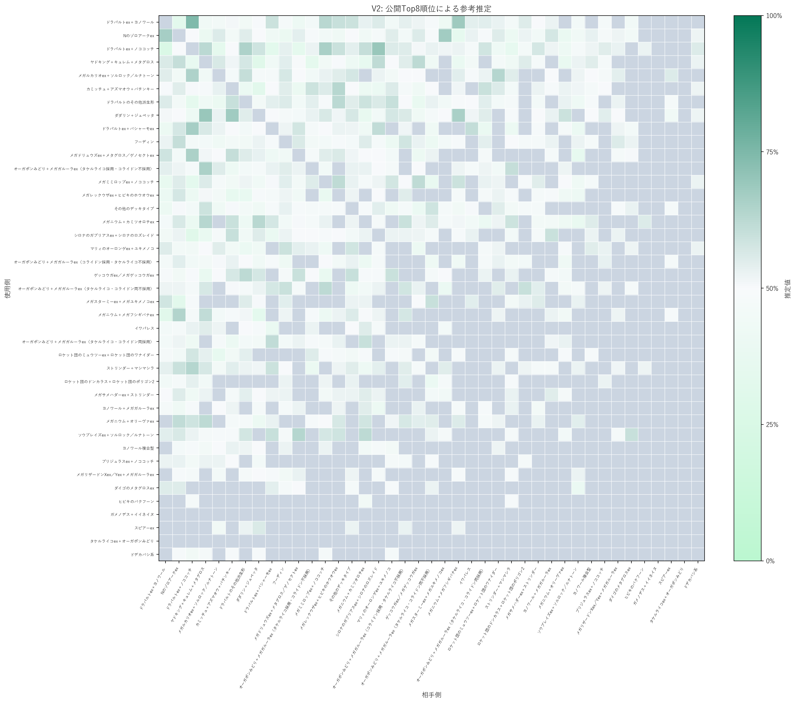

このページの数値は、公開されたTop8順位を使うV2の参考推定です。実際に観測された個別対戦の勝敗ではなく、将来の勝率でもありません。Swissの組合せ、参加者全体、Top8外の結果、決勝トーナメントの組合せは公開順位だけでは分かりません。弱い根拠の数値はその状態を明記した参考値です。未収束、prior only、利用不可、または状態未確認の対面は、誤解を避けるため数値を表示しません。
V2 対面推定 参考値
公開Top8順位を用いたV2の参考推定
作成日: 2026-10-03 JST
この数値の扱い
対象期間
2026-09-26 – 2026-10-01
完全Top8大会
69
partial大会
0
公開Top8枠
552
除外大会
0
対面の参考推定ヒートマップ
使用側は行、相手側は列です。灰色（）は数値を表示しない対面で、50%を補完していません。

全対面の参考値
表は横にスクロールできます
| 使用側 | 相手側 | V2-primary 順位制約の確定・可能範囲 | V2-secondary 参考推定 / 95%範囲 / 状態 |
|---|---|---|---|
ドラパルトex＋ヨノワール   | Nのゾロアークex  | 順位制約で確定: 1試合 可能対戦数 1–10 / 可能範囲 0.0–80.0% | 33.4% 95%範囲 5.4–70.5% / 参考推定（弱い根拠） |
ドラパルトex＋ヨノワール | ドラパルトex＋ノココッチ  | 順位制約で確定: 2試合 可能対戦数 2–15 / 可能範囲 33.3–100.0% | 74.3% 95%範囲 41.5–96.1% / 参考推定（弱い根拠） |
ドラパルトex＋ヨノワール | ヤドキング＋キュレム＋メタグロス    | 順位制約で確定: 2試合 可能対戦数 2–14 / 可能範囲 0.0–80.0% | 43.8% 95%範囲 10.6–78.1% / 参考推定（弱い根拠） |
ドラパルトex＋ヨノワール | メガルカリオex＋ソルロック／ルナトーン    | 順位制約で確定: 1試合 可能対戦数 1–9 / 可能範囲 0.0–83.3% | 45.1% 95%範囲 10.2–82.1% / 参考推定（弱い根拠） |
ドラパルトex＋ヨノワール | カミッチュ＋アズマオウ＋バチンキー    | 順位制約で確定: 1試合 可能対戦数 1–11 / 可能範囲 0.0–85.7% | 50.8% 95%範囲 13.3–85.8% / 参考推定（弱い根拠） |
ドラパルトex＋ヨノワール | ドラパルトのその他派生形  | 順位制約で確定: 0試合 対戦有無不明（可能範囲は標準表示しません） | 44.1% 95%範囲 9.4–82.7% / 参考推定（弱い根拠） |
ドラパルトex＋ヨノワール | ダダリン＋ジュペッタ   | 順位制約で確定: 1試合 可能対戦数 1–10 / 可能範囲 0.0–83.3% | 49.0% 95%範囲 13.1–84.5% / 参考推定（弱い根拠） |
ドラパルトex＋ヨノワール | ドラパルトex＋バシャーモex  | 順位制約で確定: 1試合 可能対戦数 1–9 / 可能範囲 16.7–100.0% | 59.3% 95%範囲 21.3–91.9% / 参考推定（弱い根拠） |
ドラパルトex＋ヨノワール | フーディン  | 順位制約で確定: 0試合 対戦有無不明（可能範囲は標準表示しません） | 47.5% 95%範囲 10.6–86.1% / 参考推定（弱い根拠） |
ドラパルトex＋ヨノワール | メガドリュウズex＋メタグロス／ゲノセクトex   | 順位制約で確定: 0試合 対戦有無不明（可能範囲は標準表示しません） | 41.6% 95%範囲 6.5–85.5% / 参考推定（弱い根拠） |
ドラパルトex＋ヨノワール | オーガポンみどり＋メガガルーラex〈タケルライコ採用・コライドン不採用〉    | 順位制約で確定: 1試合 可能対戦数 1–5 / 可能範囲 0.0–75.0% | 46.0% 95%範囲 9.1–84.0% / 参考推定（弱い根拠） |
ドラパルトex＋ヨノワール | メガミミロップex＋ノココッチ  | 順位制約で確定: 1試合 可能対戦数 1–6 / 可能範囲 33.3–100.0% | 62.6% 95%範囲 23.8–93.6% / 参考推定（弱い根拠） |
ドラパルトex＋ヨノワール | メガレックウザex＋ヒビキのホウオウex   | 順位制約で確定: 0試合 対戦有無不明（可能範囲は標準表示しません） | 60.1% 95%範囲 16.2–93.6% / 参考推定（弱い根拠） |
ドラパルトex＋ヨノワール | その他のデッキタイプ | 順位制約で確定: 0試合 対戦有無不明（可能範囲は標準表示しません） | 59.3% 95%範囲 16.3–93.2% / 参考推定（弱い根拠） |
ドラパルトex＋ヨノワール | メガニウム＋カミツオロチex   | 順位制約で確定: 2試合 可能対戦数 2–8 / 可能範囲 25.0–83.3% | 53.3% 95%範囲 17.5–87.1% / 参考推定（弱い根拠） |
ドラパルトex＋ヨノワール | シロナのガブリアスex＋シロナのロズレイド   | 順位制約で確定: 0試合 対戦有無不明（可能範囲は標準表示しません） | 55.6% 95%範囲 13.7–92.1% / 参考推定（弱い根拠） |
ドラパルトex＋ヨノワール | マリィのオーロンゲex＋ユキメノコ   | 順位制約で確定: 0試合 対戦有無不明（可能範囲は標準表示しません） | 44.7% 95%範囲 7.7–87.6% / 参考推定（弱い根拠） |
ドラパルトex＋ヨノワール | オーガポンみどり＋メガガルーラex〈コライドン採用・タケルライコ不採用〉  | 順位制約で確定: 0試合 対戦有無不明（可能範囲は標準表示しません） | 53.6% 95%範囲 12.2–91.1% / 参考推定（弱い根拠） |
ドラパルトex＋ヨノワール | ゲッコウガex／メガゲッコウガex  | 順位制約で確定: 0試合 対戦有無不明（可能範囲は標準表示しません） | 52.2% 95%範囲 10.9–91.5% / 参考推定（弱い根拠） |
ドラパルトex＋ヨノワール | オーガポンみどり＋メガガルーラex〈タケルライコ・コライドン両不採用〉 | 順位制約で確定: 0試合 対戦有無不明（可能範囲は標準表示しません） | 47.7% 95%範囲 8.6–89.0% / 参考推定（弱い根拠） |
ドラパルトex＋ヨノワール | メガスターミーex＋メガユキメノコex  | 順位制約で確定: 0試合 対戦有無不明（可能範囲は標準表示しません） | 42.1% 95%範囲 6.8–85.0% / 参考推定（弱い根拠） |
ドラパルトex＋ヨノワール | メガニウム＋メガフシギバナex  | 順位制約で確定: 1試合 可能対戦数 1–6 / 可能範囲 50.0–100.0% | 68.3% 95%範囲 30.3–95.1% / 参考推定（弱い根拠） |
ドラパルトex＋ヨノワール | イワパレス  | 順位制約で確定: 0試合 対戦有無不明（可能範囲は標準表示しません） | 54.0% 95%範囲 11.8–92.4% / 参考推定（弱い根拠） |
ドラパルトex＋ヨノワール | オーガポンみどり＋メガガルーラex〈タケルライコ・コライドン両採用〉 | 順位制約で確定: 0試合 対戦有無不明（可能範囲は標準表示しません） | 54.7% 95%範囲 11.6–92.5% / 参考推定（弱い根拠） |
ドラパルトex＋ヨノワール | ロケット団のミュウツーex＋ロケット団のワナイダー   | 順位制約で確定: 0試合 対戦有無不明（可能範囲は標準表示しません） | 52.8% 95%範囲 10.5–91.8% / 参考推定（弱い根拠） |
ドラパルトex＋ヨノワール | ストリンダー＋マシマシラ   | 順位制約で確定: 0試合 対戦有無不明（可能範囲は標準表示しません） | 46.2% 95%範囲 8.0–87.8% / 参考推定（弱い根拠） |
ドラパルトex＋ヨノワール | ロケット団のドンカラス＋ロケット団のポリゴン2   | 順位制約で確定: 0試合 対戦有無不明（可能範囲は標準表示しません） | 55.2% 95%範囲 12.7–92.3% / 参考推定（弱い根拠） |
ドラパルトex＋ヨノワール | メガサメハダーex＋ストリンダー  | 順位制約で確定: 0試合 対戦有無不明（可能範囲は標準表示しません） | 49.8% 95%範囲 9.4–90.1% / 参考推定（弱い根拠） |
ドラパルトex＋ヨノワール | ヨノワール＋メガガルーラex | 順位制約で確定: 0試合 対戦有無不明（可能範囲は標準表示しません） | 52.6% 95%範囲 11.6–91.4% / 参考推定（弱い根拠） |
ドラパルトex＋ヨノワール | メガニウム＋オリーヴァex  | 順位制約で確定: 0試合 対戦有無不明（可能範囲は標準表示しません） | 情報なし（prior only） 数値は表示しません |
ドラパルトex＋ヨノワール | ソウブレイズex＋ソルロック／ルナトーン  | 順位制約で確定: 0試合 対戦有無不明（可能範囲は標準表示しません） | 45.5% 95%範囲 7.9–87.7% / 参考推定（弱い根拠） |
ドラパルトex＋ヨノワール | ヨノワール複合型 | 順位制約で確定: 0試合 対戦有無不明（可能範囲は標準表示しません） | 情報なし（prior only） 数値は表示しません |
ドラパルトex＋ヨノワール | ブリジュラスex＋ノココッチ  | 順位制約で確定: 0試合 対戦有無不明（可能範囲は標準表示しません） | 47.5% 95%範囲 8.4–89.4% / 参考推定（弱い根拠） |
ドラパルトex＋ヨノワール | メガリザードンXex／Yex＋メガガルーラex  | 順位制約で確定: 0試合 対戦有無不明（可能範囲は標準表示しません） | 情報なし（prior only） 数値は表示しません |
ドラパルトex＋ヨノワール | ダイゴのメタグロスex | 順位制約で確定: 0試合 対戦有無不明（可能範囲は標準表示しません） | 44.7% 95%範囲 7.7–87.0% / 参考推定（弱い根拠） |
ドラパルトex＋ヨノワール | ヒビキのバクフーン  | 順位制約で確定: 0試合 対戦有無不明（可能範囲は標準表示しません） | 情報なし（prior only） 数値は表示しません |
ドラパルトex＋ヨノワール | ガメノデス＋イイネイヌ   | 順位制約で確定: 0試合 対戦有無不明（可能範囲は標準表示しません） | 情報なし（prior only） 数値は表示しません |
ドラパルトex＋ヨノワール | スピアーex  | 順位制約で確定: 0試合 対戦有無不明（可能範囲は標準表示しません） | 情報なし（prior only） 数値は表示しません |
ドラパルトex＋ヨノワール | タケルライコex＋オーガポンみどり | 順位制約で確定: 0試合 対戦有無不明（可能範囲は標準表示しません） | 情報なし（prior only） 数値は表示しません |
ドラパルトex＋ヨノワール | ドデカバシ系  | 順位制約で確定: 0試合 対戦有無不明（可能範囲は標準表示しません） | 情報なし（prior only） 数値は表示しません |
Nのゾロアークex | ドラパルトex＋ヨノワール | 順位制約で確定: 1試合 可能対戦数 1–10 / 可能範囲 20.0–100.0% | 66.6% 95%範囲 29.5–94.6% / 参考推定（弱い根拠） |
Nのゾロアークex | ドラパルトex＋ノココッチ | 順位制約で確定: 1試合 可能対戦数 1–9 / 可能範囲 16.7–100.0% | 49.6% 95%範囲 13.7–87.5% / 参考推定（弱い根拠） |
Nのゾロアークex | ヤドキング＋キュレム＋メタグロス | 順位制約で確定: 0試合 対戦有無不明（可能範囲は標準表示しません） | 39.5% 95%範囲 6.2–82.5% / 参考推定（弱い根拠） |
Nのゾロアークex | メガルカリオex＋ソルロック／ルナトーン | 順位制約で確定: 0試合 対戦有無不明（可能範囲は標準表示しません） | 55.7% 95%範囲 13.5–92.3% / 参考推定（弱い根拠） |
Nのゾロアークex | カミッチュ＋アズマオウ＋バチンキー | 順位制約で確定: 0試合 対戦有無不明（可能範囲は標準表示しません） | 45.0% 95%範囲 8.1–87.4% / 参考推定（弱い根拠） |
Nのゾロアークex | ドラパルトのその他派生形 | 順位制約で確定: 0試合 対戦有無不明（可能範囲は標準表示しません） | 55.1% 95%範囲 15.6–90.9% / 参考推定（弱い根拠） |
Nのゾロアークex | ダダリン＋ジュペッタ | 順位制約で確定: 0試合 可能対戦数 1–9 / 可能範囲 14.3–100.0% | 50.0% 95%範囲 14.3–87.3% / 参考推定（弱い根拠） |
Nのゾロアークex | ドラパルトex＋バシャーモex | 順位制約で確定: 0試合 対戦有無不明（可能範囲は標準表示しません） | 42.6% 95%範囲 7.4–84.9% / 参考推定（弱い根拠） |
Nのゾロアークex | フーディン | 順位制約で確定: 0試合 対戦有無不明（可能範囲は標準表示しません） | 39.6% 95%範囲 6.3–82.0% / 参考推定（弱い根拠） |
Nのゾロアークex | メガドリュウズex＋メタグロス／ゲノセクトex | 順位制約で確定: 0試合 対戦有無不明（可能範囲は標準表示しません） | 54.3% 95%範囲 12.2–91.6% / 参考推定（弱い根拠） |
Nのゾロアークex | オーガポンみどり＋メガガルーラex〈タケルライコ採用・コライドン不採用〉 | 順位制約で確定: 0試合 対戦有無不明（可能範囲は標準表示しません） | 47.9% 95%範囲 8.7–88.9% / 参考推定（弱い根拠） |
Nのゾロアークex | メガミミロップex＋ノココッチ | 順位制約で確定: 0試合 対戦有無不明（可能範囲は標準表示しません） | 44.9% 95%範囲 7.8–87.7% / 参考推定（弱い根拠） |
Nのゾロアークex | メガレックウザex＋ヒビキのホウオウex | 順位制約で確定: 0試合 対戦有無不明（可能範囲は標準表示しません） | 42.6% 95%範囲 7.1–84.6% / 参考推定（弱い根拠） |
Nのゾロアークex | その他のデッキタイプ | 順位制約で確定: 0試合 対戦有無不明（可能範囲は標準表示しません） | 49.3% 95%範囲 10.4–89.4% / 参考推定（弱い根拠） |
Nのゾロアークex | メガニウム＋カミツオロチex | 順位制約で確定: 0試合 対戦有無不明（可能範囲は標準表示しません） | 43.5% 95%範囲 7.8–85.6% / 参考推定（弱い根拠） |
Nのゾロアークex | シロナのガブリアスex＋シロナのロズレイド | 順位制約で確定: 0試合 対戦有無不明（可能範囲は標準表示しません） | 47.6% 95%範囲 8.7–89.4% / 参考推定（弱い根拠） |
Nのゾロアークex | マリィのオーロンゲex＋ユキメノコ | 順位制約で確定: 1試合 可能対戦数 1–4 / 可能範囲 33.3–100.0% | 55.0% 95%範囲 16.2–90.5% / 参考推定（弱い根拠） |
Nのゾロアークex | オーガポンみどり＋メガガルーラex〈コライドン採用・タケルライコ不採用〉 | 順位制約で確定: 0試合 対戦有無不明（可能範囲は標準表示しません） | 45.4% 95%範囲 7.6–87.7% / 参考推定（弱い根拠） |
Nのゾロアークex | ゲッコウガex／メガゲッコウガex | 順位制約で確定: 1試合 可能対戦数 1–4 / 可能範囲 33.3–100.0% | 55.7% 95%範囲 17.5–91.5% / 参考推定（弱い根拠） |
Nのゾロアークex | オーガポンみどり＋メガガルーラex〈タケルライコ・コライドン両不採用〉 | 順位制約で確定: 0試合 対戦有無不明（可能範囲は標準表示しません） | 47.7% 95%範囲 8.9–89.0% / 参考推定（弱い根拠） |
Nのゾロアークex | メガスターミーex＋メガユキメノコex | 順位制約で確定: 1試合 可能対戦数 1–4 / 可能範囲 100.0–100.0% | 67.5% 95%範囲 27.8–95.2% / 参考推定（弱い根拠） |
Nのゾロアークex | メガニウム＋メガフシギバナex | 順位制約で確定: 0試合 対戦有無不明（可能範囲は標準表示しません） | 35.8% 95%範囲 5.3–78.8% / 参考推定（弱い根拠） |
Nのゾロアークex | イワパレス | 順位制約で確定: 0試合 対戦有無不明（可能範囲は標準表示しません） | 52.9% 95%範囲 11.4–91.5% / 参考推定（弱い根拠） |
Nのゾロアークex | オーガポンみどり＋メガガルーラex〈タケルライコ・コライドン両採用〉 | 順位制約で確定: 0試合 対戦有無不明（可能範囲は標準表示しません） | 47.7% 95%範囲 8.6–89.3% / 参考推定（弱い根拠） |
Nのゾロアークex | ロケット団のミュウツーex＋ロケット団のワナイダー | 順位制約で確定: 0試合 対戦有無不明（可能範囲は標準表示しません） | 55.3% 95%範囲 12.2–92.4% / 参考推定（弱い根拠） |
Nのゾロアークex | ストリンダー＋マシマシラ | 順位制約で確定: 1試合 可能対戦数 1–3 / 可能範囲 0.0–50.0% | 40.3% 95%範囲 7.0–80.8% / 参考推定（弱い根拠） |
Nのゾロアークex | ロケット団のドンカラス＋ロケット団のポリゴン2 | 順位制約で確定: 0試合 対戦有無不明（可能範囲は標準表示しません） | 52.5% 95%範囲 10.3–91.1% / 参考推定（弱い根拠） |
Nのゾロアークex | メガサメハダーex＋ストリンダー | 順位制約で確定: 1試合 可能対戦数 1–2 / 可能範囲 0.0–50.0% | 44.7% 95%範囲 8.9–83.6% / 参考推定（弱い根拠） |
Nのゾロアークex | ヨノワール＋メガガルーラex | 順位制約で確定: 0試合 対戦有無不明（可能範囲は標準表示しません） | 57.4% 95%範囲 14.2–93.0% / 参考推定（弱い根拠） |
Nのゾロアークex | メガニウム＋オリーヴァex | 順位制約で確定: 0試合 対戦有無不明（可能範囲は標準表示しません） | 39.0% 95%範囲 6.5–83.0% / 参考推定（弱い根拠） |
Nのゾロアークex | ソウブレイズex＋ソルロック／ルナトーン | 順位制約で確定: 0試合 対戦有無不明（可能範囲は標準表示しません） | 43.7% 95%範囲 7.5–86.3% / 参考推定（弱い根拠） |
Nのゾロアークex | ヨノワール複合型 | 順位制約で確定: 0試合 対戦有無不明（可能範囲は標準表示しません） | 53.1% 95%範囲 12.0–91.4% / 参考推定（弱い根拠） |
Nのゾロアークex | ブリジュラスex＋ノココッチ | 順位制約で確定: 0試合 対戦有無不明（可能範囲は標準表示しません） | 47.2% 95%範囲 8.9–89.0% / 参考推定（弱い根拠） |
Nのゾロアークex | メガリザードンXex／Yex＋メガガルーラex | 順位制約で確定: 0試合 対戦有無不明（可能範囲は標準表示しません） | 52.3% 95%範囲 10.5–91.4% / 参考推定（弱い根拠） |
Nのゾロアークex | ダイゴのメタグロスex | 順位制約で確定: 0試合 対戦有無不明（可能範囲は標準表示しません） | 44.9% 95%範囲 7.8–87.2% / 参考推定（弱い根拠） |
Nのゾロアークex | ヒビキのバクフーン | 順位制約で確定: 0試合 対戦有無不明（可能範囲は標準表示しません） | 情報なし（prior only） 数値は表示しません |
Nのゾロアークex | ガメノデス＋イイネイヌ | 順位制約で確定: 0試合 対戦有無不明（可能範囲は標準表示しません） | 情報なし（prior only） 数値は表示しません |
Nのゾロアークex | スピアーex | 順位制約で確定: 0試合 対戦有無不明（可能範囲は標準表示しません） | 情報なし（prior only） 数値は表示しません |
Nのゾロアークex | タケルライコex＋オーガポンみどり | 順位制約で確定: 0試合 対戦有無不明（可能範囲は標準表示しません） | 情報なし（prior only） 数値は表示しません |
Nのゾロアークex | ドデカバシ系 | 順位制約で確定: 0試合 対戦有無不明（可能範囲は標準表示しません） | 52.1% 95%範囲 10.4–91.0% / 参考推定（弱い根拠） |
ドラパルトex＋ノココッチ | ドラパルトex＋ヨノワール | 順位制約で確定: 2試合 可能対戦数 2–15 / 可能範囲 0.0–66.7% | 25.7% 95%範囲 3.9–58.5% / 参考推定（弱い根拠） |
ドラパルトex＋ノココッチ | Nのゾロアークex | 順位制約で確定: 1試合 可能対戦数 1–9 / 可能範囲 0.0–83.3% | 50.4% 95%範囲 12.5–86.3% / 参考推定（弱い根拠） |
ドラパルトex＋ノココッチ | ヤドキング＋キュレム＋メタグロス | 順位制約で確定: 1試合 可能対戦数 1–18 / 可能範囲 12.5–100.0% | 62.3% 95%範囲 25.2–92.6% / 参考推定（弱い根拠） |
ドラパルトex＋ノココッチ | メガルカリオex＋ソルロック／ルナトーン | 順位制約で確定: 1試合 可能対戦数 1–6 / 可能範囲 0.0–66.7% | 34.9% 95%範囲 5.7–75.3% / 参考推定（弱い根拠） |
ドラパルトex＋ノココッチ | カミッチュ＋アズマオウ＋バチンキー | 順位制約で確定: 1試合 可能対戦数 1–18 / 可能範囲 0.0–90.0% | 49.4% 95%範囲 13.6–83.9% / 参考推定（弱い根拠） |
ドラパルトex＋ノココッチ | ドラパルトのその他派生形 | 順位制約で確定: 1試合 可能対戦数 1–14 / 可能範囲 14.3–100.0% | 65.2% 95%範囲 27.4–93.7% / 参考推定（弱い根拠） |
ドラパルトex＋ノココッチ | ダダリン＋ジュペッタ | 順位制約で確定: 2試合 可能対戦数 3–13 / 可能範囲 25.0–87.5% | 58.6% 95%範囲 24.8–88.0% / 参考推定（弱い根拠） |
ドラパルトex＋ノココッチ | ドラパルトex＋バシャーモex | 順位制約で確定: 1試合 可能対戦数 1–10 / 可能範囲 0.0–75.0% | 33.5% 95%範囲 5.5–73.1% / 参考推定（弱い根拠） |
ドラパルトex＋ノココッチ | フーディン | 順位制約で確定: 1試合 可能対戦数 1–9 / 可能範囲 0.0–85.7% | 53.7% 95%範囲 16.0–86.8% / 参考推定（弱い根拠） |
ドラパルトex＋ノココッチ | メガドリュウズex＋メタグロス／ゲノセクトex | 順位制約で確定: 1試合 可能対戦数 1–6 / 可能範囲 0.0–66.7% | 34.5% 95%範囲 5.6–72.8% / 参考推定（弱い根拠） |
ドラパルトex＋ノココッチ | オーガポンみどり＋メガガルーラex〈タケルライコ採用・コライドン不採用〉 | 順位制約で確定: 1試合 可能対戦数 1–12 / 可能範囲 14.3–100.0% | 52.5% 95%範囲 16.3–88.3% / 参考推定（弱い根拠） |
ドラパルトex＋ノココッチ | メガミミロップex＋ノココッチ | 順位制約で確定: 0試合 対戦有無不明（可能範囲は標準表示しません） | 65.8% 95%範囲 25.3–95.0% / 参考推定（弱い根拠） |
ドラパルトex＋ノココッチ | メガレックウザex＋ヒビキのホウオウex | 順位制約で確定: 0試合 対戦有無不明（可能範囲は標準表示しません） | 59.4% 95%範囲 16.3–93.3% / 参考推定（弱い根拠） |
ドラパルトex＋ノココッチ | その他のデッキタイプ | 順位制約で確定: 0試合 対戦有無不明（可能範囲は標準表示しません） | 54.0% 95%範囲 12.8–91.2% / 参考推定（弱い根拠） |
ドラパルトex＋ノココッチ | メガニウム＋カミツオロチex | 順位制約で確定: 1試合 可能対戦数 1–7 / 可能範囲 25.0–100.0% | 60.4% 95%範囲 21.2–92.6% / 参考推定（弱い根拠） |
ドラパルトex＋ノココッチ | シロナのガブリアスex＋シロナのロズレイド | 順位制約で確定: 0試合 対戦有無不明（可能範囲は標準表示しません） | 69.4% 95%範囲 27.8–95.5% / 参考推定（弱い根拠） |
ドラパルトex＋ノココッチ | マリィのオーロンゲex＋ユキメノコ | 順位制約で確定: 0試合 対戦有無不明（可能範囲は標準表示しません） | 55.8% 95%範囲 13.4–91.8% / 参考推定（弱い根拠） |
ドラパルトex＋ノココッチ | オーガポンみどり＋メガガルーラex〈コライドン採用・タケルライコ不採用〉 | 順位制約で確定: 0試合 対戦有無不明（可能範囲は標準表示しません） | 55.2% 95%範囲 12.9–92.5% / 参考推定（弱い根拠） |
ドラパルトex＋ノココッチ | ゲッコウガex／メガゲッコウガex | 順位制約で確定: 0試合 対戦有無不明（可能範囲は標準表示しません） | 50.9% 95%範囲 10.9–89.6% / 参考推定（弱い根拠） |
ドラパルトex＋ノココッチ | オーガポンみどり＋メガガルーラex〈タケルライコ・コライドン両不採用〉 | 順位制約で確定: 0試合 対戦有無不明（可能範囲は標準表示しません） | 52.8% 95%範囲 11.5–90.3% / 参考推定（弱い根拠） |
ドラパルトex＋ノココッチ | メガスターミーex＋メガユキメノコex | 順位制約で確定: 0試合 対戦有無不明（可能範囲は標準表示しません） | 51.8% 95%範囲 10.5–90.9% / 参考推定（弱い根拠） |
ドラパルトex＋ノココッチ | メガニウム＋メガフシギバナex | 順位制約で確定: 0試合 対戦有無不明（可能範囲は標準表示しません） | 52.4% 95%範囲 11.6–90.3% / 参考推定（弱い根拠） |
ドラパルトex＋ノココッチ | イワパレス | 順位制約で確定: 0試合 対戦有無不明（可能範囲は標準表示しません） | 47.0% 95%範囲 8.1–89.0% / 参考推定（弱い根拠） |
ドラパルトex＋ノココッチ | オーガポンみどり＋メガガルーラex〈タケルライコ・コライドン両採用〉 | 順位制約で確定: 0試合 対戦有無不明（可能範囲は標準表示しません） | 58.0% 95%範囲 14.4–93.2% / 参考推定（弱い根拠） |
ドラパルトex＋ノココッチ | ロケット団のミュウツーex＋ロケット団のワナイダー | 順位制約で確定: 0試合 対戦有無不明（可能範囲は標準表示しません） | 42.3% 95%範囲 7.6–83.9% / 参考推定（弱い根拠） |
ドラパルトex＋ノココッチ | ストリンダー＋マシマシラ | 順位制約で確定: 1試合 可能対戦数 1–5 / 可能範囲 0.0–50.0% | 36.6% 95%範囲 6.2–75.7% / 参考推定（弱い根拠） |
ドラパルトex＋ノココッチ | ロケット団のドンカラス＋ロケット団のポリゴン2 | 順位制約で確定: 0試合 対戦有無不明（可能範囲は標準表示しません） | 46.3% 95%範囲 8.5–87.6% / 参考推定（弱い根拠） |
ドラパルトex＋ノココッチ | メガサメハダーex＋ストリンダー | 順位制約で確定: 0試合 対戦有無不明（可能範囲は標準表示しません） | 57.4% 95%範囲 14.6–92.8% / 参考推定（弱い根拠） |
ドラパルトex＋ノココッチ | ヨノワール＋メガガルーラex | 順位制約で確定: 0試合 対戦有無不明（可能範囲は標準表示しません） | 52.3% 95%範囲 10.0–91.1% / 参考推定（弱い根拠） |
ドラパルトex＋ノココッチ | メガニウム＋オリーヴァex | 順位制約で確定: 1試合 可能対戦数 1–3 / 可能範囲 0.0–50.0% | 41.8% 95%範囲 7.6–81.7% / 参考推定（弱い根拠） |
ドラパルトex＋ノココッチ | ソウブレイズex＋ソルロック／ルナトーン | 順位制約で確定: 0試合 対戦有無不明（可能範囲は標準表示しません） | 47.4% 95%範囲 8.7–89.1% / 参考推定（弱い根拠） |
ドラパルトex＋ノココッチ | ヨノワール複合型 | 順位制約で確定: 0試合 対戦有無不明（可能範囲は標準表示しません） | 52.3% 95%範囲 11.0–91.2% / 参考推定（弱い根拠） |
ドラパルトex＋ノココッチ | ブリジュラスex＋ノココッチ | 順位制約で確定: 0試合 対戦有無不明（可能範囲は標準表示しません） | 54.8% 95%範囲 12.5–91.6% / 参考推定（弱い根拠） |
ドラパルトex＋ノココッチ | メガリザードンXex／Yex＋メガガルーラex | 順位制約で確定: 0試合 対戦有無不明（可能範囲は標準表示しません） | 52.8% 95%範囲 10.8–91.6% / 参考推定（弱い根拠） |
ドラパルトex＋ノココッチ | ダイゴのメタグロスex | 順位制約で確定: 0試合 対戦有無不明（可能範囲は標準表示しません） | 情報なし（prior only） 数値は表示しません |
ドラパルトex＋ノココッチ | ヒビキのバクフーン | 順位制約で確定: 0試合 対戦有無不明（可能範囲は標準表示しません） | 52.7% 95%範囲 10.8–91.7% / 参考推定（弱い根拠） |
ドラパルトex＋ノココッチ | ガメノデス＋イイネイヌ | 順位制約で確定: 0試合 対戦有無不明（可能範囲は標準表示しません） | 情報なし（prior only） 数値は表示しません |
ドラパルトex＋ノココッチ | スピアーex | 順位制約で確定: 0試合 対戦有無不明（可能範囲は標準表示しません） | 情報なし（prior only） 数値は表示しません |
ドラパルトex＋ノココッチ | タケルライコex＋オーガポンみどり | 順位制約で確定: 0試合 対戦有無不明（可能範囲は標準表示しません） | 情報なし（prior only） 数値は表示しません |
ドラパルトex＋ノココッチ | ドデカバシ系 | 順位制約で確定: 0試合 対戦有無不明（可能範囲は標準表示しません） | 55.6% 95%範囲 12.4–92.3% / 参考推定（弱い根拠） |
ヤドキング＋キュレム＋メタグロス | ドラパルトex＋ヨノワール | 順位制約で確定: 2試合 可能対戦数 2–14 / 可能範囲 20.0–100.0% | 56.2% 95%範囲 21.9–89.4% / 参考推定（弱い根拠） |
ヤドキング＋キュレム＋メタグロス | Nのゾロアークex | 順位制約で確定: 0試合 対戦有無不明（可能範囲は標準表示しません） | 60.5% 95%範囲 17.5–93.8% / 参考推定（弱い根拠） |
ヤドキング＋キュレム＋メタグロス | ドラパルトex＋ノココッチ | 順位制約で確定: 1試合 可能対戦数 1–18 / 可能範囲 0.0–87.5% | 37.7% 95%範囲 7.4–74.8% / 参考推定（弱い根拠） |
ヤドキング＋キュレム＋メタグロス | メガルカリオex＋ソルロック／ルナトーン | 順位制約で確定: 0試合 対戦有無不明（可能範囲は標準表示しません） | 56.4% 95%範囲 14.5–92.2% / 参考推定（弱い根拠） |
ヤドキング＋キュレム＋メタグロス | カミッチュ＋アズマオウ＋バチンキー | 順位制約で確定: 0試合 対戦有無不明（可能範囲は標準表示しません） | 51.8% 95%範囲 10.8–90.5% / 参考推定（弱い根拠） |
ヤドキング＋キュレム＋メタグロス | ドラパルトのその他派生形 | 順位制約で確定: 1試合 可能対戦数 1–12 / 可能範囲 0.0–88.9% | 57.1% 95%範囲 18.5–88.5% / 参考推定（弱い根拠） |
ヤドキング＋キュレム＋メタグロス | ダダリン＋ジュペッタ | 順位制約で確定: 0試合 対戦有無不明（可能範囲は標準表示しません） | 30.9% 95%範囲 4.3–71.3% / 参考推定（弱い根拠） |
ヤドキング＋キュレム＋メタグロス | ドラパルトex＋バシャーモex | 順位制約で確定: 0試合 対戦有無不明（可能範囲は標準表示しません） | 43.7% 95%範囲 9.5–82.7% / 参考推定（弱い根拠） |
ヤドキング＋キュレム＋メタグロス | フーディン | 順位制約で確定: 0試合 対戦有無不明（可能範囲は標準表示しません） | 54.6% 95%範囲 12.0–91.9% / 参考推定（弱い根拠） |
ヤドキング＋キュレム＋メタグロス | メガドリュウズex＋メタグロス／ゲノセクトex | 順位制約で確定: 0試合 対戦有無不明（可能範囲は標準表示しません） | 48.8% 95%範囲 9.1–89.8% / 参考推定（弱い根拠） |
ヤドキング＋キュレム＋メタグロス | オーガポンみどり＋メガガルーラex〈タケルライコ採用・コライドン不採用〉 | 順位制約で確定: 1試合 可能対戦数 1–6 / 可能範囲 0.0–66.7% | 34.5% 95%範囲 5.6–73.2% / 参考推定（弱い根拠） |
ヤドキング＋キュレム＋メタグロス | メガミミロップex＋ノココッチ | 順位制約で確定: 0試合 対戦有無不明（可能範囲は標準表示しません） | 44.4% 95%範囲 8.4–85.2% / 参考推定（弱い根拠） |
ヤドキング＋キュレム＋メタグロス | メガレックウザex＋ヒビキのホウオウex | 順位制約で確定: 0試合 対戦有無不明（可能範囲は標準表示しません） | 49.1% 95%範囲 9.4–89.9% / 参考推定（弱い根拠） |
ヤドキング＋キュレム＋メタグロス | その他のデッキタイプ | 順位制約で確定: 0試合 対戦有無不明（可能範囲は標準表示しません） | 41.2% 95%範囲 7.7–81.3% / 参考推定（弱い根拠） |
ヤドキング＋キュレム＋メタグロス | メガニウム＋カミツオロチex | 順位制約で確定: 1試合 可能対戦数 1–3 / 可能範囲 0.0–0.0% | 36.8% 95%範囲 5.6–77.1% / 参考推定（弱い根拠） |
ヤドキング＋キュレム＋メタグロス | シロナのガブリアスex＋シロナのロズレイド | 順位制約で確定: 0試合 対戦有無不明（可能範囲は標準表示しません） | 61.7% 95%範囲 18.7–93.9% / 参考推定（弱い根拠） |
ヤドキング＋キュレム＋メタグロス | マリィのオーロンゲex＋ユキメノコ | 順位制約で確定: 0試合 対戦有無不明（可能範囲は標準表示しません） | 50.3% 95%範囲 9.7–90.5% / 参考推定（弱い根拠） |
ヤドキング＋キュレム＋メタグロス | オーガポンみどり＋メガガルーラex〈コライドン採用・タケルライコ不採用〉 | 順位制約で確定: 0試合 対戦有無不明（可能範囲は標準表示しません） | 54.9% 95%範囲 13.3–91.9% / 参考推定（弱い根拠） |
ヤドキング＋キュレム＋メタグロス | ゲッコウガex／メガゲッコウガex | 順位制約で確定: 0試合 対戦有無不明（可能範囲は標準表示しません） | 61.7% 95%範囲 18.9–94.1% / 参考推定（弱い根拠） |
ヤドキング＋キュレム＋メタグロス | オーガポンみどり＋メガガルーラex〈タケルライコ・コライドン両不採用〉 | 順位制約で確定: 0試合 対戦有無不明（可能範囲は標準表示しません） | 43.2% 95%範囲 7.1–86.5% / 参考推定（弱い根拠） |
ヤドキング＋キュレム＋メタグロス | メガスターミーex＋メガユキメノコex | 順位制約で確定: 0試合 対戦有無不明（可能範囲は標準表示しません） | 情報なし（prior only） 数値は表示しません |
ヤドキング＋キュレム＋メタグロス | メガニウム＋メガフシギバナex | 順位制約で確定: 0試合 対戦有無不明（可能範囲は標準表示しません） | 38.7% 95%範囲 5.8–81.7% / 参考推定（弱い根拠） |
ヤドキング＋キュレム＋メタグロス | イワパレス | 順位制約で確定: 0試合 対戦有無不明（可能範囲は標準表示しません） | 45.1% 95%範囲 7.6–87.5% / 参考推定（弱い根拠） |
ヤドキング＋キュレム＋メタグロス | オーガポンみどり＋メガガルーラex〈タケルライコ・コライドン両採用〉 | 順位制約で確定: 0試合 対戦有無不明（可能範囲は標準表示しません） | 情報なし（prior only） 数値は表示しません |
ヤドキング＋キュレム＋メタグロス | ロケット団のミュウツーex＋ロケット団のワナイダー | 順位制約で確定: 0試合 対戦有無不明（可能範囲は標準表示しません） | 46.4% 95%範囲 8.6–87.8% / 参考推定（弱い根拠） |
ヤドキング＋キュレム＋メタグロス | ストリンダー＋マシマシラ | 順位制約で確定: 0試合 対戦有無不明（可能範囲は標準表示しません） | 43.3% 95%範囲 7.8–85.0% / 参考推定（弱い根拠） |
ヤドキング＋キュレム＋メタグロス | ロケット団のドンカラス＋ロケット団のポリゴン2 | 順位制約で確定: 0試合 対戦有無不明（可能範囲は標準表示しません） | 55.4% 95%範囲 13.3–92.0% / 参考推定（弱い根拠） |
ヤドキング＋キュレム＋メタグロス | メガサメハダーex＋ストリンダー | 順位制約で確定: 0試合 対戦有無不明（可能範囲は標準表示しません） | 47.6% 95%範囲 8.3–89.4% / 参考推定（弱い根拠） |
ヤドキング＋キュレム＋メタグロス | ヨノワール＋メガガルーラex | 順位制約で確定: 0試合 対戦有無不明（可能範囲は標準表示しません） | 情報なし（prior only） 数値は表示しません |
ヤドキング＋キュレム＋メタグロス | メガニウム＋オリーヴァex | 順位制約で確定: 1試合 可能対戦数 1–5 / 可能範囲 0.0–33.3% | 38.0% 95%範囲 7.1–76.5% / 参考推定（弱い根拠） |
ヤドキング＋キュレム＋メタグロス | ソウブレイズex＋ソルロック／ルナトーン | 順位制約で確定: 0試合 対戦有無不明（可能範囲は標準表示しません） | 52.7% 95%範囲 10.8–91.4% / 参考推定（弱い根拠） |
ヤドキング＋キュレム＋メタグロス | ヨノワール複合型 | 順位制約で確定: 0試合 対戦有無不明（可能範囲は標準表示しません） | 54.7% 95%範囲 12.5–92.3% / 参考推定（弱い根拠） |
ヤドキング＋キュレム＋メタグロス | ブリジュラスex＋ノココッチ | 順位制約で確定: 0試合 対戦有無不明（可能範囲は標準表示しません） | 47.6% 95%範囲 8.1–89.4% / 参考推定（弱い根拠） |
ヤドキング＋キュレム＋メタグロス | メガリザードンXex／Yex＋メガガルーラex | 順位制約で確定: 0試合 対戦有無不明（可能範囲は標準表示しません） | 情報なし（prior only） 数値は表示しません |
ヤドキング＋キュレム＋メタグロス | ダイゴのメタグロスex | 順位制約で確定: 0試合 対戦有無不明（可能範囲は標準表示しません） | 情報なし（prior only） 数値は表示しません |
ヤドキング＋キュレム＋メタグロス | ヒビキのバクフーン | 順位制約で確定: 0試合 対戦有無不明（可能範囲は標準表示しません） | 情報なし（prior only） 数値は表示しません |
ヤドキング＋キュレム＋メタグロス | ガメノデス＋イイネイヌ | 順位制約で確定: 0試合 対戦有無不明（可能範囲は標準表示しません） | 情報なし（prior only） 数値は表示しません |
ヤドキング＋キュレム＋メタグロス | スピアーex | 順位制約で確定: 0試合 対戦有無不明（可能範囲は標準表示しません） | 情報なし（prior only） 数値は表示しません |
ヤドキング＋キュレム＋メタグロス | タケルライコex＋オーガポンみどり | 順位制約で確定: 0試合 対戦有無不明（可能範囲は標準表示しません） | 情報なし（prior only） 数値は表示しません |
ヤドキング＋キュレム＋メタグロス | ドデカバシ系 | 順位制約で確定: 0試合 対戦有無不明（可能範囲は標準表示しません） | 52.5% 95%範囲 10.4–91.6% / 参考推定（弱い根拠） |
メガルカリオex＋ソルロック／ルナトーン | ドラパルトex＋ヨノワール | 順位制約で確定: 1試合 可能対戦数 1–9 / 可能範囲 16.7–100.0% | 54.9% 95%範囲 17.9–89.8% / 参考推定（弱い根拠） |
メガルカリオex＋ソルロック／ルナトーン | Nのゾロアークex | 順位制約で確定: 0試合 対戦有無不明（可能範囲は標準表示しません） | 44.3% 95%範囲 7.7–86.5% / 参考推定（弱い根拠） |
メガルカリオex＋ソルロック／ルナトーン | ドラパルトex＋ノココッチ | 順位制約で確定: 1試合 可能対戦数 1–6 / 可能範囲 33.3–100.0% | 65.1% 95%範囲 24.7–94.3% / 参考推定（弱い根拠） |
メガルカリオex＋ソルロック／ルナトーン | ヤドキング＋キュレム＋メタグロス | 順位制約で確定: 0試合 対戦有無不明（可能範囲は標準表示しません） | 43.6% 95%範囲 7.8–85.5% / 参考推定（弱い根拠） |
メガルカリオex＋ソルロック／ルナトーン | カミッチュ＋アズマオウ＋バチンキー | 順位制約で確定: 0試合 対戦有無不明（可能範囲は標準表示しません） | 46.7% 95%範囲 8.9–87.7% / 参考推定（弱い根拠） |
メガルカリオex＋ソルロック／ルナトーン | ドラパルトのその他派生形 | 順位制約で確定: 1試合 可能対戦数 2–8 / 可能範囲 33.3–100.0% | 60.5% 95%範囲 24.5–92.2% / 参考推定（弱い根拠） |
メガルカリオex＋ソルロック／ルナトーン | ダダリン＋ジュペッタ | 順位制約で確定: 0試合 対戦有無不明（可能範囲は標準表示しません） | 47.1% 95%範囲 9.8–86.2% / 参考推定（弱い根拠） |
メガルカリオex＋ソルロック／ルナトーン | ドラパルトex＋バシャーモex | 順位制約で確定: 0試合 対戦有無不明（可能範囲は標準表示しません） | 47.4% 95%範囲 9.5–87.8% / 参考推定（弱い根拠） |
メガルカリオex＋ソルロック／ルナトーン | フーディン | 順位制約で確定: 2試合 可能対戦数 2–9 / 可能範囲 28.6–100.0% | 56.7% 95%範囲 20.9–89.7% / 参考推定（弱い根拠） |
メガルカリオex＋ソルロック／ルナトーン | メガドリュウズex＋メタグロス／ゲノセクトex | 順位制約で確定: 0試合 対戦有無不明（可能範囲は標準表示しません） | 50.1% 95%範囲 10.1–89.7% / 参考推定（弱い根拠） |
メガルカリオex＋ソルロック／ルナトーン | オーガポンみどり＋メガガルーラex〈タケルライコ採用・コライドン不採用〉 | 順位制約で確定: 0試合 対戦有無不明（可能範囲は標準表示しません） | 44.8% 95%範囲 8.1–87.1% / 参考推定（弱い根拠） |
メガルカリオex＋ソルロック／ルナトーン | メガミミロップex＋ノココッチ | 順位制約で確定: 0試合 対戦有無不明（可能範囲は標準表示しません） | 52.9% 95%範囲 11.0–92.0% / 参考推定（弱い根拠） |
メガルカリオex＋ソルロック／ルナトーン | メガレックウザex＋ヒビキのホウオウex | 順位制約で確定: 0試合 対戦有無不明（可能範囲は標準表示しません） | 55.0% 95%範囲 12.7–92.5% / 参考推定（弱い根拠） |
メガルカリオex＋ソルロック／ルナトーン | その他のデッキタイプ | 順位制約で確定: 0試合 対戦有無不明（可能範囲は標準表示しません） | 57.2% 95%範囲 14.9–92.6% / 参考推定（弱い根拠） |
メガルカリオex＋ソルロック／ルナトーン | メガニウム＋カミツオロチex | 順位制約で確定: 0試合 対戦有無不明（可能範囲は標準表示しません） | 情報なし（prior only） 数値は表示しません |
メガルカリオex＋ソルロック／ルナトーン | シロナのガブリアスex＋シロナのロズレイド | 順位制約で確定: 0試合 対戦有無不明（可能範囲は標準表示しません） | 52.5% 95%範囲 11.5–91.0% / 参考推定（弱い根拠） |
メガルカリオex＋ソルロック／ルナトーン | マリィのオーロンゲex＋ユキメノコ | 順位制約で確定: 0試合 対戦有無不明（可能範囲は標準表示しません） | 45.1% 95%範囲 7.3–87.8% / 参考推定（弱い根拠） |
メガルカリオex＋ソルロック／ルナトーン | オーガポンみどり＋メガガルーラex〈コライドン採用・タケルライコ不採用〉 | 順位制約で確定: 0試合 対戦有無不明（可能範囲は標準表示しません） | 49.2% 95%範囲 10.4–89.5% / 参考推定（弱い根拠） |
メガルカリオex＋ソルロック／ルナトーン | ゲッコウガex／メガゲッコウガex | 順位制約で確定: 0試合 対戦有無不明（可能範囲は標準表示しません） | 50.1% 95%範囲 9.7–90.5% / 参考推定（弱い根拠） |
メガルカリオex＋ソルロック／ルナトーン | オーガポンみどり＋メガガルーラex〈タケルライコ・コライドン両不採用〉 | 順位制約で確定: 0試合 対戦有無不明（可能範囲は標準表示しません） | 情報なし（prior only） 数値は表示しません |
メガルカリオex＋ソルロック／ルナトーン | メガスターミーex＋メガユキメノコex | 順位制約で確定: 0試合 対戦有無不明（可能範囲は標準表示しません） | 情報なし（prior only） 数値は表示しません |
メガルカリオex＋ソルロック／ルナトーン | メガニウム＋メガフシギバナex | 順位制約で確定: 0試合 対戦有無不明（可能範囲は標準表示しません） | 54.6% 95%範囲 11.9–91.6% / 参考推定（弱い根拠） |
メガルカリオex＋ソルロック／ルナトーン | イワパレス | 順位制約で確定: 0試合 対戦有無不明（可能範囲は標準表示しません） | 47.8% 95%範囲 8.5–89.3% / 参考推定（弱い根拠） |
メガルカリオex＋ソルロック／ルナトーン | オーガポンみどり＋メガガルーラex〈タケルライコ・コライドン両採用〉 | 順位制約で確定: 0試合 対戦有無不明（可能範囲は標準表示しません） | 52.6% 95%範囲 10.8–91.4% / 参考推定（弱い根拠） |
メガルカリオex＋ソルロック／ルナトーン | ロケット団のミュウツーex＋ロケット団のワナイダー | 順位制約で確定: 1試合 可能対戦数 1–2 / 可能範囲 100.0–100.0% | 63.6% 95%範囲 23.8–94.3% / 参考推定（弱い根拠） |
メガルカリオex＋ソルロック／ルナトーン | ストリンダー＋マシマシラ | 順位制約で確定: 0試合 対戦有無不明（可能範囲は標準表示しません） | 54.9% 95%範囲 12.3–92.4% / 参考推定（弱い根拠） |
メガルカリオex＋ソルロック／ルナトーン | ロケット団のドンカラス＋ロケット団のポリゴン2 | 順位制約で確定: 0試合 対戦有無不明（可能範囲は標準表示しません） | 情報なし（prior only） 数値は表示しません |
メガルカリオex＋ソルロック／ルナトーン | メガサメハダーex＋ストリンダー | 順位制約で確定: 0試合 対戦有無不明（可能範囲は標準表示しません） | 情報なし（prior only） 数値は表示しません |
メガルカリオex＋ソルロック／ルナトーン | ヨノワール＋メガガルーラex | 順位制約で確定: 0試合 対戦有無不明（可能範囲は標準表示しません） | 49.9% 95%範囲 9.6–90.0% / 参考推定（弱い根拠） |
メガルカリオex＋ソルロック／ルナトーン | メガニウム＋オリーヴァex | 順位制約で確定: 0試合 対戦有無不明（可能範囲は標準表示しません） | 情報なし（prior only） 数値は表示しません |
メガルカリオex＋ソルロック／ルナトーン | ソウブレイズex＋ソルロック／ルナトーン | 順位制約で確定: 0試合 対戦有無不明（可能範囲は標準表示しません） | 52.2% 95%範囲 10.5–91.5% / 参考推定（弱い根拠） |
メガルカリオex＋ソルロック／ルナトーン | ヨノワール複合型 | 順位制約で確定: 0試合 対戦有無不明（可能範囲は標準表示しません） | 50.1% 95%範囲 10.2–90.6% / 参考推定（弱い根拠） |
メガルカリオex＋ソルロック／ルナトーン | ブリジュラスex＋ノココッチ | 順位制約で確定: 0試合 対戦有無不明（可能範囲は標準表示しません） | 47.6% 95%範囲 8.7–89.2% / 参考推定（弱い根拠） |
メガルカリオex＋ソルロック／ルナトーン | メガリザードンXex／Yex＋メガガルーラex | 順位制約で確定: 0試合 対戦有無不明（可能範囲は標準表示しません） | 54.1% 95%範囲 11.5–92.0% / 参考推定（弱い根拠） |
メガルカリオex＋ソルロック／ルナトーン | ダイゴのメタグロスex | 順位制約で確定: 0試合 対戦有無不明（可能範囲は標準表示しません） | 情報なし（prior only） 数値は表示しません |
メガルカリオex＋ソルロック／ルナトーン | ヒビキのバクフーン | 順位制約で確定: 0試合 対戦有無不明（可能範囲は標準表示しません） | 情報なし（prior only） 数値は表示しません |
メガルカリオex＋ソルロック／ルナトーン | ガメノデス＋イイネイヌ | 順位制約で確定: 0試合 対戦有無不明（可能範囲は標準表示しません） | 情報なし（prior only） 数値は表示しません |
メガルカリオex＋ソルロック／ルナトーン | スピアーex | 順位制約で確定: 1試合 可能対戦数 1–2 / 可能範囲 50.0–100.0% | 55.5% 95%範囲 15.9–91.4% / 参考推定（弱い根拠） |
メガルカリオex＋ソルロック／ルナトーン | タケルライコex＋オーガポンみどり | 順位制約で確定: 0試合 対戦有無不明（可能範囲は標準表示しません） | 情報なし（prior only） 数値は表示しません |
メガルカリオex＋ソルロック／ルナトーン | ドデカバシ系 | 順位制約で確定: 0試合 対戦有無不明（可能範囲は標準表示しません） | 情報なし（prior only） 数値は表示しません |
カミッチュ＋アズマオウ＋バチンキー | ドラパルトex＋ヨノワール | 順位制約で確定: 1試合 可能対戦数 1–11 / 可能範囲 14.3–100.0% | 49.2% 95%範囲 14.2–86.7% / 参考推定（弱い根拠） |
カミッチュ＋アズマオウ＋バチンキー | Nのゾロアークex | 順位制約で確定: 0試合 対戦有無不明（可能範囲は標準表示しません） | 55.0% 95%範囲 12.6–91.9% / 参考推定（弱い根拠） |
カミッチュ＋アズマオウ＋バチンキー | ドラパルトex＋ノココッチ | 順位制約で確定: 1試合 可能対戦数 1–18 / 可能範囲 10.0–100.0% | 50.6% 95%範囲 16.1–86.4% / 参考推定（弱い根拠） |
カミッチュ＋アズマオウ＋バチンキー | ヤドキング＋キュレム＋メタグロス | 順位制約で確定: 0試合 対戦有無不明（可能範囲は標準表示しません） | 48.2% 95%範囲 9.5–89.2% / 参考推定（弱い根拠） |
カミッチュ＋アズマオウ＋バチンキー | メガルカリオex＋ソルロック／ルナトーン | 順位制約で確定: 0試合 対戦有無不明（可能範囲は標準表示しません） | 53.3% 95%範囲 12.3–91.1% / 参考推定（弱い根拠） |
カミッチュ＋アズマオウ＋バチンキー | ドラパルトのその他派生形 | 順位制約で確定: 0試合 対戦有無不明（可能範囲は標準表示しません） | 40.1% 95%範囲 7.0–81.4% / 参考推定（弱い根拠） |
カミッチュ＋アズマオウ＋バチンキー | ダダリン＋ジュペッタ | 順位制約で確定: 1試合 可能対戦数 1–8 / 可能範囲 0.0–66.7% | 32.3% 95%範囲 5.1–70.9% / 参考推定（弱い根拠） |
カミッチュ＋アズマオウ＋バチンキー | ドラパルトex＋バシャーモex | 順位制約で確定: 0試合 対戦有無不明（可能範囲は標準表示しません） | 50.2% 95%範囲 9.8–90.2% / 参考推定（弱い根拠） |
カミッチュ＋アズマオウ＋バチンキー | フーディン | 順位制約で確定: 0試合 対戦有無不明（可能範囲は標準表示しません） | 54.8% 95%範囲 13.2–91.9% / 参考推定（弱い根拠） |
カミッチュ＋アズマオウ＋バチンキー | メガドリュウズex＋メタグロス／ゲノセクトex | 順位制約で確定: 1試合 可能対戦数 1–6 / 可能範囲 0.0–75.0% | 39.7% 95%範囲 6.9–79.6% / 参考推定（弱い根拠） |
カミッチュ＋アズマオウ＋バチンキー | オーガポンみどり＋メガガルーラex〈タケルライコ採用・コライドン不採用〉 | 順位制約で確定: 0試合 対戦有無不明（可能範囲は標準表示しません） | 58.6% 95%範囲 15.7–93.1% / 参考推定（弱い根拠） |
カミッチュ＋アズマオウ＋バチンキー | メガミミロップex＋ノココッチ | 順位制約で確定: 0試合 可能対戦数 1–6 / 可能範囲 25.0–100.0% | 55.6% 95%範囲 17.6–91.0% / 参考推定（弱い根拠） |
カミッチュ＋アズマオウ＋バチンキー | メガレックウザex＋ヒビキのホウオウex | 順位制約で確定: 0試合 対戦有無不明（可能範囲は標準表示しません） | 63.0% 95%範囲 19.5–94.4% / 参考推定（弱い根拠） |
カミッチュ＋アズマオウ＋バチンキー | その他のデッキタイプ | 順位制約で確定: 0試合 対戦有無不明（可能範囲は標準表示しません） | 49.6% 95%範囲 9.9–89.6% / 参考推定（弱い根拠） |
カミッチュ＋アズマオウ＋バチンキー | メガニウム＋カミツオロチex | 順位制約で確定: 0試合 対戦有無不明（可能範囲は標準表示しません） | 40.3% 95%範囲 6.9–82.8% / 参考推定（弱い根拠） |
カミッチュ＋アズマオウ＋バチンキー | シロナのガブリアスex＋シロナのロズレイド | 順位制約で確定: 0試合 対戦有無不明（可能範囲は標準表示しません） | 40.0% 95%範囲 6.6–82.7% / 参考推定（弱い根拠） |
カミッチュ＋アズマオウ＋バチンキー | マリィのオーロンゲex＋ユキメノコ | 順位制約で確定: 1試合 可能対戦数 1–5 / 可能範囲 25.0–100.0% | 55.5% 95%範囲 16.3–91.3% / 参考推定（弱い根拠） |
カミッチュ＋アズマオウ＋バチンキー | オーガポンみどり＋メガガルーラex〈コライドン採用・タケルライコ不採用〉 | 順位制約で確定: 0試合 対戦有無不明（可能範囲は標準表示しません） | 47.1% 95%範囲 8.1–89.4% / 参考推定（弱い根拠） |
カミッチュ＋アズマオウ＋バチンキー | ゲッコウガex／メガゲッコウガex | 順位制約で確定: 0試合 対戦有無不明（可能範囲は標準表示しません） | 43.0% 95%範囲 7.1–86.0% / 参考推定（弱い根拠） |
カミッチュ＋アズマオウ＋バチンキー | オーガポンみどり＋メガガルーラex〈タケルライコ・コライドン両不採用〉 | 順位制約で確定: 0試合 対戦有無不明（可能範囲は標準表示しません） | 49.5% 95%範囲 9.9–90.0% / 参考推定（弱い根拠） |
カミッチュ＋アズマオウ＋バチンキー | メガスターミーex＋メガユキメノコex | 順位制約で確定: 0試合 対戦有無不明（可能範囲は標準表示しません） | 情報なし（prior only） 数値は表示しません |
カミッチュ＋アズマオウ＋バチンキー | メガニウム＋メガフシギバナex | 順位制約で確定: 0試合 対戦有無不明（可能範囲は標準表示しません） | 51.9% 95%範囲 10.3–91.0% / 参考推定（弱い根拠） |
カミッチュ＋アズマオウ＋バチンキー | イワパレス | 順位制約で確定: 0試合 対戦有無不明（可能範囲は標準表示しません） | 情報なし（prior only） 数値は表示しません |
カミッチュ＋アズマオウ＋バチンキー | オーガポンみどり＋メガガルーラex〈タケルライコ・コライドン両採用〉 | 順位制約で確定: 0試合 対戦有無不明（可能範囲は標準表示しません） | 59.6% 95%範囲 16.7–93.5% / 参考推定（弱い根拠） |
カミッチュ＋アズマオウ＋バチンキー | ロケット団のミュウツーex＋ロケット団のワナイダー | 順位制約で確定: 0試合 対戦有無不明（可能範囲は標準表示しません） | 55.7% 95%範囲 12.5–92.4% / 参考推定（弱い根拠） |
カミッチュ＋アズマオウ＋バチンキー | ストリンダー＋マシマシラ | 順位制約で確定: 0試合 対戦有無不明（可能範囲は標準表示しません） | 45.4% 95%範囲 8.2–87.0% / 参考推定（弱い根拠） |
カミッチュ＋アズマオウ＋バチンキー | ロケット団のドンカラス＋ロケット団のポリゴン2 | 順位制約で確定: 0試合 対戦有無不明（可能範囲は標準表示しません） | 情報なし（prior only） 数値は表示しません |
カミッチュ＋アズマオウ＋バチンキー | メガサメハダーex＋ストリンダー | 順位制約で確定: 0試合 対戦有無不明（可能範囲は標準表示しません） | 52.5% 95%範囲 11.1–91.5% / 参考推定（弱い根拠） |
カミッチュ＋アズマオウ＋バチンキー | ヨノワール＋メガガルーラex | 順位制約で確定: 0試合 対戦有無不明（可能範囲は標準表示しません） | 47.8% 95%範囲 9.5–88.6% / 参考推定（弱い根拠） |
カミッチュ＋アズマオウ＋バチンキー | メガニウム＋オリーヴァex | 順位制約で確定: 0試合 対戦有無不明（可能範囲は標準表示しません） | 52.6% 95%範囲 11.0–91.2% / 参考推定（弱い根拠） |
カミッチュ＋アズマオウ＋バチンキー | ソウブレイズex＋ソルロック／ルナトーン | 順位制約で確定: 1試合 可能対戦数 1–3 / 可能範囲 33.3–100.0% | 51.8% 95%範囲 14.6–88.9% / 参考推定（弱い根拠） |
カミッチュ＋アズマオウ＋バチンキー | ヨノワール複合型 | 順位制約で確定: 0試合 対戦有無不明（可能範囲は標準表示しません） | 47.2% 95%範囲 8.1–89.5% / 参考推定（弱い根拠） |
カミッチュ＋アズマオウ＋バチンキー | ブリジュラスex＋ノココッチ | 順位制約で確定: 0試合 対戦有無不明（可能範囲は標準表示しません） | 50.3% 95%範囲 10.0–90.4% / 参考推定（弱い根拠） |
カミッチュ＋アズマオウ＋バチンキー | メガリザードンXex／Yex＋メガガルーラex | 順位制約で確定: 0試合 対戦有無不明（可能範囲は標準表示しません） | 情報なし（prior only） 数値は表示しません |
カミッチュ＋アズマオウ＋バチンキー | ダイゴのメタグロスex | 順位制約で確定: 0試合 対戦有無不明（可能範囲は標準表示しません） | 情報なし（prior only） 数値は表示しません |
カミッチュ＋アズマオウ＋バチンキー | ヒビキのバクフーン | 順位制約で確定: 0試合 対戦有無不明（可能範囲は標準表示しません） | 情報なし（prior only） 数値は表示しません |
カミッチュ＋アズマオウ＋バチンキー | ガメノデス＋イイネイヌ | 順位制約で確定: 0試合 対戦有無不明（可能範囲は標準表示しません） | 情報なし（prior only） 数値は表示しません |
カミッチュ＋アズマオウ＋バチンキー | スピアーex | 順位制約で確定: 0試合 対戦有無不明（可能範囲は標準表示しません） | 情報なし（prior only） 数値は表示しません |
カミッチュ＋アズマオウ＋バチンキー | タケルライコex＋オーガポンみどり | 順位制約で確定: 0試合 対戦有無不明（可能範囲は標準表示しません） | 情報なし（prior only） 数値は表示しません |
カミッチュ＋アズマオウ＋バチンキー | ドデカバシ系 | 順位制約で確定: 0試合 対戦有無不明（可能範囲は標準表示しません） | 52.1% 95%範囲 10.8–91.2% / 参考推定（弱い根拠） |
ドラパルトのその他派生形 | ドラパルトex＋ヨノワール | 順位制約で確定: 0試合 対戦有無不明（可能範囲は標準表示しません） | 55.9% 95%範囲 17.3–90.6% / 参考推定（弱い根拠） |
ドラパルトのその他派生形 | Nのゾロアークex | 順位制約で確定: 0試合 対戦有無不明（可能範囲は標準表示しません） | 44.9% 95%範囲 9.1–84.4% / 参考推定（弱い根拠） |
ドラパルトのその他派生形 | ドラパルトex＋ノココッチ | 順位制約で確定: 1試合 可能対戦数 1–14 / 可能範囲 0.0–85.7% | 34.8% 95%範囲 6.3–72.6% / 参考推定（弱い根拠） |
ドラパルトのその他派生形 | ヤドキング＋キュレム＋メタグロス | 順位制約で確定: 1試合 可能対戦数 1–12 / 可能範囲 11.1–100.0% | 42.9% 95%範囲 11.5–81.5% / 参考推定（弱い根拠） |
ドラパルトのその他派生形 | メガルカリオex＋ソルロック／ルナトーン | 順位制約で確定: 1試合 可能対戦数 2–8 / 可能範囲 0.0–66.7% | 39.5% 95%範囲 7.8–75.5% / 参考推定（弱い根拠） |
ドラパルトのその他派生形 | カミッチュ＋アズマオウ＋バチンキー | 順位制約で確定: 0試合 対戦有無不明（可能範囲は標準表示しません） | 59.9% 95%範囲 18.6–93.0% / 参考推定（弱い根拠） |
ドラパルトのその他派生形 | ダダリン＋ジュペッタ | 順位制約で確定: 0試合 対戦有無不明（可能範囲は標準表示しません） | 45.0% 95%範囲 8.8–85.7% / 参考推定（弱い根拠） |
ドラパルトのその他派生形 | ドラパルトex＋バシャーモex | 順位制約で確定: 0試合 対戦有無不明（可能範囲は標準表示しません） | 54.0% 95%範囲 13.3–91.0% / 参考推定（弱い根拠） |
ドラパルトのその他派生形 | フーディン | 順位制約で確定: 0試合 対戦有無不明（可能範囲は標準表示しません） | 55.5% 95%範囲 12.6–92.4% / 参考推定（弱い根拠） |
ドラパルトのその他派生形 | メガドリュウズex＋メタグロス／ゲノセクトex | 順位制約で確定: 1試合 可能対戦数 1–7 / 可能範囲 0.0–75.0% | 44.6% 95%範囲 10.0–82.0% / 参考推定（弱い根拠） |
ドラパルトのその他派生形 | オーガポンみどり＋メガガルーラex〈タケルライコ採用・コライドン不採用〉 | 順位制約で確定: 0試合 対戦有無不明（可能範囲は標準表示しません） | 54.0% 95%範囲 12.1–91.5% / 参考推定（弱い根拠） |
ドラパルトのその他派生形 | メガミミロップex＋ノココッチ | 順位制約で確定: 1試合 可能対戦数 1–5 / 可能範囲 0.0–75.0% | 47.7% 95%範囲 11.6–84.4% / 参考推定（弱い根拠） |
ドラパルトのその他派生形 | メガレックウザex＋ヒビキのホウオウex | 順位制約で確定: 0試合 対戦有無不明（可能範囲は標準表示しません） | 62.2% 95%範囲 18.3–94.3% / 参考推定（弱い根拠） |
ドラパルトのその他派生形 | その他のデッキタイプ | 順位制約で確定: 1試合 可能対戦数 1–2 / 可能範囲 50.0–100.0% | 54.9% 95%範囲 16.7–91.1% / 参考推定（弱い根拠） |
ドラパルトのその他派生形 | メガニウム＋カミツオロチex | 順位制約で確定: 0試合 対戦有無不明（可能範囲は標準表示しません） | 58.7% 95%範囲 15.7–93.2% / 参考推定（弱い根拠） |
ドラパルトのその他派生形 | シロナのガブリアスex＋シロナのロズレイド | 順位制約で確定: 0試合 対戦有無不明（可能範囲は標準表示しません） | 56.1% 95%範囲 14.8–91.8% / 参考推定（弱い根拠） |
ドラパルトのその他派生形 | マリィのオーロンゲex＋ユキメノコ | 順位制約で確定: 0試合 対戦有無不明（可能範囲は標準表示しません） | 59.8% 95%範囲 15.8–93.4% / 参考推定（弱い根拠） |
ドラパルトのその他派生形 | オーガポンみどり＋メガガルーラex〈コライドン採用・タケルライコ不採用〉 | 順位制約で確定: 0試合 対戦有無不明（可能範囲は標準表示しません） | 50.2% 95%範囲 9.5–90.4% / 参考推定（弱い根拠） |
ドラパルトのその他派生形 | ゲッコウガex／メガゲッコウガex | 順位制約で確定: 0試合 対戦有無不明（可能範囲は標準表示しません） | 38.2% 95%範囲 5.9–81.4% / 参考推定（弱い根拠） |
ドラパルトのその他派生形 | オーガポンみどり＋メガガルーラex〈タケルライコ・コライドン両不採用〉 | 順位制約で確定: 0試合 対戦有無不明（可能範囲は標準表示しません） | 53.0% 95%範囲 11.5–91.8% / 参考推定（弱い根拠） |
ドラパルトのその他派生形 | メガスターミーex＋メガユキメノコex | 順位制約で確定: 0試合 対戦有無不明（可能範囲は標準表示しません） | 44.8% 95%範囲 7.7–87.5% / 参考推定（弱い根拠） |
ドラパルトのその他派生形 | メガニウム＋メガフシギバナex | 順位制約で確定: 0試合 対戦有無不明（可能範囲は標準表示しません） | 48.5% 95%範囲 9.2–89.5% / 参考推定（弱い根拠） |
ドラパルトのその他派生形 | イワパレス | 順位制約で確定: 0試合 対戦有無不明（可能範囲は標準表示しません） | 50.1% 95%範囲 9.5–89.9% / 参考推定（弱い根拠） |
ドラパルトのその他派生形 | オーガポンみどり＋メガガルーラex〈タケルライコ・コライドン両採用〉 | 順位制約で確定: 0試合 対戦有無不明（可能範囲は標準表示しません） | 54.6% 95%範囲 12.0–92.2% / 参考推定（弱い根拠） |
ドラパルトのその他派生形 | ロケット団のミュウツーex＋ロケット団のワナイダー | 順位制約で確定: 0試合 対戦有無不明（可能範囲は標準表示しません） | 45.9% 95%範囲 8.0–88.2% / 参考推定（弱い根拠） |
ドラパルトのその他派生形 | ストリンダー＋マシマシラ | 順位制約で確定: 0試合 対戦有無不明（可能範囲は標準表示しません） | 47.4% 95%範囲 8.4–89.2% / 参考推定（弱い根拠） |
ドラパルトのその他派生形 | ロケット団のドンカラス＋ロケット団のポリゴン2 | 順位制約で確定: 0試合 対戦有無不明（可能範囲は標準表示しません） | 情報なし（prior only） 数値は表示しません |
ドラパルトのその他派生形 | メガサメハダーex＋ストリンダー | 順位制約で確定: 0試合 対戦有無不明（可能範囲は標準表示しません） | 45.8% 95%範囲 8.1–87.8% / 参考推定（弱い根拠） |
ドラパルトのその他派生形 | ヨノワール＋メガガルーラex | 順位制約で確定: 0試合 対戦有無不明（可能範囲は標準表示しません） | 情報なし（prior only） 数値は表示しません |
ドラパルトのその他派生形 | メガニウム＋オリーヴァex | 順位制約で確定: 0試合 対戦有無不明（可能範囲は標準表示しません） | 52.9% 95%範囲 11.3–91.9% / 参考推定（弱い根拠） |
ドラパルトのその他派生形 | ソウブレイズex＋ソルロック／ルナトーン | 順位制約で確定: 0試合 対戦有無不明（可能範囲は標準表示しません） | 42.5% 95%範囲 7.0–85.1% / 参考推定（弱い根拠） |
ドラパルトのその他派生形 | ヨノワール複合型 | 順位制約で確定: 0試合 対戦有無不明（可能範囲は標準表示しません） | 47.7% 95%範囲 8.6–89.6% / 参考推定（弱い根拠） |
ドラパルトのその他派生形 | ブリジュラスex＋ノココッチ | 順位制約で確定: 0試合 対戦有無不明（可能範囲は標準表示しません） | 情報なし（prior only） 数値は表示しません |
ドラパルトのその他派生形 | メガリザードンXex／Yex＋メガガルーラex | 順位制約で確定: 0試合 対戦有無不明（可能範囲は標準表示しません） | 52.5% 95%範囲 10.9–91.5% / 参考推定（弱い根拠） |
ドラパルトのその他派生形 | ダイゴのメタグロスex | 順位制約で確定: 0試合 対戦有無不明（可能範囲は標準表示しません） | 情報なし（prior only） 数値は表示しません |
ドラパルトのその他派生形 | ヒビキのバクフーン | 順位制約で確定: 0試合 対戦有無不明（可能範囲は標準表示しません） | 情報なし（prior only） 数値は表示しません |
ドラパルトのその他派生形 | ガメノデス＋イイネイヌ | 順位制約で確定: 0試合 対戦有無不明（可能範囲は標準表示しません） | 情報なし（prior only） 数値は表示しません |
ドラパルトのその他派生形 | スピアーex | 順位制約で確定: 0試合 対戦有無不明（可能範囲は標準表示しません） | 47.6% 95%範囲 9.0–89.1% / 参考推定（弱い根拠） |
ドラパルトのその他派生形 | タケルライコex＋オーガポンみどり | 順位制約で確定: 0試合 対戦有無不明（可能範囲は標準表示しません） | 情報なし（prior only） 数値は表示しません |
ドラパルトのその他派生形 | ドデカバシ系 | 順位制約で確定: 0試合 対戦有無不明（可能範囲は標準表示しません） | 情報なし（prior only） 数値は表示しません |
ダダリン＋ジュペッタ | ドラパルトex＋ヨノワール | 順位制約で確定: 1試合 可能対戦数 1–10 / 可能範囲 16.7–100.0% | 51.0% 95%範囲 15.5–86.9% / 参考推定（弱い根拠） |
ダダリン＋ジュペッタ | Nのゾロアークex | 順位制約で確定: 0試合 可能対戦数 1–9 / 可能範囲 0.0–85.7% | 50.0% 95%範囲 12.7–85.7% / 参考推定（弱い根拠） |
ダダリン＋ジュペッタ | ドラパルトex＋ノココッチ | 順位制約で確定: 2試合 可能対戦数 3–13 / 可能範囲 12.5–75.0% | 41.4% 95%範囲 12.0–75.2% / 参考推定（弱い根拠） |
ダダリン＋ジュペッタ | ヤドキング＋キュレム＋メタグロス | 順位制約で確定: 0試合 対戦有無不明（可能範囲は標準表示しません） | 69.1% 95%範囲 28.7–95.7% / 参考推定（弱い根拠） |
ダダリン＋ジュペッタ | メガルカリオex＋ソルロック／ルナトーン | 順位制約で確定: 0試合 対戦有無不明（可能範囲は標準表示しません） | 52.9% 95%範囲 13.8–90.2% / 参考推定（弱い根拠） |
ダダリン＋ジュペッタ | カミッチュ＋アズマオウ＋バチンキー | 順位制約で確定: 1試合 可能対戦数 1–8 / 可能範囲 33.3–100.0% | 67.7% 95%範囲 29.1–94.9% / 参考推定（弱い根拠） |
ダダリン＋ジュペッタ | ドラパルトのその他派生形 | 順位制約で確定: 0試合 対戦有無不明（可能範囲は標準表示しません） | 55.0% 95%範囲 14.3–91.2% / 参考推定（弱い根拠） |
ダダリン＋ジュペッタ | ドラパルトex＋バシャーモex | 順位制約で確定: 2試合 可能対戦数 2–4 / 可能範囲 33.3–66.7% | 50.0% 95%範囲 15.0–85.6% / 参考推定（弱い根拠） |
ダダリン＋ジュペッタ | フーディン | 順位制約で確定: 0試合 対戦有無不明（可能範囲は標準表示しません） | 47.4% 95%範囲 8.7–89.2% / 参考推定（弱い根拠） |
ダダリン＋ジュペッタ | メガドリュウズex＋メタグロス／ゲノセクトex | 順位制約で確定: 0試合 対戦有無不明（可能範囲は標準表示しません） | 46.7% 95%範囲 8.6–88.5% / 参考推定（弱い根拠） |
ダダリン＋ジュペッタ | オーガポンみどり＋メガガルーラex〈タケルライコ採用・コライドン不採用〉 | 順位制約で確定: 0試合 対戦有無不明（可能範囲は標準表示しません） | 53.0% 95%範囲 11.8–90.7% / 参考推定（弱い根拠） |
ダダリン＋ジュペッタ | メガミミロップex＋ノココッチ | 順位制約で確定: 0試合 対戦有無不明（可能範囲は標準表示しません） | 56.5% 95%範囲 13.2–93.0% / 参考推定（弱い根拠） |
ダダリン＋ジュペッタ | メガレックウザex＋ヒビキのホウオウex | 順位制約で確定: 0試合 対戦有無不明（可能範囲は標準表示しません） | 51.6% 95%範囲 10.9–90.8% / 参考推定（弱い根拠） |
ダダリン＋ジュペッタ | その他のデッキタイプ | 順位制約で確定: 0試合 対戦有無不明（可能範囲は標準表示しません） | 56.9% 95%範囲 13.1–93.0% / 参考推定（弱い根拠） |
ダダリン＋ジュペッタ | メガニウム＋カミツオロチex | 順位制約で確定: 0試合 対戦有無不明（可能範囲は標準表示しません） | 37.3% 95%範囲 6.0–79.3% / 参考推定（弱い根拠） |
ダダリン＋ジュペッタ | シロナのガブリアスex＋シロナのロズレイド | 順位制約で確定: 0試合 対戦有無不明（可能範囲は標準表示しません） | 44.6% 95%範囲 7.3–87.7% / 参考推定（弱い根拠） |
ダダリン＋ジュペッタ | マリィのオーロンゲex＋ユキメノコ | 順位制約で確定: 1試合 可能対戦数 1–3 / 可能範囲 50.0–100.0% | 57.1% 95%範囲 18.1–91.6% / 参考推定（弱い根拠） |
ダダリン＋ジュペッタ | オーガポンみどり＋メガガルーラex〈コライドン採用・タケルライコ不採用〉 | 順位制約で確定: 0試合 対戦有無不明（可能範囲は標準表示しません） | 56.1% 95%範囲 12.6–92.7% / 参考推定（弱い根拠） |
ダダリン＋ジュペッタ | ゲッコウガex／メガゲッコウガex | 順位制約で確定: 0試合 対戦有無不明（可能範囲は標準表示しません） | 42.8% 95%範囲 7.4–85.0% / 参考推定（弱い根拠） |
ダダリン＋ジュペッタ | オーガポンみどり＋メガガルーラex〈タケルライコ・コライドン両不採用〉 | 順位制約で確定: 0試合 対戦有無不明（可能範囲は標準表示しません） | 47.6% 95%範囲 8.4–89.4% / 参考推定（弱い根拠） |
ダダリン＋ジュペッタ | メガスターミーex＋メガユキメノコex | 順位制約で確定: 0試合 対戦有無不明（可能範囲は標準表示しません） | 49.5% 95%範囲 9.4–90.6% / 参考推定（弱い根拠） |
ダダリン＋ジュペッタ | メガニウム＋メガフシギバナex | 順位制約で確定: 1試合 可能対戦数 1–4 / 可能範囲 100.0–100.0% | 65.9% 95%範囲 25.2–94.9% / 参考推定（弱い根拠） |
ダダリン＋ジュペッタ | イワパレス | 順位制約で確定: 0試合 対戦有無不明（可能範囲は標準表示しません） | 51.8% 95%範囲 10.9–90.7% / 参考推定（弱い根拠） |
ダダリン＋ジュペッタ | オーガポンみどり＋メガガルーラex〈タケルライコ・コライドン両採用〉 | 順位制約で確定: 0試合 対戦有無不明（可能範囲は標準表示しません） | 54.8% 95%範囲 12.7–91.8% / 参考推定（弱い根拠） |
ダダリン＋ジュペッタ | ロケット団のミュウツーex＋ロケット団のワナイダー | 順位制約で確定: 0試合 対戦有無不明（可能範囲は標準表示しません） | 情報なし（prior only） 数値は表示しません |
ダダリン＋ジュペッタ | ストリンダー＋マシマシラ | 順位制約で確定: 0試合 対戦有無不明（可能範囲は標準表示しません） | 48.3% 95%範囲 8.5–88.9% / 参考推定（弱い根拠） |
ダダリン＋ジュペッタ | ロケット団のドンカラス＋ロケット団のポリゴン2 | 順位制約で確定: 0試合 対戦有無不明（可能範囲は標準表示しません） | 情報なし（prior only） 数値は表示しません |
ダダリン＋ジュペッタ | メガサメハダーex＋ストリンダー | 順位制約で確定: 0試合 対戦有無不明（可能範囲は標準表示しません） | 49.7% 95%範囲 9.3–89.8% / 参考推定（弱い根拠） |
ダダリン＋ジュペッタ | ヨノワール＋メガガルーラex | 順位制約で確定: 0試合 対戦有無不明（可能範囲は標準表示しません） | 52.7% 95%範囲 10.9–91.5% / 参考推定（弱い根拠） |
ダダリン＋ジュペッタ | メガニウム＋オリーヴァex | 順位制約で確定: 0試合 対戦有無不明（可能範囲は標準表示しません） | 59.0% 95%範囲 16.4–93.4% / 参考推定（弱い根拠） |
ダダリン＋ジュペッタ | ソウブレイズex＋ソルロック／ルナトーン | 順位制約で確定: 0試合 対戦有無不明（可能範囲は標準表示しません） | 情報なし（prior only） 数値は表示しません |
ダダリン＋ジュペッタ | ヨノワール複合型 | 順位制約で確定: 0試合 対戦有無不明（可能範囲は標準表示しません） | 49.9% 95%範囲 9.2–89.8% / 参考推定（弱い根拠） |
ダダリン＋ジュペッタ | ブリジュラスex＋ノココッチ | 順位制約で確定: 0試合 対戦有無不明（可能範囲は標準表示しません） | 54.5% 95%範囲 12.7–92.2% / 参考推定（弱い根拠） |
ダダリン＋ジュペッタ | メガリザードンXex／Yex＋メガガルーラex | 順位制約で確定: 0試合 対戦有無不明（可能範囲は標準表示しません） | 50.2% 95%範囲 9.9–90.7% / 参考推定（弱い根拠） |
ダダリン＋ジュペッタ | ダイゴのメタグロスex | 順位制約で確定: 0試合 対戦有無不明（可能範囲は標準表示しません） | 情報なし（prior only） 数値は表示しません |
ダダリン＋ジュペッタ | ヒビキのバクフーン | 順位制約で確定: 0試合 対戦有無不明（可能範囲は標準表示しません） | 情報なし（prior only） 数値は表示しません |
ダダリン＋ジュペッタ | ガメノデス＋イイネイヌ | 順位制約で確定: 0試合 対戦有無不明（可能範囲は標準表示しません） | 情報なし（prior only） 数値は表示しません |
ダダリン＋ジュペッタ | スピアーex | 順位制約で確定: 0試合 対戦有無不明（可能範囲は標準表示しません） | 43.9% 95%範囲 7.6–87.0% / 参考推定（弱い根拠） |
ダダリン＋ジュペッタ | タケルライコex＋オーガポンみどり | 順位制約で確定: 0試合 対戦有無不明（可能範囲は標準表示しません） | 情報なし（prior only） 数値は表示しません |
ダダリン＋ジュペッタ | ドデカバシ系 | 順位制約で確定: 0試合 対戦有無不明（可能範囲は標準表示しません） | 52.2% 95%範囲 10.6–91.3% / 参考推定（弱い根拠） |
ドラパルトex＋バシャーモex | ドラパルトex＋ヨノワール | 順位制約で確定: 1試合 可能対戦数 1–9 / 可能範囲 0.0–83.3% | 40.7% 95%範囲 8.1–78.7% / 参考推定（弱い根拠） |
ドラパルトex＋バシャーモex | Nのゾロアークex | 順位制約で確定: 0試合 対戦有無不明（可能範囲は標準表示しません） | 57.4% 95%範囲 15.1–92.6% / 参考推定（弱い根拠） |
ドラパルトex＋バシャーモex | ドラパルトex＋ノココッチ | 順位制約で確定: 1試合 可能対戦数 1–10 / 可能範囲 25.0–100.0% | 66.5% 95%範囲 26.9–94.5% / 参考推定（弱い根拠） |
ドラパルトex＋バシャーモex | ヤドキング＋キュレム＋メタグロス | 順位制約で確定: 0試合 対戦有無不明（可能範囲は標準表示しません） | 56.3% 95%範囲 17.3–90.5% / 参考推定（弱い根拠） |
ドラパルトex＋バシャーモex | メガルカリオex＋ソルロック／ルナトーン | 順位制約で確定: 0試合 対戦有無不明（可能範囲は標準表示しません） | 52.6% 95%範囲 12.2–90.5% / 参考推定（弱い根拠） |
ドラパルトex＋バシャーモex | カミッチュ＋アズマオウ＋バチンキー | 順位制約で確定: 0試合 対戦有無不明（可能範囲は標準表示しません） | 49.8% 95%範囲 9.8–90.2% / 参考推定（弱い根拠） |
ドラパルトex＋バシャーモex | ドラパルトのその他派生形 | 順位制約で確定: 0試合 対戦有無不明（可能範囲は標準表示しません） | 46.0% 95%範囲 9.0–86.7% / 参考推定（弱い根拠） |
ドラパルトex＋バシャーモex | ダダリン＋ジュペッタ | 順位制約で確定: 2試合 可能対戦数 2–4 / 可能範囲 33.3–66.7% | 50.0% 95%範囲 14.4–85.0% / 参考推定（弱い根拠） |
ドラパルトex＋バシャーモex | フーディン | 順位制約で確定: 0試合 対戦有無不明（可能範囲は標準表示しません） | 52.0% 95%範囲 10.6–91.3% / 参考推定（弱い根拠） |
ドラパルトex＋バシャーモex | メガドリュウズex＋メタグロス／ゲノセクトex | 順位制約で確定: 0試合 対戦有無不明（可能範囲は標準表示しません） | 57.7% 95%範囲 14.2–92.8% / 参考推定（弱い根拠） |
ドラパルトex＋バシャーモex | オーガポンみどり＋メガガルーラex〈タケルライコ採用・コライドン不採用〉 | 順位制約で確定: 0試合 対戦有無不明（可能範囲は標準表示しません） | 47.2% 95%範囲 9.6–87.5% / 参考推定（弱い根拠） |
ドラパルトex＋バシャーモex | メガミミロップex＋ノココッチ | 順位制約で確定: 0試合 対戦有無不明（可能範囲は標準表示しません） | 49.4% 95%範囲 10.0–89.1% / 参考推定（弱い根拠） |
ドラパルトex＋バシャーモex | メガレックウザex＋ヒビキのホウオウex | 順位制約で確定: 0試合 対戦有無不明（可能範囲は標準表示しません） | 52.5% 95%範囲 10.8–91.6% / 参考推定（弱い根拠） |
ドラパルトex＋バシャーモex | その他のデッキタイプ | 順位制約で確定: 0試合 対戦有無不明（可能範囲は標準表示しません） | 52.0% 95%範囲 10.6–91.2% / 参考推定（弱い根拠） |
ドラパルトex＋バシャーモex | メガニウム＋カミツオロチex | 順位制約で確定: 0試合 対戦有無不明（可能範囲は標準表示しません） | 42.7% 95%範囲 7.5–85.3% / 参考推定（弱い根拠） |
ドラパルトex＋バシャーモex | シロナのガブリアスex＋シロナのロズレイド | 順位制約で確定: 0試合 対戦有無不明（可能範囲は標準表示しません） | 61.2% 95%範囲 16.7–93.7% / 参考推定（弱い根拠） |
ドラパルトex＋バシャーモex | マリィのオーロンゲex＋ユキメノコ | 順位制約で確定: 0試合 対戦有無不明（可能範囲は標準表示しません） | 情報なし（prior only） 数値は表示しません |
ドラパルトex＋バシャーモex | オーガポンみどり＋メガガルーラex〈コライドン採用・タケルライコ不採用〉 | 順位制約で確定: 0試合 対戦有無不明（可能範囲は標準表示しません） | 51.9% 95%範囲 10.4–91.5% / 参考推定（弱い根拠） |
ドラパルトex＋バシャーモex | ゲッコウガex／メガゲッコウガex | 順位制約で確定: 0試合 対戦有無不明（可能範囲は標準表示しません） | 情報なし（prior only） 数値は表示しません |
ドラパルトex＋バシャーモex | オーガポンみどり＋メガガルーラex〈タケルライコ・コライドン両不採用〉 | 順位制約で確定: 0試合 対戦有無不明（可能範囲は標準表示しません） | 42.8% 95%範囲 7.5–85.5% / 参考推定（弱い根拠） |
ドラパルトex＋バシャーモex | メガスターミーex＋メガユキメノコex | 順位制約で確定: 0試合 対戦有無不明（可能範囲は標準表示しません） | 情報なし（prior only） 数値は表示しません |
ドラパルトex＋バシャーモex | メガニウム＋メガフシギバナex | 順位制約で確定: 0試合 対戦有無不明（可能範囲は標準表示しません） | 情報なし（prior only） 数値は表示しません |
ドラパルトex＋バシャーモex | イワパレス | 順位制約で確定: 0試合 対戦有無不明（可能範囲は標準表示しません） | 60.7% 95%範囲 17.3–93.8% / 参考推定（弱い根拠） |
ドラパルトex＋バシャーモex | オーガポンみどり＋メガガルーラex〈タケルライコ・コライドン両採用〉 | 順位制約で確定: 0試合 対戦有無不明（可能範囲は標準表示しません） | 39.0% 95%範囲 6.1–83.1% / 参考推定（弱い根拠） |
ドラパルトex＋バシャーモex | ロケット団のミュウツーex＋ロケット団のワナイダー | 順位制約で確定: 0試合 対戦有無不明（可能範囲は標準表示しません） | 情報なし（prior only） 数値は表示しません |
ドラパルトex＋バシャーモex | ストリンダー＋マシマシラ | 順位制約で確定: 1試合 可能対戦数 1–4 / 可能範囲 0.0–66.7% | 40.6% 95%範囲 7.3–80.3% / 参考推定（弱い根拠） |
ドラパルトex＋バシャーモex | ロケット団のドンカラス＋ロケット団のポリゴン2 | 順位制約で確定: 0試合 対戦有無不明（可能範囲は標準表示しません） | 情報なし（prior only） 数値は表示しません |
ドラパルトex＋バシャーモex | メガサメハダーex＋ストリンダー | 順位制約で確定: 0試合 対戦有無不明（可能範囲は標準表示しません） | 47.7% 95%範囲 8.6–89.3% / 参考推定（弱い根拠） |
ドラパルトex＋バシャーモex | ヨノワール＋メガガルーラex | 順位制約で確定: 0試合 対戦有無不明（可能範囲は標準表示しません） | 情報なし（prior only） 数値は表示しません |
ドラパルトex＋バシャーモex | メガニウム＋オリーヴァex | 順位制約で確定: 0試合 対戦有無不明（可能範囲は標準表示しません） | 46.9% 95%範囲 9.1–88.1% / 参考推定（弱い根拠） |
ドラパルトex＋バシャーモex | ソウブレイズex＋ソルロック／ルナトーン | 順位制約で確定: 0試合 対戦有無不明（可能範囲は標準表示しません） | 39.9% 95%範囲 6.4–82.5% / 参考推定（弱い根拠） |
ドラパルトex＋バシャーモex | ヨノワール複合型 | 順位制約で確定: 0試合 対戦有無不明（可能範囲は標準表示しません） | 情報なし（prior only） 数値は表示しません |
ドラパルトex＋バシャーモex | ブリジュラスex＋ノココッチ | 順位制約で確定: 0試合 対戦有無不明（可能範囲は標準表示しません） | 情報なし（prior only） 数値は表示しません |
ドラパルトex＋バシャーモex | メガリザードンXex／Yex＋メガガルーラex | 順位制約で確定: 0試合 対戦有無不明（可能範囲は標準表示しません） | 52.3% 95%範囲 10.0–91.4% / 参考推定（弱い根拠） |
ドラパルトex＋バシャーモex | ダイゴのメタグロスex | 順位制約で確定: 0試合 対戦有無不明（可能範囲は標準表示しません） | 45.7% 95%範囲 8.0–88.3% / 参考推定（弱い根拠） |
ドラパルトex＋バシャーモex | ヒビキのバクフーン | 順位制約で確定: 0試合 対戦有無不明（可能範囲は標準表示しません） | 情報なし（prior only） 数値は表示しません |
ドラパルトex＋バシャーモex | ガメノデス＋イイネイヌ | 順位制約で確定: 0試合 対戦有無不明（可能範囲は標準表示しません） | 情報なし（prior only） 数値は表示しません |
ドラパルトex＋バシャーモex | スピアーex | 順位制約で確定: 0試合 対戦有無不明（可能範囲は標準表示しません） | 情報なし（prior only） 数値は表示しません |
ドラパルトex＋バシャーモex | タケルライコex＋オーガポンみどり | 順位制約で確定: 0試合 対戦有無不明（可能範囲は標準表示しません） | 情報なし（prior only） 数値は表示しません |
ドラパルトex＋バシャーモex | ドデカバシ系 | 順位制約で確定: 0試合 対戦有無不明（可能範囲は標準表示しません） | 情報なし（prior only） 数値は表示しません |
フーディン | ドラパルトex＋ヨノワール | 順位制約で確定: 0試合 対戦有無不明（可能範囲は標準表示しません） | 52.5% 95%範囲 13.9–89.4% / 参考推定（弱い根拠） |
フーディン | Nのゾロアークex | 順位制約で確定: 0試合 対戦有無不明（可能範囲は標準表示しません） | 60.4% 95%範囲 18.0–93.7% / 参考推定（弱い根拠） |
フーディン | ドラパルトex＋ノココッチ | 順位制約で確定: 1試合 可能対戦数 1–9 / 可能範囲 14.3–100.0% | 46.3% 95%範囲 13.2–84.0% / 参考推定（弱い根拠） |
フーディン | ヤドキング＋キュレム＋メタグロス | 順位制約で確定: 0試合 対戦有無不明（可能範囲は標準表示しません） | 45.4% 95%範囲 8.1–88.0% / 参考推定（弱い根拠） |
フーディン | メガルカリオex＋ソルロック／ルナトーン | 順位制約で確定: 2試合 可能対戦数 2–9 / 可能範囲 0.0–71.4% | 43.3% 95%範囲 10.3–79.1% / 参考推定（弱い根拠） |
フーディン | カミッチュ＋アズマオウ＋バチンキー | 順位制約で確定: 0試合 対戦有無不明（可能範囲は標準表示しません） | 45.2% 95%範囲 8.1–86.8% / 参考推定（弱い根拠） |
フーディン | ドラパルトのその他派生形 | 順位制約で確定: 0試合 対戦有無不明（可能範囲は標準表示しません） | 44.5% 95%範囲 7.6–87.4% / 参考推定（弱い根拠） |
フーディン | ダダリン＋ジュペッタ | 順位制約で確定: 0試合 対戦有無不明（可能範囲は標準表示しません） | 52.6% 95%範囲 10.8–91.3% / 参考推定（弱い根拠） |
フーディン | ドラパルトex＋バシャーモex | 順位制約で確定: 0試合 対戦有無不明（可能範囲は標準表示しません） | 48.0% 95%範囲 8.7–89.4% / 参考推定（弱い根拠） |
フーディン | メガドリュウズex＋メタグロス／ゲノセクトex | 順位制約で確定: 0試合 対戦有無不明（可能範囲は標準表示しません） | 56.1% 95%範囲 13.4–92.5% / 参考推定（弱い根拠） |
フーディン | オーガポンみどり＋メガガルーラex〈タケルライコ採用・コライドン不採用〉 | 順位制約で確定: 0試合 対戦有無不明（可能範囲は標準表示しません） | 44.9% 95%範囲 8.1–87.2% / 参考推定（弱い根拠） |
フーディン | メガミミロップex＋ノココッチ | 順位制約で確定: 0試合 対戦有無不明（可能範囲は標準表示しません） | 45.4% 95%範囲 7.9–87.7% / 参考推定（弱い根拠） |
フーディン | メガレックウザex＋ヒビキのホウオウex | 順位制約で確定: 0試合 対戦有無不明（可能範囲は標準表示しません） | 47.8% 95%範囲 8.8–89.2% / 参考推定（弱い根拠） |
フーディン | その他のデッキタイプ | 順位制約で確定: 0試合 対戦有無不明（可能範囲は標準表示しません） | 46.7% 95%範囲 8.9–88.0% / 参考推定（弱い根拠） |
フーディン | メガニウム＋カミツオロチex | 順位制約で確定: 0試合 対戦有無不明（可能範囲は標準表示しません） | 55.2% 95%範囲 12.2–92.7% / 参考推定（弱い根拠） |
フーディン | シロナのガブリアスex＋シロナのロズレイド | 順位制約で確定: 0試合 対戦有無不明（可能範囲は標準表示しません） | 47.6% 95%範囲 8.6–89.3% / 参考推定（弱い根拠） |
フーディン | マリィのオーロンゲex＋ユキメノコ | 順位制約で確定: 1試合 可能対戦数 1–5 / 可能範囲 0.0–66.7% | 40.7% 95%範囲 7.1–80.9% / 参考推定（弱い根拠） |
フーディン | オーガポンみどり＋メガガルーラex〈コライドン採用・タケルライコ不採用〉 | 順位制約で確定: 1試合 可能対戦数 1–2 / 可能範囲 50.0–100.0% | 58.2% 95%範囲 18.4–92.6% / 参考推定（弱い根拠） |
フーディン | ゲッコウガex／メガゲッコウガex | 順位制約で確定: 0試合 対戦有無不明（可能範囲は標準表示しません） | 53.1% 95%範囲 12.0–91.1% / 参考推定（弱い根拠） |
フーディン | オーガポンみどり＋メガガルーラex〈タケルライコ・コライドン両不採用〉 | 順位制約で確定: 0試合 対戦有無不明（可能範囲は標準表示しません） | 40.3% 95%範囲 6.4–84.4% / 参考推定（弱い根拠） |
フーディン | メガスターミーex＋メガユキメノコex | 順位制約で確定: 0試合 対戦有無不明（可能範囲は標準表示しません） | 45.3% 95%範囲 8.0–87.8% / 参考推定（弱い根拠） |
フーディン | メガニウム＋メガフシギバナex | 順位制約で確定: 0試合 対戦有無不明（可能範囲は標準表示しません） | 48.0% 95%範囲 8.4–89.4% / 参考推定（弱い根拠） |
フーディン | イワパレス | 順位制約で確定: 0試合 対戦有無不明（可能範囲は標準表示しません） | 情報なし（prior only） 数値は表示しません |
フーディン | オーガポンみどり＋メガガルーラex〈タケルライコ・コライドン両採用〉 | 順位制約で確定: 0試合 対戦有無不明（可能範囲は標準表示しません） | 54.2% 95%範囲 11.9–91.5% / 参考推定（弱い根拠） |
フーディン | ロケット団のミュウツーex＋ロケット団のワナイダー | 順位制約で確定: 0試合 対戦有無不明（可能範囲は標準表示しません） | 情報なし（prior only） 数値は表示しません |
フーディン | ストリンダー＋マシマシラ | 順位制約で確定: 0試合 対戦有無不明（可能範囲は標準表示しません） | 50.1% 95%範囲 9.6–90.3% / 参考推定（弱い根拠） |
フーディン | ロケット団のドンカラス＋ロケット団のポリゴン2 | 順位制約で確定: 0試合 対戦有無不明（可能範囲は標準表示しません） | 47.3% 95%範囲 8.4–89.5% / 参考推定（弱い根拠） |
フーディン | メガサメハダーex＋ストリンダー | 順位制約で確定: 0試合 対戦有無不明（可能範囲は標準表示しません） | 47.3% 95%範囲 8.6–89.0% / 参考推定（弱い根拠） |
フーディン | ヨノワール＋メガガルーラex | 順位制約で確定: 0試合 対戦有無不明（可能範囲は標準表示しません） | 52.5% 95%範囲 11.1–91.5% / 参考推定（弱い根拠） |
フーディン | メガニウム＋オリーヴァex | 順位制約で確定: 0試合 対戦有無不明（可能範囲は標準表示しません） | 情報なし（prior only） 数値は表示しません |
フーディン | ソウブレイズex＋ソルロック／ルナトーン | 順位制約で確定: 0試合 対戦有無不明（可能範囲は標準表示しません） | 52.4% 95%範囲 10.7–90.9% / 参考推定（弱い根拠） |
フーディン | ヨノワール複合型 | 順位制約で確定: 0試合 対戦有無不明（可能範囲は標準表示しません） | 47.7% 95%範囲 8.5–89.4% / 参考推定（弱い根拠） |
フーディン | ブリジュラスex＋ノココッチ | 順位制約で確定: 0試合 対戦有無不明（可能範囲は標準表示しません） | 情報なし（prior only） 数値は表示しません |
フーディン | メガリザードンXex／Yex＋メガガルーラex | 順位制約で確定: 0試合 対戦有無不明（可能範囲は標準表示しません） | 55.8% 95%範囲 13.0–92.5% / 参考推定（弱い根拠） |
フーディン | ダイゴのメタグロスex | 順位制約で確定: 0試合 対戦有無不明（可能範囲は標準表示しません） | 52.7% 95%範囲 11.1–91.4% / 参考推定（弱い根拠） |
フーディン | ヒビキのバクフーン | 順位制約で確定: 0試合 対戦有無不明（可能範囲は標準表示しません） | 情報なし（prior only） 数値は表示しません |
フーディン | ガメノデス＋イイネイヌ | 順位制約で確定: 0試合 対戦有無不明（可能範囲は標準表示しません） | 情報なし（prior only） 数値は表示しません |
フーディン | スピアーex | 順位制約で確定: 0試合 対戦有無不明（可能範囲は標準表示しません） | 情報なし（prior only） 数値は表示しません |
フーディン | タケルライコex＋オーガポンみどり | 順位制約で確定: 0試合 対戦有無不明（可能範囲は標準表示しません） | 情報なし（prior only） 数値は表示しません |
フーディン | ドデカバシ系 | 順位制約で確定: 0試合 対戦有無不明（可能範囲は標準表示しません） | 情報なし（prior only） 数値は表示しません |
メガドリュウズex＋メタグロス／ゲノセクトex | ドラパルトex＋ヨノワール | 順位制約で確定: 0試合 対戦有無不明（可能範囲は標準表示しません） | 58.4% 95%範囲 14.5–93.5% / 参考推定（弱い根拠） |
メガドリュウズex＋メタグロス／ゲノセクトex | Nのゾロアークex | 順位制約で確定: 0試合 対戦有無不明（可能範囲は標準表示しません） | 45.7% 95%範囲 8.4–87.8% / 参考推定（弱い根拠） |
メガドリュウズex＋メタグロス／ゲノセクトex | ドラパルトex＋ノココッチ | 順位制約で確定: 1試合 可能対戦数 1–6 / 可能範囲 33.3–100.0% | 65.5% 95%範囲 27.2–94.4% / 参考推定（弱い根拠） |
メガドリュウズex＋メタグロス／ゲノセクトex | ヤドキング＋キュレム＋メタグロス | 順位制約で確定: 0試合 対戦有無不明（可能範囲は標準表示しません） | 51.2% 95%範囲 10.2–90.9% / 参考推定（弱い根拠） |
メガドリュウズex＋メタグロス／ゲノセクトex | メガルカリオex＋ソルロック／ルナトーン | 順位制約で確定: 0試合 対戦有無不明（可能範囲は標準表示しません） | 49.9% 95%範囲 10.3–89.9% / 参考推定（弱い根拠） |
メガドリュウズex＋メタグロス／ゲノセクトex | カミッチュ＋アズマオウ＋バチンキー | 順位制約で確定: 1試合 可能対戦数 1–6 / 可能範囲 25.0–100.0% | 60.3% 95%範囲 20.4–93.1% / 参考推定（弱い根拠） |
メガドリュウズex＋メタグロス／ゲノセクトex | ドラパルトのその他派生形 | 順位制約で確定: 1試合 可能対戦数 1–7 / 可能範囲 25.0–100.0% | 55.4% 95%範囲 18.0–90.0% / 参考推定（弱い根拠） |
メガドリュウズex＋メタグロス／ゲノセクトex | ダダリン＋ジュペッタ | 順位制約で確定: 0試合 対戦有無不明（可能範囲は標準表示しません） | 53.3% 95%範囲 11.5–91.4% / 参考推定（弱い根拠） |
メガドリュウズex＋メタグロス／ゲノセクトex | ドラパルトex＋バシャーモex | 順位制約で確定: 0試合 対戦有無不明（可能範囲は標準表示しません） | 42.3% 95%範囲 7.2–85.8% / 参考推定（弱い根拠） |
メガドリュウズex＋メタグロス／ゲノセクトex | フーディン | 順位制約で確定: 0試合 対戦有無不明（可能範囲は標準表示しません） | 43.9% 95%範囲 7.5–86.6% / 参考推定（弱い根拠） |
メガドリュウズex＋メタグロス／ゲノセクトex | オーガポンみどり＋メガガルーラex〈タケルライコ採用・コライドン不採用〉 | 順位制約で確定: 0試合 対戦有無不明（可能範囲は標準表示しません） | 47.3% 95%範囲 8.6–89.2% / 参考推定（弱い根拠） |
メガドリュウズex＋メタグロス／ゲノセクトex | メガミミロップex＋ノココッチ | 順位制約で確定: 0試合 可能対戦数 1–2 / 可能範囲 50.0–100.0% | 54.9% 95%範囲 16.0–90.7% / 参考推定（弱い根拠） |
メガドリュウズex＋メタグロス／ゲノセクトex | メガレックウザex＋ヒビキのホウオウex | 順位制約で確定: 0試合 対戦有無不明（可能範囲は標準表示しません） | 56.2% 95%範囲 12.7–93.0% / 参考推定（弱い根拠） |
メガドリュウズex＋メタグロス／ゲノセクトex | その他のデッキタイプ | 順位制約で確定: 0試合 対戦有無不明（可能範囲は標準表示しません） | 51.8% 95%範囲 10.2–91.2% / 参考推定（弱い根拠） |
メガドリュウズex＋メタグロス／ゲノセクトex | メガニウム＋カミツオロチex | 順位制約で確定: 0試合 対戦有無不明（可能範囲は標準表示しません） | 49.5% 95%範囲 9.3–90.2% / 参考推定（弱い根拠） |
メガドリュウズex＋メタグロス／ゲノセクトex | シロナのガブリアスex＋シロナのロズレイド | 順位制約で確定: 0試合 対戦有無不明（可能範囲は標準表示しません） | 50.1% 95%範囲 9.3–90.4% / 参考推定（弱い根拠） |
メガドリュウズex＋メタグロス／ゲノセクトex | マリィのオーロンゲex＋ユキメノコ | 順位制約で確定: 0試合 対戦有無不明（可能範囲は標準表示しません） | 45.9% 95%範囲 8.0–88.4% / 参考推定（弱い根拠） |
メガドリュウズex＋メタグロス／ゲノセクトex | オーガポンみどり＋メガガルーラex〈コライドン採用・タケルライコ不採用〉 | 順位制約で確定: 0試合 対戦有無不明（可能範囲は標準表示しません） | 情報なし（prior only） 数値は表示しません |
メガドリュウズex＋メタグロス／ゲノセクトex | ゲッコウガex／メガゲッコウガex | 順位制約で確定: 0試合 対戦有無不明（可能範囲は標準表示しません） | 40.5% 95%範囲 6.5–85.2% / 参考推定（弱い根拠） |
メガドリュウズex＋メタグロス／ゲノセクトex | オーガポンみどり＋メガガルーラex〈タケルライコ・コライドン両不採用〉 | 順位制約で確定: 0試合 対戦有無不明（可能範囲は標準表示しません） | 52.7% 95%範囲 10.7–91.6% / 参考推定（弱い根拠） |
メガドリュウズex＋メタグロス／ゲノセクトex | メガスターミーex＋メガユキメノコex | 順位制約で確定: 0試合 対戦有無不明（可能範囲は標準表示しません） | 情報なし（prior only） 数値は表示しません |
メガドリュウズex＋メタグロス／ゲノセクトex | メガニウム＋メガフシギバナex | 順位制約で確定: 0試合 対戦有無不明（可能範囲は標準表示しません） | 情報なし（prior only） 数値は表示しません |
メガドリュウズex＋メタグロス／ゲノセクトex | イワパレス | 順位制約で確定: 0試合 対戦有無不明（可能範囲は標準表示しません） | 情報なし（prior only） 数値は表示しません |
メガドリュウズex＋メタグロス／ゲノセクトex | オーガポンみどり＋メガガルーラex〈タケルライコ・コライドン両採用〉 | 順位制約で確定: 0試合 対戦有無不明（可能範囲は標準表示しません） | 47.3% 95%範囲 8.6–88.8% / 参考推定（弱い根拠） |
メガドリュウズex＋メタグロス／ゲノセクトex | ロケット団のミュウツーex＋ロケット団のワナイダー | 順位制約で確定: 0試合 対戦有無不明（可能範囲は標準表示しません） | 情報なし（prior only） 数値は表示しません |
メガドリュウズex＋メタグロス／ゲノセクトex | ストリンダー＋マシマシラ | 順位制約で確定: 0試合 対戦有無不明（可能範囲は標準表示しません） | 情報なし（prior only） 数値は表示しません |
メガドリュウズex＋メタグロス／ゲノセクトex | ロケット団のドンカラス＋ロケット団のポリゴン2 | 順位制約で確定: 0試合 対戦有無不明（可能範囲は標準表示しません） | 情報なし（prior only） 数値は表示しません |
メガドリュウズex＋メタグロス／ゲノセクトex | メガサメハダーex＋ストリンダー | 順位制約で確定: 0試合 対戦有無不明（可能範囲は標準表示しません） | 情報なし（prior only） 数値は表示しません |
メガドリュウズex＋メタグロス／ゲノセクトex | ヨノワール＋メガガルーラex | 順位制約で確定: 0試合 対戦有無不明（可能範囲は標準表示しません） | 47.5% 95%範囲 9.0–88.9% / 参考推定（弱い根拠） |
メガドリュウズex＋メタグロス／ゲノセクトex | メガニウム＋オリーヴァex | 順位制約で確定: 0試合 対戦有無不明（可能範囲は標準表示しません） | 情報なし（prior only） 数値は表示しません |
メガドリュウズex＋メタグロス／ゲノセクトex | ソウブレイズex＋ソルロック／ルナトーン | 順位制約で確定: 1試合 可能対戦数 1–3 / 可能範囲 0.0–0.0% | 36.4% 95%範囲 5.9–77.3% / 参考推定（弱い根拠） |
メガドリュウズex＋メタグロス／ゲノセクトex | ヨノワール複合型 | 順位制約で確定: 0試合 対戦有無不明（可能範囲は標準表示しません） | 情報なし（prior only） 数値は表示しません |
メガドリュウズex＋メタグロス／ゲノセクトex | ブリジュラスex＋ノココッチ | 順位制約で確定: 0試合 対戦有無不明（可能範囲は標準表示しません） | 情報なし（prior only） 数値は表示しません |
メガドリュウズex＋メタグロス／ゲノセクトex | メガリザードンXex／Yex＋メガガルーラex | 順位制約で確定: 0試合 対戦有無不明（可能範囲は標準表示しません） | 47.0% 95%範囲 8.6–89.0% / 参考推定（弱い根拠） |
メガドリュウズex＋メタグロス／ゲノセクトex | ダイゴのメタグロスex | 順位制約で確定: 0試合 対戦有無不明（可能範囲は標準表示しません） | 50.5% 95%範囲 9.9–90.8% / 参考推定（弱い根拠） |
メガドリュウズex＋メタグロス／ゲノセクトex | ヒビキのバクフーン | 順位制約で確定: 0試合 対戦有無不明（可能範囲は標準表示しません） | 情報なし（prior only） 数値は表示しません |
メガドリュウズex＋メタグロス／ゲノセクトex | ガメノデス＋イイネイヌ | 順位制約で確定: 0試合 対戦有無不明（可能範囲は標準表示しません） | 情報なし（prior only） 数値は表示しません |
メガドリュウズex＋メタグロス／ゲノセクトex | スピアーex | 順位制約で確定: 0試合 対戦有無不明（可能範囲は標準表示しません） | 情報なし（prior only） 数値は表示しません |
メガドリュウズex＋メタグロス／ゲノセクトex | タケルライコex＋オーガポンみどり | 順位制約で確定: 0試合 対戦有無不明（可能範囲は標準表示しません） | 情報なし（prior only） 数値は表示しません |
メガドリュウズex＋メタグロス／ゲノセクトex | ドデカバシ系 | 順位制約で確定: 0試合 対戦有無不明（可能範囲は標準表示しません） | 情報なし（prior only） 数値は表示しません |
オーガポンみどり＋メガガルーラex〈タケルライコ採用・コライドン不採用〉 | ドラパルトex＋ヨノワール | 順位制約で確定: 1試合 可能対戦数 1–5 / 可能範囲 25.0–100.0% | 54.0% 95%範囲 16.0–90.9% / 参考推定（弱い根拠） |
オーガポンみどり＋メガガルーラex〈タケルライコ採用・コライドン不採用〉 | Nのゾロアークex | 順位制約で確定: 0試合 対戦有無不明（可能範囲は標準表示しません） | 52.1% 95%範囲 11.1–91.3% / 参考推定（弱い根拠） |
オーガポンみどり＋メガガルーラex〈タケルライコ採用・コライドン不採用〉 | ドラパルトex＋ノココッチ | 順位制約で確定: 1試合 可能対戦数 1–12 / 可能範囲 0.0–85.7% | 47.5% 95%範囲 11.7–83.7% / 参考推定（弱い根拠） |
オーガポンみどり＋メガガルーラex〈タケルライコ採用・コライドン不採用〉 | ヤドキング＋キュレム＋メタグロス | 順位制約で確定: 1試合 可能対戦数 1–6 / 可能範囲 33.3–100.0% | 65.5% 95%範囲 26.8–94.4% / 参考推定（弱い根拠） |
オーガポンみどり＋メガガルーラex〈タケルライコ採用・コライドン不採用〉 | メガルカリオex＋ソルロック／ルナトーン | 順位制約で確定: 0試合 対戦有無不明（可能範囲は標準表示しません） | 55.2% 95%範囲 12.9–91.9% / 参考推定（弱い根拠） |
オーガポンみどり＋メガガルーラex〈タケルライコ採用・コライドン不採用〉 | カミッチュ＋アズマオウ＋バチンキー | 順位制約で確定: 0試合 対戦有無不明（可能範囲は標準表示しません） | 41.4% 95%範囲 6.9–84.3% / 参考推定（弱い根拠） |
オーガポンみどり＋メガガルーラex〈タケルライコ採用・コライドン不採用〉 | ドラパルトのその他派生形 | 順位制約で確定: 0試合 対戦有無不明（可能範囲は標準表示しません） | 46.0% 95%範囲 8.5–87.9% / 参考推定（弱い根拠） |
オーガポンみどり＋メガガルーラex〈タケルライコ採用・コライドン不採用〉 | ダダリン＋ジュペッタ | 順位制約で確定: 0試合 対戦有無不明（可能範囲は標準表示しません） | 47.0% 95%範囲 9.3–88.2% / 参考推定（弱い根拠） |
オーガポンみどり＋メガガルーラex〈タケルライコ採用・コライドン不採用〉 | ドラパルトex＋バシャーモex | 順位制約で確定: 0試合 対戦有無不明（可能範囲は標準表示しません） | 52.8% 95%範囲 12.5–90.4% / 参考推定（弱い根拠） |
オーガポンみどり＋メガガルーラex〈タケルライコ採用・コライドン不採用〉 | フーディン | 順位制約で確定: 0試合 対戦有無不明（可能範囲は標準表示しません） | 55.1% 95%範囲 12.8–91.9% / 参考推定（弱い根拠） |
オーガポンみどり＋メガガルーラex〈タケルライコ採用・コライドン不採用〉 | メガドリュウズex＋メタグロス／ゲノセクトex | 順位制約で確定: 0試合 対戦有無不明（可能範囲は標準表示しません） | 52.7% 95%範囲 10.8–91.4% / 参考推定（弱い根拠） |
オーガポンみどり＋メガガルーラex〈タケルライコ採用・コライドン不採用〉 | メガミミロップex＋ノココッチ | 順位制約で確定: 0試合 対戦有無不明（可能範囲は標準表示しません） | 44.7% 95%範囲 8.0–87.1% / 参考推定（弱い根拠） |
オーガポンみどり＋メガガルーラex〈タケルライコ採用・コライドン不採用〉 | メガレックウザex＋ヒビキのホウオウex | 順位制約で確定: 0試合 対戦有無不明（可能範囲は標準表示しません） | 情報なし（prior only） 数値は表示しません |
オーガポンみどり＋メガガルーラex〈タケルライコ採用・コライドン不採用〉 | その他のデッキタイプ | 順位制約で確定: 0試合 対戦有無不明（可能範囲は標準表示しません） | 53.0% 95%範囲 11.6–91.7% / 参考推定（弱い根拠） |
オーガポンみどり＋メガガルーラex〈タケルライコ採用・コライドン不採用〉 | メガニウム＋カミツオロチex | 順位制約で確定: 0試合 対戦有無不明（可能範囲は標準表示しません） | 52.8% 95%範囲 10.9–91.4% / 参考推定（弱い根拠） |
オーガポンみどり＋メガガルーラex〈タケルライコ採用・コライドン不採用〉 | シロナのガブリアスex＋シロナのロズレイド | 順位制約で確定: 0試合 対戦有無不明（可能範囲は標準表示しません） | 49.8% 95%範囲 9.5–90.3% / 参考推定（弱い根拠） |
オーガポンみどり＋メガガルーラex〈タケルライコ採用・コライドン不採用〉 | マリィのオーロンゲex＋ユキメノコ | 順位制約で確定: 0試合 対戦有無不明（可能範囲は標準表示しません） | 46.9% 95%範囲 8.7–89.3% / 参考推定（弱い根拠） |
オーガポンみどり＋メガガルーラex〈タケルライコ採用・コライドン不採用〉 | オーガポンみどり＋メガガルーラex〈コライドン採用・タケルライコ不採用〉 | 順位制約で確定: 0試合 対戦有無不明（可能範囲は標準表示しません） | 情報なし（prior only） 数値は表示しません |
オーガポンみどり＋メガガルーラex〈タケルライコ採用・コライドン不採用〉 | ゲッコウガex／メガゲッコウガex | 順位制約で確定: 0試合 対戦有無不明（可能範囲は標準表示しません） | 49.8% 95%範囲 9.9–90.3% / 参考推定（弱い根拠） |
オーガポンみどり＋メガガルーラex〈タケルライコ採用・コライドン不採用〉 | オーガポンみどり＋メガガルーラex〈タケルライコ・コライドン両不採用〉 | 順位制約で確定: 0試合 対戦有無不明（可能範囲は標準表示しません） | 情報なし（prior only） 数値は表示しません |
オーガポンみどり＋メガガルーラex〈タケルライコ採用・コライドン不採用〉 | メガスターミーex＋メガユキメノコex | 順位制約で確定: 0試合 対戦有無不明（可能範囲は標準表示しません） | 情報なし（prior only） 数値は表示しません |
オーガポンみどり＋メガガルーラex〈タケルライコ採用・コライドン不採用〉 | メガニウム＋メガフシギバナex | 順位制約で確定: 0試合 対戦有無不明（可能範囲は標準表示しません） | 52.2% 95%範囲 10.4–91.3% / 参考推定（弱い根拠） |
オーガポンみどり＋メガガルーラex〈タケルライコ採用・コライドン不採用〉 | イワパレス | 順位制約で確定: 0試合 対戦有無不明（可能範囲は標準表示しません） | 47.3% 95%範囲 8.2–89.0% / 参考推定（弱い根拠） |
オーガポンみどり＋メガガルーラex〈タケルライコ採用・コライドン不採用〉 | オーガポンみどり＋メガガルーラex〈タケルライコ・コライドン両採用〉 | 順位制約で確定: 0試合 対戦有無不明（可能範囲は標準表示しません） | 52.2% 95%範囲 10.8–91.0% / 参考推定（弱い根拠） |
オーガポンみどり＋メガガルーラex〈タケルライコ採用・コライドン不採用〉 | ロケット団のミュウツーex＋ロケット団のワナイダー | 順位制約で確定: 0試合 対戦有無不明（可能範囲は標準表示しません） | 44.7% 95%範囲 7.7–87.3% / 参考推定（弱い根拠） |
オーガポンみどり＋メガガルーラex〈タケルライコ採用・コライドン不採用〉 | ストリンダー＋マシマシラ | 順位制約で確定: 1試合 可能対戦数 1 / 可能範囲 100.0–100.0% | 60.4% 95%範囲 19.8–93.5% / 参考推定（弱い根拠） |
オーガポンみどり＋メガガルーラex〈タケルライコ採用・コライドン不採用〉 | ロケット団のドンカラス＋ロケット団のポリゴン2 | 順位制約で確定: 0試合 対戦有無不明（可能範囲は標準表示しません） | 情報なし（prior only） 数値は表示しません |
オーガポンみどり＋メガガルーラex〈タケルライコ採用・コライドン不採用〉 | メガサメハダーex＋ストリンダー | 順位制約で確定: 0試合 対戦有無不明（可能範囲は標準表示しません） | 情報なし（prior only） 数値は表示しません |
オーガポンみどり＋メガガルーラex〈タケルライコ採用・コライドン不採用〉 | ヨノワール＋メガガルーラex | 順位制約で確定: 0試合 対戦有無不明（可能範囲は標準表示しません） | 情報なし（prior only） 数値は表示しません |
オーガポンみどり＋メガガルーラex〈タケルライコ採用・コライドン不採用〉 | メガニウム＋オリーヴァex | 順位制約で確定: 0試合 対戦有無不明（可能範囲は標準表示しません） | 52.3% 95%範囲 10.8–91.3% / 参考推定（弱い根拠） |
オーガポンみどり＋メガガルーラex〈タケルライコ採用・コライドン不採用〉 | ソウブレイズex＋ソルロック／ルナトーン | 順位制約で確定: 0試合 対戦有無不明（可能範囲は標準表示しません） | 情報なし（prior only） 数値は表示しません |
オーガポンみどり＋メガガルーラex〈タケルライコ採用・コライドン不採用〉 | ヨノワール複合型 | 順位制約で確定: 0試合 対戦有無不明（可能範囲は標準表示しません） | 情報なし（prior only） 数値は表示しません |
オーガポンみどり＋メガガルーラex〈タケルライコ採用・コライドン不採用〉 | ブリジュラスex＋ノココッチ | 順位制約で確定: 0試合 対戦有無不明（可能範囲は標準表示しません） | 情報なし（prior only） 数値は表示しません |
オーガポンみどり＋メガガルーラex〈タケルライコ採用・コライドン不採用〉 | メガリザードンXex／Yex＋メガガルーラex | 順位制約で確定: 0試合 対戦有無不明（可能範囲は標準表示しません） | 情報なし（prior only） 数値は表示しません |
オーガポンみどり＋メガガルーラex〈タケルライコ採用・コライドン不採用〉 | ダイゴのメタグロスex | 順位制約で確定: 0試合 対戦有無不明（可能範囲は標準表示しません） | 情報なし（prior only） 数値は表示しません |
オーガポンみどり＋メガガルーラex〈タケルライコ採用・コライドン不採用〉 | ヒビキのバクフーン | 順位制約で確定: 0試合 対戦有無不明（可能範囲は標準表示しません） | 情報なし（prior only） 数値は表示しません |
オーガポンみどり＋メガガルーラex〈タケルライコ採用・コライドン不採用〉 | ガメノデス＋イイネイヌ | 順位制約で確定: 0試合 対戦有無不明（可能範囲は標準表示しません） | 情報なし（prior only） 数値は表示しません |
オーガポンみどり＋メガガルーラex〈タケルライコ採用・コライドン不採用〉 | スピアーex | 順位制約で確定: 0試合 対戦有無不明（可能範囲は標準表示しません） | 情報なし（prior only） 数値は表示しません |
オーガポンみどり＋メガガルーラex〈タケルライコ採用・コライドン不採用〉 | タケルライコex＋オーガポンみどり | 順位制約で確定: 0試合 対戦有無不明（可能範囲は標準表示しません） | 情報なし（prior only） 数値は表示しません |
オーガポンみどり＋メガガルーラex〈タケルライコ採用・コライドン不採用〉 | ドデカバシ系 | 順位制約で確定: 0試合 対戦有無不明（可能範囲は標準表示しません） | 情報なし（prior only） 数値は表示しません |
メガミミロップex＋ノココッチ | ドラパルトex＋ヨノワール | 順位制約で確定: 1試合 可能対戦数 1–6 / 可能範囲 0.0–66.7% | 37.4% 95%範囲 6.4–76.2% / 参考推定（弱い根拠） |
メガミミロップex＋ノココッチ | Nのゾロアークex | 順位制約で確定: 0試合 対戦有無不明（可能範囲は標準表示しません） | 55.1% 95%範囲 12.3–92.2% / 参考推定（弱い根拠） |
メガミミロップex＋ノココッチ | ドラパルトex＋ノココッチ | 順位制約で確定: 0試合 対戦有無不明（可能範囲は標準表示しません） | 34.2% 95%範囲 5.0–74.7% / 参考推定（弱い根拠） |
メガミミロップex＋ノココッチ | ヤドキング＋キュレム＋メタグロス | 順位制約で確定: 0試合 対戦有無不明（可能範囲は標準表示しません） | 55.6% 95%範囲 14.8–91.6% / 参考推定（弱い根拠） |
メガミミロップex＋ノココッチ | メガルカリオex＋ソルロック／ルナトーン | 順位制約で確定: 0試合 対戦有無不明（可能範囲は標準表示しません） | 47.1% 95%範囲 8.0–89.0% / 参考推定（弱い根拠） |
メガミミロップex＋ノココッチ | カミッチュ＋アズマオウ＋バチンキー | 順位制約で確定: 0試合 可能対戦数 1–6 / 可能範囲 0.0–75.0% | 44.4% 95%範囲 9.0–82.4% / 参考推定（弱い根拠） |
メガミミロップex＋ノココッチ | ドラパルトのその他派生形 | 順位制約で確定: 1試合 可能対戦数 1–5 / 可能範囲 25.0–100.0% | 52.3% 95%範囲 15.6–88.4% / 参考推定（弱い根拠） |
メガミミロップex＋ノココッチ | ダダリン＋ジュペッタ | 順位制約で確定: 0試合 対戦有無不明（可能範囲は標準表示しません） | 43.5% 95%範囲 7.0–86.8% / 参考推定（弱い根拠） |
メガミミロップex＋ノココッチ | ドラパルトex＋バシャーモex | 順位制約で確定: 0試合 対戦有無不明（可能範囲は標準表示しません） | 50.6% 95%範囲 10.9–90.0% / 参考推定（弱い根拠） |
メガミミロップex＋ノココッチ | フーディン | 順位制約で確定: 0試合 対戦有無不明（可能範囲は標準表示しません） | 54.6% 95%範囲 12.3–92.1% / 参考推定（弱い根拠） |
メガミミロップex＋ノココッチ | メガドリュウズex＋メタグロス／ゲノセクトex | 順位制約で確定: 0試合 可能対戦数 1–2 / 可能範囲 0.0–50.0% | 45.1% 95%範囲 9.3–84.0% / 参考推定（弱い根拠） |
メガミミロップex＋ノココッチ | オーガポンみどり＋メガガルーラex〈タケルライコ採用・コライドン不採用〉 | 順位制約で確定: 0試合 対戦有無不明（可能範囲は標準表示しません） | 55.3% 95%範囲 12.9–92.0% / 参考推定（弱い根拠） |
メガミミロップex＋ノココッチ | メガレックウザex＋ヒビキのホウオウex | 順位制約で確定: 0試合 対戦有無不明（可能範囲は標準表示しません） | 61.7% 95%範囲 18.1–94.0% / 参考推定（弱い根拠） |
メガミミロップex＋ノココッチ | その他のデッキタイプ | 順位制約で確定: 0試合 対戦有無不明（可能範囲は標準表示しません） | 52.9% 95%範囲 11.4–91.4% / 参考推定（弱い根拠） |
メガミミロップex＋ノココッチ | メガニウム＋カミツオロチex | 順位制約で確定: 0試合 対戦有無不明（可能範囲は標準表示しません） | 47.2% 95%範囲 8.6–89.3% / 参考推定（弱い根拠） |
メガミミロップex＋ノココッチ | シロナのガブリアスex＋シロナのロズレイド | 順位制約で確定: 0試合 対戦有無不明（可能範囲は標準表示しません） | 52.0% 95%範囲 10.9–91.4% / 参考推定（弱い根拠） |
メガミミロップex＋ノココッチ | マリィのオーロンゲex＋ユキメノコ | 順位制約で確定: 0試合 対戦有無不明（可能範囲は標準表示しません） | 57.6% 95%範囲 15.0–93.0% / 参考推定（弱い根拠） |
メガミミロップex＋ノココッチ | オーガポンみどり＋メガガルーラex〈コライドン採用・タケルライコ不採用〉 | 順位制約で確定: 0試合 対戦有無不明（可能範囲は標準表示しません） | 49.7% 95%範囲 9.2–89.9% / 参考推定（弱い根拠） |
メガミミロップex＋ノココッチ | ゲッコウガex／メガゲッコウガex | 順位制約で確定: 1試合 可能対戦数 1–3 / 可能範囲 50.0–100.0% | 61.7% 95%範囲 21.8–93.4% / 参考推定（弱い根拠） |
メガミミロップex＋ノココッチ | オーガポンみどり＋メガガルーラex〈タケルライコ・コライドン両不採用〉 | 順位制約で確定: 1試合 可能対戦数 1–2 / 可能範囲 0.0–0.0% | 37.9% 95%範囲 6.4–78.6% / 参考推定（弱い根拠） |
メガミミロップex＋ノココッチ | メガスターミーex＋メガユキメノコex | 順位制約で確定: 0試合 対戦有無不明（可能範囲は標準表示しません） | 情報なし（prior only） 数値は表示しません |
メガミミロップex＋ノココッチ | メガニウム＋メガフシギバナex | 順位制約で確定: 0試合 対戦有無不明（可能範囲は標準表示しません） | 59.2% 95%範囲 16.0–93.2% / 参考推定（弱い根拠） |
メガミミロップex＋ノココッチ | イワパレス | 順位制約で確定: 0試合 対戦有無不明（可能範囲は標準表示しません） | 情報なし（prior only） 数値は表示しません |
メガミミロップex＋ノココッチ | オーガポンみどり＋メガガルーラex〈タケルライコ・コライドン両採用〉 | 順位制約で確定: 0試合 対戦有無不明（可能範囲は標準表示しません） | 52.9% 95%範囲 11.0–91.4% / 参考推定（弱い根拠） |
メガミミロップex＋ノココッチ | ロケット団のミュウツーex＋ロケット団のワナイダー | 順位制約で確定: 0試合 対戦有無不明（可能範囲は標準表示しません） | 52.2% 95%範囲 10.8–91.2% / 参考推定（弱い根拠） |
メガミミロップex＋ノココッチ | ストリンダー＋マシマシラ | 順位制約で確定: 0試合 対戦有無不明（可能範囲は標準表示しません） | 情報なし（prior only） 数値は表示しません |
メガミミロップex＋ノココッチ | ロケット団のドンカラス＋ロケット団のポリゴン2 | 順位制約で確定: 0試合 対戦有無不明（可能範囲は標準表示しません） | 47.7% 95%範囲 8.6–89.4% / 参考推定（弱い根拠） |
メガミミロップex＋ノココッチ | メガサメハダーex＋ストリンダー | 順位制約で確定: 0試合 対戦有無不明（可能範囲は標準表示しません） | 55.1% 95%範囲 12.6–92.6% / 参考推定（弱い根拠） |
メガミミロップex＋ノココッチ | ヨノワール＋メガガルーラex | 順位制約で確定: 0試合 対戦有無不明（可能範囲は標準表示しません） | 情報なし（prior only） 数値は表示しません |
メガミミロップex＋ノココッチ | メガニウム＋オリーヴァex | 順位制約で確定: 0試合 対戦有無不明（可能範囲は標準表示しません） | 49.7% 95%範囲 9.1–90.6% / 参考推定（弱い根拠） |
メガミミロップex＋ノココッチ | ソウブレイズex＋ソルロック／ルナトーン | 順位制約で確定: 0試合 対戦有無不明（可能範囲は標準表示しません） | 42.7% 95%範囲 7.3–86.7% / 参考推定（弱い根拠） |
メガミミロップex＋ノココッチ | ヨノワール複合型 | 順位制約で確定: 0試合 対戦有無不明（可能範囲は標準表示しません） | 47.5% 95%範囲 8.9–89.4% / 参考推定（弱い根拠） |
メガミミロップex＋ノココッチ | ブリジュラスex＋ノココッチ | 順位制約で確定: 0試合 対戦有無不明（可能範囲は標準表示しません） | 情報なし（prior only） 数値は表示しません |
メガミミロップex＋ノココッチ | メガリザードンXex／Yex＋メガガルーラex | 順位制約で確定: 0試合 対戦有無不明（可能範囲は標準表示しません） | 情報なし（prior only） 数値は表示しません |
メガミミロップex＋ノココッチ | ダイゴのメタグロスex | 順位制約で確定: 0試合 対戦有無不明（可能範囲は標準表示しません） | 情報なし（prior only） 数値は表示しません |
メガミミロップex＋ノココッチ | ヒビキのバクフーン | 順位制約で確定: 0試合 対戦有無不明（可能範囲は標準表示しません） | 情報なし（prior only） 数値は表示しません |
メガミミロップex＋ノココッチ | ガメノデス＋イイネイヌ | 順位制約で確定: 0試合 対戦有無不明（可能範囲は標準表示しません） | 情報なし（prior only） 数値は表示しません |
メガミミロップex＋ノココッチ | スピアーex | 順位制約で確定: 0試合 対戦有無不明（可能範囲は標準表示しません） | 情報なし（prior only） 数値は表示しません |
メガミミロップex＋ノココッチ | タケルライコex＋オーガポンみどり | 順位制約で確定: 0試合 対戦有無不明（可能範囲は標準表示しません） | 情報なし（prior only） 数値は表示しません |
メガミミロップex＋ノココッチ | ドデカバシ系 | 順位制約で確定: 0試合 対戦有無不明（可能範囲は標準表示しません） | 52.5% 95%範囲 11.0–92.0% / 参考推定（弱い根拠） |
メガレックウザex＋ヒビキのホウオウex | ドラパルトex＋ヨノワール | 順位制約で確定: 0試合 対戦有無不明（可能範囲は標準表示しません） | 39.9% 95%範囲 6.4–83.8% / 参考推定（弱い根拠） |
メガレックウザex＋ヒビキのホウオウex | Nのゾロアークex | 順位制約で確定: 0試合 対戦有無不明（可能範囲は標準表示しません） | 57.4% 95%範囲 15.4–92.9% / 参考推定（弱い根拠） |
メガレックウザex＋ヒビキのホウオウex | ドラパルトex＋ノココッチ | 順位制約で確定: 0試合 対戦有無不明（可能範囲は標準表示しません） | 40.6% 95%範囲 6.7–83.7% / 参考推定（弱い根拠） |
メガレックウザex＋ヒビキのホウオウex | ヤドキング＋キュレム＋メタグロス | 順位制約で確定: 0試合 対戦有無不明（可能範囲は標準表示しません） | 50.9% 95%範囲 10.1–90.6% / 参考推定（弱い根拠） |
メガレックウザex＋ヒビキのホウオウex | メガルカリオex＋ソルロック／ルナトーン | 順位制約で確定: 0試合 対戦有無不明（可能範囲は標準表示しません） | 45.0% 95%範囲 7.5–87.3% / 参考推定（弱い根拠） |
メガレックウザex＋ヒビキのホウオウex | カミッチュ＋アズマオウ＋バチンキー | 順位制約で確定: 0試合 対戦有無不明（可能範囲は標準表示しません） | 37.0% 95%範囲 5.6–80.5% / 参考推定（弱い根拠） |
メガレックウザex＋ヒビキのホウオウex | ドラパルトのその他派生形 | 順位制約で確定: 0試合 対戦有無不明（可能範囲は標準表示しません） | 37.8% 95%範囲 5.7–81.7% / 参考推定（弱い根拠） |
メガレックウザex＋ヒビキのホウオウex | ダダリン＋ジュペッタ | 順位制約で確定: 0試合 対戦有無不明（可能範囲は標準表示しません） | 48.4% 95%範囲 9.2–89.1% / 参考推定（弱い根拠） |
メガレックウザex＋ヒビキのホウオウex | ドラパルトex＋バシャーモex | 順位制約で確定: 0試合 対戦有無不明（可能範囲は標準表示しません） | 47.5% 95%範囲 8.4–89.2% / 参考推定（弱い根拠） |
メガレックウザex＋ヒビキのホウオウex | フーディン | 順位制約で確定: 0試合 対戦有無不明（可能範囲は標準表示しません） | 52.2% 95%範囲 10.8–91.2% / 参考推定（弱い根拠） |
メガレックウザex＋ヒビキのホウオウex | メガドリュウズex＋メタグロス／ゲノセクトex | 順位制約で確定: 0試合 対戦有無不明（可能範囲は標準表示しません） | 43.8% 95%範囲 7.0–87.3% / 参考推定（弱い根拠） |
メガレックウザex＋ヒビキのホウオウex | オーガポンみどり＋メガガルーラex〈タケルライコ採用・コライドン不採用〉 | 順位制約で確定: 0試合 対戦有無不明（可能範囲は標準表示しません） | 情報なし（prior only） 数値は表示しません |
メガレックウザex＋ヒビキのホウオウex | メガミミロップex＋ノココッチ | 順位制約で確定: 0試合 対戦有無不明（可能範囲は標準表示しません） | 38.3% 95%範囲 6.0–81.9% / 参考推定（弱い根拠） |
メガレックウザex＋ヒビキのホウオウex | その他のデッキタイプ | 順位制約で確定: 0試合 対戦有無不明（可能範囲は標準表示しません） | 52.2% 95%範囲 10.5–91.1% / 参考推定（弱い根拠） |
メガレックウザex＋ヒビキのホウオウex | メガニウム＋カミツオロチex | 順位制約で確定: 0試合 対戦有無不明（可能範囲は標準表示しません） | 情報なし（prior only） 数値は表示しません |
メガレックウザex＋ヒビキのホウオウex | シロナのガブリアスex＋シロナのロズレイド | 順位制約で確定: 0試合 対戦有無不明（可能範囲は標準表示しません） | 49.6% 95%範囲 9.2–89.4% / 参考推定（弱い根拠） |
メガレックウザex＋ヒビキのホウオウex | マリィのオーロンゲex＋ユキメノコ | 順位制約で確定: 0試合 対戦有無不明（可能範囲は標準表示しません） | 情報なし（prior only） 数値は表示しません |
メガレックウザex＋ヒビキのホウオウex | オーガポンみどり＋メガガルーラex〈コライドン採用・タケルライコ不採用〉 | 順位制約で確定: 0試合 対戦有無不明（可能範囲は標準表示しません） | 54.8% 95%範囲 12.3–92.0% / 参考推定（弱い根拠） |
メガレックウザex＋ヒビキのホウオウex | ゲッコウガex／メガゲッコウガex | 順位制約で確定: 0試合 対戦有無不明（可能範囲は標準表示しません） | 情報なし（prior only） 数値は表示しません |
メガレックウザex＋ヒビキのホウオウex | オーガポンみどり＋メガガルーラex〈タケルライコ・コライドン両不採用〉 | 順位制約で確定: 0試合 対戦有無不明（可能範囲は標準表示しません） | 情報なし（prior only） 数値は表示しません |
メガレックウザex＋ヒビキのホウオウex | メガスターミーex＋メガユキメノコex | 順位制約で確定: 0試合 対戦有無不明（可能範囲は標準表示しません） | 情報なし（prior only） 数値は表示しません |
メガレックウザex＋ヒビキのホウオウex | メガニウム＋メガフシギバナex | 順位制約で確定: 0試合 対戦有無不明（可能範囲は標準表示しません） | 47.6% 95%範囲 8.6–89.3% / 参考推定（弱い根拠） |
メガレックウザex＋ヒビキのホウオウex | イワパレス | 順位制約で確定: 0試合 対戦有無不明（可能範囲は標準表示しません） | 情報なし（prior only） 数値は表示しません |
メガレックウザex＋ヒビキのホウオウex | オーガポンみどり＋メガガルーラex〈タケルライコ・コライドン両採用〉 | 順位制約で確定: 0試合 対戦有無不明（可能範囲は標準表示しません） | 47.2% 95%範囲 8.6–88.7% / 参考推定（弱い根拠） |
メガレックウザex＋ヒビキのホウオウex | ロケット団のミュウツーex＋ロケット団のワナイダー | 順位制約で確定: 0試合 対戦有無不明（可能範囲は標準表示しません） | 52.5% 95%範囲 10.7–91.2% / 参考推定（弱い根拠） |
メガレックウザex＋ヒビキのホウオウex | ストリンダー＋マシマシラ | 順位制約で確定: 0試合 対戦有無不明（可能範囲は標準表示しません） | 48.0% 95%範囲 8.7–89.2% / 参考推定（弱い根拠） |
メガレックウザex＋ヒビキのホウオウex | ロケット団のドンカラス＋ロケット団のポリゴン2 | 順位制約で確定: 0試合 対戦有無不明（可能範囲は標準表示しません） | 情報なし（prior only） 数値は表示しません |
メガレックウザex＋ヒビキのホウオウex | メガサメハダーex＋ストリンダー | 順位制約で確定: 0試合 対戦有無不明（可能範囲は標準表示しません） | 47.7% 95%範囲 8.1–89.4% / 参考推定（弱い根拠） |
メガレックウザex＋ヒビキのホウオウex | ヨノワール＋メガガルーラex | 順位制約で確定: 0試合 対戦有無不明（可能範囲は標準表示しません） | 47.8% 95%範囲 8.7–89.6% / 参考推定（弱い根拠） |
メガレックウザex＋ヒビキのホウオウex | メガニウム＋オリーヴァex | 順位制約で確定: 0試合 対戦有無不明（可能範囲は標準表示しません） | 43.2% 95%範囲 7.1–87.2% / 参考推定（弱い根拠） |
メガレックウザex＋ヒビキのホウオウex | ソウブレイズex＋ソルロック／ルナトーン | 順位制約で確定: 0試合 対戦有無不明（可能範囲は標準表示しません） | 41.6% 95%範囲 6.7–85.7% / 参考推定（弱い根拠） |
メガレックウザex＋ヒビキのホウオウex | ヨノワール複合型 | 順位制約で確定: 0試合 対戦有無不明（可能範囲は標準表示しません） | 情報なし（prior only） 数値は表示しません |
メガレックウザex＋ヒビキのホウオウex | ブリジュラスex＋ノココッチ | 順位制約で確定: 0試合 対戦有無不明（可能範囲は標準表示しません） | 情報なし（prior only） 数値は表示しません |
メガレックウザex＋ヒビキのホウオウex | メガリザードンXex／Yex＋メガガルーラex | 順位制約で確定: 0試合 対戦有無不明（可能範囲は標準表示しません） | 情報なし（prior only） 数値は表示しません |
メガレックウザex＋ヒビキのホウオウex | ダイゴのメタグロスex | 順位制約で確定: 0試合 対戦有無不明（可能範囲は標準表示しません） | 情報なし（prior only） 数値は表示しません |
メガレックウザex＋ヒビキのホウオウex | ヒビキのバクフーン | 順位制約で確定: 0試合 対戦有無不明（可能範囲は標準表示しません） | 情報なし（prior only） 数値は表示しません |
メガレックウザex＋ヒビキのホウオウex | ガメノデス＋イイネイヌ | 順位制約で確定: 0試合 対戦有無不明（可能範囲は標準表示しません） | 情報なし（prior only） 数値は表示しません |
メガレックウザex＋ヒビキのホウオウex | スピアーex | 順位制約で確定: 0試合 対戦有無不明（可能範囲は標準表示しません） | 情報なし（prior only） 数値は表示しません |
メガレックウザex＋ヒビキのホウオウex | タケルライコex＋オーガポンみどり | 順位制約で確定: 0試合 対戦有無不明（可能範囲は標準表示しません） | 情報なし（prior only） 数値は表示しません |
メガレックウザex＋ヒビキのホウオウex | ドデカバシ系 | 順位制約で確定: 0試合 対戦有無不明（可能範囲は標準表示しません） | 情報なし（prior only） 数値は表示しません |
その他のデッキタイプ | ドラパルトex＋ヨノワール | 順位制約で確定: 0試合 対戦有無不明（可能範囲は標準表示しません） | 40.7% 95%範囲 6.8–83.7% / 参考推定（弱い根拠） |
その他のデッキタイプ | Nのゾロアークex | 順位制約で確定: 0試合 対戦有無不明（可能範囲は標準表示しません） | 50.7% 95%範囲 10.6–89.6% / 参考推定（弱い根拠） |
その他のデッキタイプ | ドラパルトex＋ノココッチ | 順位制約で確定: 0試合 対戦有無不明（可能範囲は標準表示しません） | 46.0% 95%範囲 8.8–87.2% / 参考推定（弱い根拠） |
その他のデッキタイプ | ヤドキング＋キュレム＋メタグロス | 順位制約で確定: 0試合 対戦有無不明（可能範囲は標準表示しません） | 58.8% 95%範囲 18.7–92.3% / 参考推定（弱い根拠） |
その他のデッキタイプ | メガルカリオex＋ソルロック／ルナトーン | 順位制約で確定: 0試合 対戦有無不明（可能範囲は標準表示しません） | 42.8% 95%範囲 7.4–85.1% / 参考推定（弱い根拠） |
その他のデッキタイプ | カミッチュ＋アズマオウ＋バチンキー | 順位制約で確定: 0試合 対戦有無不明（可能範囲は標準表示しません） | 50.4% 95%範囲 10.4–90.1% / 参考推定（弱い根拠） |
その他のデッキタイプ | ドラパルトのその他派生形 | 順位制約で確定: 1試合 可能対戦数 1–2 / 可能範囲 0.0–50.0% | 45.1% 95%範囲 8.9–83.3% / 参考推定（弱い根拠） |
その他のデッキタイプ | ダダリン＋ジュペッタ | 順位制約で確定: 0試合 対戦有無不明（可能範囲は標準表示しません） | 43.1% 95%範囲 7.0–86.9% / 参考推定（弱い根拠） |
その他のデッキタイプ | ドラパルトex＋バシャーモex | 順位制約で確定: 0試合 対戦有無不明（可能範囲は標準表示しません） | 48.0% 95%範囲 8.8–89.4% / 参考推定（弱い根拠） |
その他のデッキタイプ | フーディン | 順位制約で確定: 0試合 対戦有無不明（可能範囲は標準表示しません） | 53.3% 95%範囲 12.0–91.1% / 参考推定（弱い根拠） |
その他のデッキタイプ | メガドリュウズex＋メタグロス／ゲノセクトex | 順位制約で確定: 0試合 対戦有無不明（可能範囲は標準表示しません） | 48.2% 95%範囲 8.8–89.8% / 参考推定（弱い根拠） |
その他のデッキタイプ | オーガポンみどり＋メガガルーラex〈タケルライコ採用・コライドン不採用〉 | 順位制約で確定: 0試合 対戦有無不明（可能範囲は標準表示しません） | 47.0% 95%範囲 8.3–88.4% / 参考推定（弱い根拠） |
その他のデッキタイプ | メガミミロップex＋ノココッチ | 順位制約で確定: 0試合 対戦有無不明（可能範囲は標準表示しません） | 47.1% 95%範囲 8.6–88.6% / 参考推定（弱い根拠） |
その他のデッキタイプ | メガレックウザex＋ヒビキのホウオウex | 順位制約で確定: 0試合 対戦有無不明（可能範囲は標準表示しません） | 47.8% 95%範囲 8.9–89.5% / 参考推定（弱い根拠） |
その他のデッキタイプ | メガニウム＋カミツオロチex | 順位制約で確定: 0試合 対戦有無不明（可能範囲は標準表示しません） | 47.7% 95%範囲 8.8–89.5% / 参考推定（弱い根拠） |
その他のデッキタイプ | シロナのガブリアスex＋シロナのロズレイド | 順位制約で確定: 0試合 対戦有無不明（可能範囲は標準表示しません） | 54.3% 95%範囲 12.1–92.0% / 参考推定（弱い根拠） |
その他のデッキタイプ | マリィのオーロンゲex＋ユキメノコ | 順位制約で確定: 0試合 対戦有無不明（可能範囲は標準表示しません） | 41.9% 95%範囲 7.1–84.3% / 参考推定（弱い根拠） |
その他のデッキタイプ | オーガポンみどり＋メガガルーラex〈コライドン採用・タケルライコ不採用〉 | 順位制約で確定: 0試合 対戦有無不明（可能範囲は標準表示しません） | 47.1% 95%範囲 8.5–88.9% / 参考推定（弱い根拠） |
その他のデッキタイプ | ゲッコウガex／メガゲッコウガex | 順位制約で確定: 1試合 可能対戦数 1 / 可能範囲 0.0–0.0% | 40.0% 95%範囲 6.5–81.0% / 参考推定（弱い根拠） |
その他のデッキタイプ | オーガポンみどり＋メガガルーラex〈タケルライコ・コライドン両不採用〉 | 順位制約で確定: 1試合 可能対戦数 1–4 / 可能範囲 33.3–100.0% | 58.6% 95%範囲 19.0–92.5% / 参考推定（弱い根拠） |
その他のデッキタイプ | メガスターミーex＋メガユキメノコex | 順位制約で確定: 0試合 対戦有無不明（可能範囲は標準表示しません） | 47.5% 95%範囲 8.6–89.5% / 参考推定（弱い根拠） |
その他のデッキタイプ | メガニウム＋メガフシギバナex | 順位制約で確定: 0試合 対戦有無不明（可能範囲は標準表示しません） | 44.5% 95%範囲 7.8–87.2% / 参考推定（弱い根拠） |
その他のデッキタイプ | イワパレス | 順位制約で確定: 0試合 対戦有無不明（可能範囲は標準表示しません） | 50.6% 95%範囲 10.0–90.3% / 参考推定（弱い根拠） |
その他のデッキタイプ | オーガポンみどり＋メガガルーラex〈タケルライコ・コライドン両採用〉 | 順位制約で確定: 0試合 対戦有無不明（可能範囲は標準表示しません） | 情報なし（prior only） 数値は表示しません |
その他のデッキタイプ | ロケット団のミュウツーex＋ロケット団のワナイダー | 順位制約で確定: 0試合 対戦有無不明（可能範囲は標準表示しません） | 54.9% 95%範囲 12.5–92.4% / 参考推定（弱い根拠） |
その他のデッキタイプ | ストリンダー＋マシマシラ | 順位制約で確定: 0試合 対戦有無不明（可能範囲は標準表示しません） | 45.1% 95%範囲 7.4–87.7% / 参考推定（弱い根拠） |
その他のデッキタイプ | ロケット団のドンカラス＋ロケット団のポリゴン2 | 順位制約で確定: 0試合 対戦有無不明（可能範囲は標準表示しません） | 47.1% 95%範囲 8.2–89.1% / 参考推定（弱い根拠） |
その他のデッキタイプ | メガサメハダーex＋ストリンダー | 順位制約で確定: 0試合 対戦有無不明（可能範囲は標準表示しません） | 47.5% 95%範囲 8.7–89.3% / 参考推定（弱い根拠） |
その他のデッキタイプ | ヨノワール＋メガガルーラex | 順位制約で確定: 0試合 対戦有無不明（可能範囲は標準表示しません） | 情報なし（prior only） 数値は表示しません |
その他のデッキタイプ | メガニウム＋オリーヴァex | 順位制約で確定: 0試合 対戦有無不明（可能範囲は標準表示しません） | 情報なし（prior only） 数値は表示しません |
その他のデッキタイプ | ソウブレイズex＋ソルロック／ルナトーン | 順位制約で確定: 0試合 対戦有無不明（可能範囲は標準表示しません） | 情報なし（prior only） 数値は表示しません |
その他のデッキタイプ | ヨノワール複合型 | 順位制約で確定: 0試合 対戦有無不明（可能範囲は標準表示しません） | 情報なし（prior only） 数値は表示しません |
その他のデッキタイプ | ブリジュラスex＋ノココッチ | 順位制約で確定: 0試合 対戦有無不明（可能範囲は標準表示しません） | 情報なし（prior only） 数値は表示しません |
その他のデッキタイプ | メガリザードンXex／Yex＋メガガルーラex | 順位制約で確定: 0試合 対戦有無不明（可能範囲は標準表示しません） | 47.8% 95%範囲 8.2–89.6% / 参考推定（弱い根拠） |
その他のデッキタイプ | ダイゴのメタグロスex | 順位制約で確定: 0試合 対戦有無不明（可能範囲は標準表示しません） | 53.1% 95%範囲 10.9–91.4% / 参考推定（弱い根拠） |
その他のデッキタイプ | ヒビキのバクフーン | 順位制約で確定: 0試合 対戦有無不明（可能範囲は標準表示しません） | 情報なし（prior only） 数値は表示しません |
その他のデッキタイプ | ガメノデス＋イイネイヌ | 順位制約で確定: 0試合 対戦有無不明（可能範囲は標準表示しません） | 情報なし（prior only） 数値は表示しません |
その他のデッキタイプ | スピアーex | 順位制約で確定: 0試合 対戦有無不明（可能範囲は標準表示しません） | 47.4% 95%範囲 8.7–89.4% / 参考推定（弱い根拠） |
その他のデッキタイプ | タケルライコex＋オーガポンみどり | 順位制約で確定: 0試合 対戦有無不明（可能範囲は標準表示しません） | 情報なし（prior only） 数値は表示しません |
その他のデッキタイプ | ドデカバシ系 | 順位制約で確定: 0試合 対戦有無不明（可能範囲は標準表示しません） | 情報なし（prior only） 数値は表示しません |
メガニウム＋カミツオロチex | ドラパルトex＋ヨノワール | 順位制約で確定: 2試合 可能対戦数 2–8 / 可能範囲 16.7–75.0% | 46.7% 95%範囲 12.9–82.5% / 参考推定（弱い根拠） |
メガニウム＋カミツオロチex | Nのゾロアークex | 順位制約で確定: 0試合 対戦有無不明（可能範囲は標準表示しません） | 56.5% 95%範囲 14.4–92.2% / 参考推定（弱い根拠） |
メガニウム＋カミツオロチex | ドラパルトex＋ノココッチ | 順位制約で確定: 1試合 可能対戦数 1–7 / 可能範囲 0.0–75.0% | 39.6% 95%範囲 7.4–78.8% / 参考推定（弱い根拠） |
メガニウム＋カミツオロチex | ヤドキング＋キュレム＋メタグロス | 順位制約で確定: 1試合 可能対戦数 1–3 / 可能範囲 100.0–100.0% | 63.2% 95%範囲 22.9–94.4% / 参考推定（弱い根拠） |
メガニウム＋カミツオロチex | メガルカリオex＋ソルロック／ルナトーン | 順位制約で確定: 0試合 対戦有無不明（可能範囲は標準表示しません） | 情報なし（prior only） 数値は表示しません |
メガニウム＋カミツオロチex | カミッチュ＋アズマオウ＋バチンキー | 順位制約で確定: 0試合 対戦有無不明（可能範囲は標準表示しません） | 59.7% 95%範囲 17.2–93.1% / 参考推定（弱い根拠） |
メガニウム＋カミツオロチex | ドラパルトのその他派生形 | 順位制約で確定: 0試合 対戦有無不明（可能範囲は標準表示しません） | 41.3% 95%範囲 6.8–84.3% / 参考推定（弱い根拠） |
メガニウム＋カミツオロチex | ダダリン＋ジュペッタ | 順位制約で確定: 0試合 対戦有無不明（可能範囲は標準表示しません） | 62.7% 95%範囲 20.7–94.0% / 参考推定（弱い根拠） |
メガニウム＋カミツオロチex | ドラパルトex＋バシャーモex | 順位制約で確定: 0試合 対戦有無不明（可能範囲は標準表示しません） | 57.3% 95%範囲 14.7–92.5% / 参考推定（弱い根拠） |
メガニウム＋カミツオロチex | フーディン | 順位制約で確定: 0試合 対戦有無不明（可能範囲は標準表示しません） | 44.8% 95%範囲 7.3–87.8% / 参考推定（弱い根拠） |
メガニウム＋カミツオロチex | メガドリュウズex＋メタグロス／ゲノセクトex | 順位制約で確定: 0試合 対戦有無不明（可能範囲は標準表示しません） | 50.5% 95%範囲 9.8–90.7% / 参考推定（弱い根拠） |
メガニウム＋カミツオロチex | オーガポンみどり＋メガガルーラex〈タケルライコ採用・コライドン不採用〉 | 順位制約で確定: 0試合 対戦有無不明（可能範囲は標準表示しません） | 47.2% 95%範囲 8.6–89.1% / 参考推定（弱い根拠） |
メガニウム＋カミツオロチex | メガミミロップex＋ノココッチ | 順位制約で確定: 0試合 対戦有無不明（可能範囲は標準表示しません） | 52.8% 95%範囲 10.7–91.4% / 参考推定（弱い根拠） |
メガニウム＋カミツオロチex | メガレックウザex＋ヒビキのホウオウex | 順位制約で確定: 0試合 対戦有無不明（可能範囲は標準表示しません） | 情報なし（prior only） 数値は表示しません |
メガニウム＋カミツオロチex | その他のデッキタイプ | 順位制約で確定: 0試合 対戦有無不明（可能範囲は標準表示しません） | 52.3% 95%範囲 10.5–91.2% / 参考推定（弱い根拠） |
メガニウム＋カミツオロチex | シロナのガブリアスex＋シロナのロズレイド | 順位制約で確定: 0試合 対戦有無不明（可能範囲は標準表示しません） | 47.5% 95%範囲 8.3–89.1% / 参考推定（弱い根拠） |
メガニウム＋カミツオロチex | マリィのオーロンゲex＋ユキメノコ | 順位制約で確定: 0試合 対戦有無不明（可能範囲は標準表示しません） | 情報なし（prior only） 数値は表示しません |
メガニウム＋カミツオロチex | オーガポンみどり＋メガガルーラex〈コライドン採用・タケルライコ不採用〉 | 順位制約で確定: 0試合 対戦有無不明（可能範囲は標準表示しません） | 59.4% 95%範囲 15.8–93.5% / 参考推定（弱い根拠） |
メガニウム＋カミツオロチex | ゲッコウガex／メガゲッコウガex | 順位制約で確定: 0試合 対戦有無不明（可能範囲は標準表示しません） | 52.3% 95%範囲 10.9–91.2% / 参考推定（弱い根拠） |
メガニウム＋カミツオロチex | オーガポンみどり＋メガガルーラex〈タケルライコ・コライドン両不採用〉 | 順位制約で確定: 0試合 対戦有無不明（可能範囲は標準表示しません） | 55.1% 95%範囲 12.8–92.5% / 参考推定（弱い根拠） |
メガニウム＋カミツオロチex | メガスターミーex＋メガユキメノコex | 順位制約で確定: 0試合 対戦有無不明（可能範囲は標準表示しません） | 47.4% 95%範囲 8.3–89.1% / 参考推定（弱い根拠） |
メガニウム＋カミツオロチex | メガニウム＋メガフシギバナex | 順位制約で確定: 0試合 対戦有無不明（可能範囲は標準表示しません） | 51.3% 95%範囲 10.7–90.7% / 参考推定（弱い根拠） |
メガニウム＋カミツオロチex | イワパレス | 順位制約で確定: 0試合 対戦有無不明（可能範囲は標準表示しません） | 44.8% 95%範囲 8.1–87.8% / 参考推定（弱い根拠） |
メガニウム＋カミツオロチex | オーガポンみどり＋メガガルーラex〈タケルライコ・コライドン両採用〉 | 順位制約で確定: 1試合 可能対戦数 1 / 可能範囲 0.0–0.0% | 40.1% 95%範囲 6.7–80.7% / 参考推定（弱い根拠） |
メガニウム＋カミツオロチex | ロケット団のミュウツーex＋ロケット団のワナイダー | 順位制約で確定: 0試合 対戦有無不明（可能範囲は標準表示しません） | 52.0% 95%範囲 10.5–91.2% / 参考推定（弱い根拠） |
メガニウム＋カミツオロチex | ストリンダー＋マシマシラ | 順位制約で確定: 0試合 対戦有無不明（可能範囲は標準表示しません） | 59.0% 95%範囲 15.7–93.3% / 参考推定（弱い根拠） |
メガニウム＋カミツオロチex | ロケット団のドンカラス＋ロケット団のポリゴン2 | 順位制約で確定: 0試合 対戦有無不明（可能範囲は標準表示しません） | 情報なし（prior only） 数値は表示しません |
メガニウム＋カミツオロチex | メガサメハダーex＋ストリンダー | 順位制約で確定: 0試合 対戦有無不明（可能範囲は標準表示しません） | 45.1% 95%範囲 8.0–88.0% / 参考推定（弱い根拠） |
メガニウム＋カミツオロチex | ヨノワール＋メガガルーラex | 順位制約で確定: 0試合 対戦有無不明（可能範囲は標準表示しません） | 45.1% 95%範囲 8.1–87.4% / 参考推定（弱い根拠） |
メガニウム＋カミツオロチex | メガニウム＋オリーヴァex | 順位制約で確定: 1試合 可能対戦数 1–2 / 可能範囲 0.0–50.0% | 41.9% 95%範囲 7.4–81.5% / 参考推定（弱い根拠） |
メガニウム＋カミツオロチex | ソウブレイズex＋ソルロック／ルナトーン | 順位制約で確定: 1試合 可能対戦数 1–2 / 可能範囲 0.0–0.0% | 38.0% 95%範囲 6.1–78.7% / 参考推定（弱い根拠） |
メガニウム＋カミツオロチex | ヨノワール複合型 | 順位制約で確定: 0試合 対戦有無不明（可能範囲は標準表示しません） | 55.3% 95%範囲 12.1–92.3% / 参考推定（弱い根拠） |
メガニウム＋カミツオロチex | ブリジュラスex＋ノココッチ | 順位制約で確定: 0試合 対戦有無不明（可能範囲は標準表示しません） | 情報なし（prior only） 数値は表示しません |
メガニウム＋カミツオロチex | メガリザードンXex／Yex＋メガガルーラex | 順位制約で確定: 0試合 対戦有無不明（可能範囲は標準表示しません） | 情報なし（prior only） 数値は表示しません |
メガニウム＋カミツオロチex | ダイゴのメタグロスex | 順位制約で確定: 0試合 対戦有無不明（可能範囲は標準表示しません） | 情報なし（prior only） 数値は表示しません |
メガニウム＋カミツオロチex | ヒビキのバクフーン | 順位制約で確定: 0試合 対戦有無不明（可能範囲は標準表示しません） | 55.5% 95%範囲 13.5–92.3% / 参考推定（弱い根拠） |
メガニウム＋カミツオロチex | ガメノデス＋イイネイヌ | 順位制約で確定: 0試合 対戦有無不明（可能範囲は標準表示しません） | 情報なし（prior only） 数値は表示しません |
メガニウム＋カミツオロチex | スピアーex | 順位制約で確定: 0試合 対戦有無不明（可能範囲は標準表示しません） | 情報なし（prior only） 数値は表示しません |
メガニウム＋カミツオロチex | タケルライコex＋オーガポンみどり | 順位制約で確定: 0試合 対戦有無不明（可能範囲は標準表示しません） | 情報なし（prior only） 数値は表示しません |
メガニウム＋カミツオロチex | ドデカバシ系 | 順位制約で確定: 0試合 対戦有無不明（可能範囲は標準表示しません） | 情報なし（prior only） 数値は表示しません |
シロナのガブリアスex＋シロナのロズレイド | ドラパルトex＋ヨノワール | 順位制約で確定: 0試合 対戦有無不明（可能範囲は標準表示しません） | 44.4% 95%範囲 7.9–86.3% / 参考推定（弱い根拠） |
シロナのガブリアスex＋シロナのロズレイド | Nのゾロアークex | 順位制約で確定: 0試合 対戦有無不明（可能範囲は標準表示しません） | 52.4% 95%範囲 10.6–91.3% / 参考推定（弱い根拠） |
シロナのガブリアスex＋シロナのロズレイド | ドラパルトex＋ノココッチ | 順位制約で確定: 0試合 対戦有無不明（可能範囲は標準表示しません） | 30.6% 95%範囲 4.5–72.2% / 参考推定（弱い根拠） |
シロナのガブリアスex＋シロナのロズレイド | ヤドキング＋キュレム＋メタグロス | 順位制約で確定: 0試合 対戦有無不明（可能範囲は標準表示しません） | 38.3% 95%範囲 6.1–81.3% / 参考推定（弱い根拠） |
シロナのガブリアスex＋シロナのロズレイド | メガルカリオex＋ソルロック／ルナトーン | 順位制約で確定: 0試合 対戦有無不明（可能範囲は標準表示しません） | 47.5% 95%範囲 9.0–88.5% / 参考推定（弱い根拠） |
シロナのガブリアスex＋シロナのロズレイド | カミッチュ＋アズマオウ＋バチンキー | 順位制約で確定: 0試合 対戦有無不明（可能範囲は標準表示しません） | 60.0% 95%範囲 17.3–93.4% / 参考推定（弱い根拠） |
シロナのガブリアスex＋シロナのロズレイド | ドラパルトのその他派生形 | 順位制約で確定: 0試合 対戦有無不明（可能範囲は標準表示しません） | 43.9% 95%範囲 8.2–85.2% / 参考推定（弱い根拠） |
シロナのガブリアスex＋シロナのロズレイド | ダダリン＋ジュペッタ | 順位制約で確定: 0試合 対戦有無不明（可能範囲は標準表示しません） | 55.4% 95%範囲 12.3–92.7% / 参考推定（弱い根拠） |
シロナのガブリアスex＋シロナのロズレイド | ドラパルトex＋バシャーモex | 順位制約で確定: 0試合 対戦有無不明（可能範囲は標準表示しません） | 38.8% 95%範囲 6.3–83.3% / 参考推定（弱い根拠） |
シロナのガブリアスex＋シロナのロズレイド | フーディン | 順位制約で確定: 0試合 対戦有無不明（可能範囲は標準表示しません） | 52.4% 95%範囲 10.7–91.4% / 参考推定（弱い根拠） |
シロナのガブリアスex＋シロナのロズレイド | メガドリュウズex＋メタグロス／ゲノセクトex | 順位制約で確定: 0試合 対戦有無不明（可能範囲は標準表示しません） | 49.9% 95%範囲 9.6–90.7% / 参考推定（弱い根拠） |
シロナのガブリアスex＋シロナのロズレイド | オーガポンみどり＋メガガルーラex〈タケルライコ採用・コライドン不採用〉 | 順位制約で確定: 0試合 対戦有無不明（可能範囲は標準表示しません） | 50.2% 95%範囲 9.7–90.5% / 参考推定（弱い根拠） |
シロナのガブリアスex＋シロナのロズレイド | メガミミロップex＋ノココッチ | 順位制約で確定: 0試合 対戦有無不明（可能範囲は標準表示しません） | 48.0% 95%範囲 8.6–89.1% / 参考推定（弱い根拠） |
シロナのガブリアスex＋シロナのロズレイド | メガレックウザex＋ヒビキのホウオウex | 順位制約で確定: 0試合 対戦有無不明（可能範囲は標準表示しません） | 50.4% 95%範囲 10.6–90.8% / 参考推定（弱い根拠） |
シロナのガブリアスex＋シロナのロズレイド | その他のデッキタイプ | 順位制約で確定: 0試合 対戦有無不明（可能範囲は標準表示しません） | 45.7% 95%範囲 8.0–87.9% / 参考推定（弱い根拠） |
シロナのガブリアスex＋シロナのロズレイド | メガニウム＋カミツオロチex | 順位制約で確定: 0試合 対戦有無不明（可能範囲は標準表示しません） | 52.5% 95%範囲 10.9–91.7% / 参考推定（弱い根拠） |
シロナのガブリアスex＋シロナのロズレイド | マリィのオーロンゲex＋ユキメノコ | 順位制約で確定: 0試合 対戦有無不明（可能範囲は標準表示しません） | 52.6% 95%範囲 10.6–91.3% / 参考推定（弱い根拠） |
シロナのガブリアスex＋シロナのロズレイド | オーガポンみどり＋メガガルーラex〈コライドン採用・タケルライコ不採用〉 | 順位制約で確定: 0試合 対戦有無不明（可能範囲は標準表示しません） | 52.5% 95%範囲 10.8–91.8% / 参考推定（弱い根拠） |
シロナのガブリアスex＋シロナのロズレイド | ゲッコウガex／メガゲッコウガex | 順位制約で確定: 0試合 対戦有無不明（可能範囲は標準表示しません） | 52.3% 95%範囲 11.1–91.0% / 参考推定（弱い根拠） |
シロナのガブリアスex＋シロナのロズレイド | オーガポンみどり＋メガガルーラex〈タケルライコ・コライドン両不採用〉 | 順位制約で確定: 0試合 対戦有無不明（可能範囲は標準表示しません） | 47.5% 95%範囲 8.4–89.1% / 参考推定（弱い根拠） |
シロナのガブリアスex＋シロナのロズレイド | メガスターミーex＋メガユキメノコex | 順位制約で確定: 0試合 対戦有無不明（可能範囲は標準表示しません） | 情報なし（prior only） 数値は表示しません |
シロナのガブリアスex＋シロナのロズレイド | メガニウム＋メガフシギバナex | 順位制約で確定: 0試合 対戦有無不明（可能範囲は標準表示しません） | 47.7% 95%範囲 8.7–89.5% / 参考推定（弱い根拠） |
シロナのガブリアスex＋シロナのロズレイド | イワパレス | 順位制約で確定: 0試合 対戦有無不明（可能範囲は標準表示しません） | 52.8% 95%範囲 10.6–90.9% / 参考推定（弱い根拠） |
シロナのガブリアスex＋シロナのロズレイド | オーガポンみどり＋メガガルーラex〈タケルライコ・コライドン両採用〉 | 順位制約で確定: 0試合 対戦有無不明（可能範囲は標準表示しません） | 情報なし（prior only） 数値は表示しません |
シロナのガブリアスex＋シロナのロズレイド | ロケット団のミュウツーex＋ロケット団のワナイダー | 順位制約で確定: 0試合 対戦有無不明（可能範囲は標準表示しません） | 情報なし（prior only） 数値は表示しません |
シロナのガブリアスex＋シロナのロズレイド | ストリンダー＋マシマシラ | 順位制約で確定: 0試合 対戦有無不明（可能範囲は標準表示しません） | 46.0% 95%範囲 8.2–88.4% / 参考推定（弱い根拠） |
シロナのガブリアスex＋シロナのロズレイド | ロケット団のドンカラス＋ロケット団のポリゴン2 | 順位制約で確定: 0試合 対戦有無不明（可能範囲は標準表示しません） | 情報なし（prior only） 数値は表示しません |
シロナのガブリアスex＋シロナのロズレイド | メガサメハダーex＋ストリンダー | 順位制約で確定: 0試合 対戦有無不明（可能範囲は標準表示しません） | 47.3% 95%範囲 8.7–89.0% / 参考推定（弱い根拠） |
シロナのガブリアスex＋シロナのロズレイド | ヨノワール＋メガガルーラex | 順位制約で確定: 1試合 可能対戦数 1 / 可能範囲 100.0–100.0% | 59.6% 95%範囲 18.8–93.1% / 参考推定（弱い根拠） |
シロナのガブリアスex＋シロナのロズレイド | メガニウム＋オリーヴァex | 順位制約で確定: 0試合 対戦有無不明（可能範囲は標準表示しません） | 情報なし（prior only） 数値は表示しません |
シロナのガブリアスex＋シロナのロズレイド | ソウブレイズex＋ソルロック／ルナトーン | 順位制約で確定: 0試合 対戦有無不明（可能範囲は標準表示しません） | 情報なし（prior only） 数値は表示しません |
シロナのガブリアスex＋シロナのロズレイド | ヨノワール複合型 | 順位制約で確定: 0試合 対戦有無不明（可能範囲は標準表示しません） | 52.7% 95%範囲 10.6–91.7% / 参考推定（弱い根拠） |
シロナのガブリアスex＋シロナのロズレイド | ブリジュラスex＋ノココッチ | 順位制約で確定: 0試合 対戦有無不明（可能範囲は標準表示しません） | 情報なし（prior only） 数値は表示しません |
シロナのガブリアスex＋シロナのロズレイド | メガリザードンXex／Yex＋メガガルーラex | 順位制約で確定: 0試合 対戦有無不明（可能範囲は標準表示しません） | 52.7% 95%範囲 11.2–91.4% / 参考推定（弱い根拠） |
シロナのガブリアスex＋シロナのロズレイド | ダイゴのメタグロスex | 順位制約で確定: 0試合 対戦有無不明（可能範囲は標準表示しません） | 情報なし（prior only） 数値は表示しません |
シロナのガブリアスex＋シロナのロズレイド | ヒビキのバクフーン | 順位制約で確定: 0試合 対戦有無不明（可能範囲は標準表示しません） | 情報なし（prior only） 数値は表示しません |
シロナのガブリアスex＋シロナのロズレイド | ガメノデス＋イイネイヌ | 順位制約で確定: 0試合 対戦有無不明（可能範囲は標準表示しません） | 情報なし（prior only） 数値は表示しません |
シロナのガブリアスex＋シロナのロズレイド | スピアーex | 順位制約で確定: 0試合 対戦有無不明（可能範囲は標準表示しません） | 情報なし（prior only） 数値は表示しません |
シロナのガブリアスex＋シロナのロズレイド | タケルライコex＋オーガポンみどり | 順位制約で確定: 0試合 対戦有無不明（可能範囲は標準表示しません） | 情報なし（prior only） 数値は表示しません |
シロナのガブリアスex＋シロナのロズレイド | ドデカバシ系 | 順位制約で確定: 0試合 対戦有無不明（可能範囲は標準表示しません） | 情報なし（prior only） 数値は表示しません |
マリィのオーロンゲex＋ユキメノコ | ドラパルトex＋ヨノワール | 順位制約で確定: 0試合 対戦有無不明（可能範囲は標準表示しません） | 55.3% 95%範囲 12.4–92.3% / 参考推定（弱い根拠） |
マリィのオーロンゲex＋ユキメノコ | Nのゾロアークex | 順位制約で確定: 1試合 可能対戦数 1–4 / 可能範囲 0.0–66.7% | 45.0% 95%範囲 9.5–83.8% / 参考推定（弱い根拠） |
マリィのオーロンゲex＋ユキメノコ | ドラパルトex＋ノココッチ | 順位制約で確定: 0試合 対戦有無不明（可能範囲は標準表示しません） | 44.2% 95%範囲 8.2–86.6% / 参考推定（弱い根拠） |
マリィのオーロンゲex＋ユキメノコ | ヤドキング＋キュレム＋メタグロス | 順位制約で確定: 0試合 対戦有無不明（可能範囲は標準表示しません） | 49.7% 95%範囲 9.5–90.3% / 参考推定（弱い根拠） |
マリィのオーロンゲex＋ユキメノコ | メガルカリオex＋ソルロック／ルナトーン | 順位制約で確定: 0試合 対戦有無不明（可能範囲は標準表示しません） | 54.9% 95%範囲 12.2–92.7% / 参考推定（弱い根拠） |
マリィのオーロンゲex＋ユキメノコ | カミッチュ＋アズマオウ＋バチンキー | 順位制約で確定: 1試合 可能対戦数 1–5 / 可能範囲 0.0–75.0% | 44.5% 95%範囲 8.7–83.7% / 参考推定（弱い根拠） |
マリィのオーロンゲex＋ユキメノコ | ドラパルトのその他派生形 | 順位制約で確定: 0試合 対戦有無不明（可能範囲は標準表示しません） | 40.2% 95%範囲 6.6–84.2% / 参考推定（弱い根拠） |
マリィのオーロンゲex＋ユキメノコ | ダダリン＋ジュペッタ | 順位制約で確定: 1試合 可能対戦数 1–3 / 可能範囲 0.0–50.0% | 42.9% 95%範囲 8.4–81.9% / 参考推定（弱い根拠） |
マリィのオーロンゲex＋ユキメノコ | ドラパルトex＋バシャーモex | 順位制約で確定: 0試合 対戦有無不明（可能範囲は標準表示しません） | 情報なし（prior only） 数値は表示しません |
マリィのオーロンゲex＋ユキメノコ | フーディン | 順位制約で確定: 1試合 可能対戦数 1–5 / 可能範囲 33.3–100.0% | 59.3% 95%範囲 19.1–92.9% / 参考推定（弱い根拠） |
マリィのオーロンゲex＋ユキメノコ | メガドリュウズex＋メタグロス／ゲノセクトex | 順位制約で確定: 0試合 対戦有無不明（可能範囲は標準表示しません） | 54.1% 95%範囲 11.6–92.0% / 参考推定（弱い根拠） |
マリィのオーロンゲex＋ユキメノコ | オーガポンみどり＋メガガルーラex〈タケルライコ採用・コライドン不採用〉 | 順位制約で確定: 0試合 対戦有無不明（可能範囲は標準表示しません） | 53.1% 95%範囲 10.7–91.3% / 参考推定（弱い根拠） |
マリィのオーロンゲex＋ユキメノコ | メガミミロップex＋ノココッチ | 順位制約で確定: 0試合 対戦有無不明（可能範囲は標準表示しません） | 42.4% 95%範囲 7.0–85.0% / 参考推定（弱い根拠） |
マリィのオーロンゲex＋ユキメノコ | メガレックウザex＋ヒビキのホウオウex | 順位制約で確定: 0試合 対戦有無不明（可能範囲は標準表示しません） | 情報なし（prior only） 数値は表示しません |
マリィのオーロンゲex＋ユキメノコ | その他のデッキタイプ | 順位制約で確定: 0試合 対戦有無不明（可能範囲は標準表示しません） | 58.1% 95%範囲 15.7–92.9% / 参考推定（弱い根拠） |
マリィのオーロンゲex＋ユキメノコ | メガニウム＋カミツオロチex | 順位制約で確定: 0試合 対戦有無不明（可能範囲は標準表示しません） | 情報なし（prior only） 数値は表示しません |
マリィのオーロンゲex＋ユキメノコ | シロナのガブリアスex＋シロナのロズレイド | 順位制約で確定: 0試合 対戦有無不明（可能範囲は標準表示しません） | 47.4% 95%範囲 8.7–89.4% / 参考推定（弱い根拠） |
マリィのオーロンゲex＋ユキメノコ | オーガポンみどり＋メガガルーラex〈コライドン採用・タケルライコ不採用〉 | 順位制約で確定: 0試合 対戦有無不明（可能範囲は標準表示しません） | 情報なし（prior only） 数値は表示しません |
マリィのオーロンゲex＋ユキメノコ | ゲッコウガex／メガゲッコウガex | 順位制約で確定: 0試合 対戦有無不明（可能範囲は標準表示しません） | 40.4% 95%範囲 6.6–83.1% / 参考推定（弱い根拠） |
マリィのオーロンゲex＋ユキメノコ | オーガポンみどり＋メガガルーラex〈タケルライコ・コライドン両不採用〉 | 順位制約で確定: 0試合 対戦有無不明（可能範囲は標準表示しません） | 情報なし（prior only） 数値は表示しません |
マリィのオーロンゲex＋ユキメノコ | メガスターミーex＋メガユキメノコex | 順位制約で確定: 0試合 対戦有無不明（可能範囲は標準表示しません） | 情報なし（prior only） 数値は表示しません |
マリィのオーロンゲex＋ユキメノコ | メガニウム＋メガフシギバナex | 順位制約で確定: 0試合 対戦有無不明（可能範囲は標準表示しません） | 情報なし（prior only） 数値は表示しません |
マリィのオーロンゲex＋ユキメノコ | イワパレス | 順位制約で確定: 0試合 対戦有無不明（可能範囲は標準表示しません） | 情報なし（prior only） 数値は表示しません |
マリィのオーロンゲex＋ユキメノコ | オーガポンみどり＋メガガルーラex〈タケルライコ・コライドン両採用〉 | 順位制約で確定: 0試合 対戦有無不明（可能範囲は標準表示しません） | 47.5% 95%範囲 8.4–89.2% / 参考推定（弱い根拠） |
マリィのオーロンゲex＋ユキメノコ | ロケット団のミュウツーex＋ロケット団のワナイダー | 順位制約で確定: 0試合 対戦有無不明（可能範囲は標準表示しません） | 52.2% 95%範囲 10.6–91.3% / 参考推定（弱い根拠） |
マリィのオーロンゲex＋ユキメノコ | ストリンダー＋マシマシラ | 順位制約で確定: 0試合 対戦有無不明（可能範囲は標準表示しません） | 情報なし（prior only） 数値は表示しません |
マリィのオーロンゲex＋ユキメノコ | ロケット団のドンカラス＋ロケット団のポリゴン2 | 順位制約で確定: 0試合 対戦有無不明（可能範囲は標準表示しません） | 情報なし（prior only） 数値は表示しません |
マリィのオーロンゲex＋ユキメノコ | メガサメハダーex＋ストリンダー | 順位制約で確定: 0試合 対戦有無不明（可能範囲は標準表示しません） | 情報なし（prior only） 数値は表示しません |
マリィのオーロンゲex＋ユキメノコ | ヨノワール＋メガガルーラex | 順位制約で確定: 0試合 対戦有無不明（可能範囲は標準表示しません） | 情報なし（prior only） 数値は表示しません |
マリィのオーロンゲex＋ユキメノコ | メガニウム＋オリーヴァex | 順位制約で確定: 0試合 対戦有無不明（可能範囲は標準表示しません） | 48.1% 95%範囲 8.2–90.1% / 参考推定（弱い根拠） |
マリィのオーロンゲex＋ユキメノコ | ソウブレイズex＋ソルロック／ルナトーン | 順位制約で確定: 0試合 対戦有無不明（可能範囲は標準表示しません） | 情報なし（prior only） 数値は表示しません |
マリィのオーロンゲex＋ユキメノコ | ヨノワール複合型 | 順位制約で確定: 0試合 対戦有無不明（可能範囲は標準表示しません） | 54.9% 95%範囲 12.3–92.3% / 参考推定（弱い根拠） |
マリィのオーロンゲex＋ユキメノコ | ブリジュラスex＋ノココッチ | 順位制約で確定: 0試合 対戦有無不明（可能範囲は標準表示しません） | 52.9% 95%範囲 12.2–91.4% / 参考推定（弱い根拠） |
マリィのオーロンゲex＋ユキメノコ | メガリザードンXex／Yex＋メガガルーラex | 順位制約で確定: 0試合 対戦有無不明（可能範囲は標準表示しません） | 情報なし（prior only） 数値は表示しません |
マリィのオーロンゲex＋ユキメノコ | ダイゴのメタグロスex | 順位制約で確定: 0試合 対戦有無不明（可能範囲は標準表示しません） | 52.3% 95%範囲 10.6–91.2% / 参考推定（弱い根拠） |
マリィのオーロンゲex＋ユキメノコ | ヒビキのバクフーン | 順位制約で確定: 0試合 対戦有無不明（可能範囲は標準表示しません） | 情報なし（prior only） 数値は表示しません |
マリィのオーロンゲex＋ユキメノコ | ガメノデス＋イイネイヌ | 順位制約で確定: 0試合 対戦有無不明（可能範囲は標準表示しません） | 情報なし（prior only） 数値は表示しません |
マリィのオーロンゲex＋ユキメノコ | スピアーex | 順位制約で確定: 0試合 対戦有無不明（可能範囲は標準表示しません） | 情報なし（prior only） 数値は表示しません |
マリィのオーロンゲex＋ユキメノコ | タケルライコex＋オーガポンみどり | 順位制約で確定: 0試合 対戦有無不明（可能範囲は標準表示しません） | 情報なし（prior only） 数値は表示しません |
マリィのオーロンゲex＋ユキメノコ | ドデカバシ系 | 順位制約で確定: 0試合 対戦有無不明（可能範囲は標準表示しません） | 52.6% 95%範囲 10.5–91.3% / 参考推定（弱い根拠） |
オーガポンみどり＋メガガルーラex〈コライドン採用・タケルライコ不採用〉 | ドラパルトex＋ヨノワール | 順位制約で確定: 0試合 対戦有無不明（可能範囲は標準表示しません） | 46.4% 95%範囲 8.9–87.8% / 参考推定（弱い根拠） |
オーガポンみどり＋メガガルーラex〈コライドン採用・タケルライコ不採用〉 | Nのゾロアークex | 順位制約で確定: 0試合 対戦有無不明（可能範囲は標準表示しません） | 54.6% 95%範囲 12.3–92.4% / 参考推定（弱い根拠） |
オーガポンみどり＋メガガルーラex〈コライドン採用・タケルライコ不採用〉 | ドラパルトex＋ノココッチ | 順位制約で確定: 0試合 対戦有無不明（可能範囲は標準表示しません） | 44.8% 95%範囲 7.5–87.1% / 参考推定（弱い根拠） |
オーガポンみどり＋メガガルーラex〈コライドン採用・タケルライコ不採用〉 | ヤドキング＋キュレム＋メタグロス | 順位制約で確定: 0試合 対戦有無不明（可能範囲は標準表示しません） | 45.1% 95%範囲 8.1–86.7% / 参考推定（弱い根拠） |
オーガポンみどり＋メガガルーラex〈コライドン採用・タケルライコ不採用〉 | メガルカリオex＋ソルロック／ルナトーン | 順位制約で確定: 0試合 対戦有無不明（可能範囲は標準表示しません） | 50.8% 95%範囲 10.5–89.6% / 参考推定（弱い根拠） |
オーガポンみどり＋メガガルーラex〈コライドン採用・タケルライコ不採用〉 | カミッチュ＋アズマオウ＋バチンキー | 順位制約で確定: 0試合 対戦有無不明（可能範囲は標準表示しません） | 52.9% 95%範囲 10.6–91.9% / 参考推定（弱い根拠） |
オーガポンみどり＋メガガルーラex〈コライドン採用・タケルライコ不採用〉 | ドラパルトのその他派生形 | 順位制約で確定: 0試合 対戦有無不明（可能範囲は標準表示しません） | 49.8% 95%範囲 9.6–90.5% / 参考推定（弱い根拠） |
オーガポンみどり＋メガガルーラex〈コライドン採用・タケルライコ不採用〉 | ダダリン＋ジュペッタ | 順位制約で確定: 0試合 対戦有無不明（可能範囲は標準表示しません） | 43.9% 95%範囲 7.3–87.4% / 参考推定（弱い根拠） |
オーガポンみどり＋メガガルーラex〈コライドン採用・タケルライコ不採用〉 | ドラパルトex＋バシャーモex | 順位制約で確定: 0試合 対戦有無不明（可能範囲は標準表示しません） | 48.1% 95%範囲 8.5–89.6% / 参考推定（弱い根拠） |
オーガポンみどり＋メガガルーラex〈コライドン採用・タケルライコ不採用〉 | フーディン | 順位制約で確定: 1試合 可能対戦数 1–2 / 可能範囲 0.0–50.0% | 41.8% 95%範囲 7.4–81.6% / 参考推定（弱い根拠） |
オーガポンみどり＋メガガルーラex〈コライドン採用・タケルライコ不採用〉 | メガドリュウズex＋メタグロス／ゲノセクトex | 順位制約で確定: 0試合 対戦有無不明（可能範囲は標準表示しません） | 情報なし（prior only） 数値は表示しません |
オーガポンみどり＋メガガルーラex〈コライドン採用・タケルライコ不採用〉 | オーガポンみどり＋メガガルーラex〈タケルライコ採用・コライドン不採用〉 | 順位制約で確定: 0試合 対戦有無不明（可能範囲は標準表示しません） | 情報なし（prior only） 数値は表示しません |
オーガポンみどり＋メガガルーラex〈コライドン採用・タケルライコ不採用〉 | メガミミロップex＋ノココッチ | 順位制約で確定: 0試合 対戦有無不明（可能範囲は標準表示しません） | 50.3% 95%範囲 10.1–90.8% / 参考推定（弱い根拠） |
オーガポンみどり＋メガガルーラex〈コライドン採用・タケルライコ不採用〉 | メガレックウザex＋ヒビキのホウオウex | 順位制約で確定: 0試合 対戦有無不明（可能範囲は標準表示しません） | 45.2% 95%範囲 8.0–87.7% / 参考推定（弱い根拠） |
オーガポンみどり＋メガガルーラex〈コライドン採用・タケルライコ不採用〉 | その他のデッキタイプ | 順位制約で確定: 0試合 対戦有無不明（可能範囲は標準表示しません） | 52.9% 95%範囲 11.1–91.5% / 参考推定（弱い根拠） |
オーガポンみどり＋メガガルーラex〈コライドン採用・タケルライコ不採用〉 | メガニウム＋カミツオロチex | 順位制約で確定: 0試合 対戦有無不明（可能範囲は標準表示しません） | 40.6% 95%範囲 6.5–84.2% / 参考推定（弱い根拠） |
オーガポンみどり＋メガガルーラex〈コライドン採用・タケルライコ不採用〉 | シロナのガブリアスex＋シロナのロズレイド | 順位制約で確定: 0試合 対戦有無不明（可能範囲は標準表示しません） | 47.5% 95%範囲 8.2–89.2% / 参考推定（弱い根拠） |
オーガポンみどり＋メガガルーラex〈コライドン採用・タケルライコ不採用〉 | マリィのオーロンゲex＋ユキメノコ | 順位制約で確定: 0試合 対戦有無不明（可能範囲は標準表示しません） | 情報なし（prior only） 数値は表示しません |
オーガポンみどり＋メガガルーラex〈コライドン採用・タケルライコ不採用〉 | ゲッコウガex／メガゲッコウガex | 順位制約で確定: 0試合 対戦有無不明（可能範囲は標準表示しません） | 情報なし（prior only） 数値は表示しません |
オーガポンみどり＋メガガルーラex〈コライドン採用・タケルライコ不採用〉 | オーガポンみどり＋メガガルーラex〈タケルライコ・コライドン両不採用〉 | 順位制約で確定: 0試合 対戦有無不明（可能範囲は標準表示しません） | 42.2% 95%範囲 7.1–86.5% / 参考推定（弱い根拠） |
オーガポンみどり＋メガガルーラex〈コライドン採用・タケルライコ不採用〉 | メガスターミーex＋メガユキメノコex | 順位制約で確定: 0試合 対戦有無不明（可能範囲は標準表示しません） | 情報なし（prior only） 数値は表示しません |
オーガポンみどり＋メガガルーラex〈コライドン採用・タケルライコ不採用〉 | メガニウム＋メガフシギバナex | 順位制約で確定: 0試合 対戦有無不明（可能範囲は標準表示しません） | 42.9% 95%範囲 7.0–87.2% / 参考推定（弱い根拠） |
オーガポンみどり＋メガガルーラex〈コライドン採用・タケルライコ不採用〉 | イワパレス | 順位制約で確定: 0試合 対戦有無不明（可能範囲は標準表示しません） | 情報なし（prior only） 数値は表示しません |
オーガポンみどり＋メガガルーラex〈コライドン採用・タケルライコ不採用〉 | オーガポンみどり＋メガガルーラex〈タケルライコ・コライドン両採用〉 | 順位制約で確定: 0試合 対戦有無不明（可能範囲は標準表示しません） | 47.5% 95%範囲 8.2–89.9% / 参考推定（弱い根拠） |
オーガポンみどり＋メガガルーラex〈コライドン採用・タケルライコ不採用〉 | ロケット団のミュウツーex＋ロケット団のワナイダー | 順位制約で確定: 0試合 対戦有無不明（可能範囲は標準表示しません） | 52.9% 95%範囲 10.8–91.4% / 参考推定（弱い根拠） |
オーガポンみどり＋メガガルーラex〈コライドン採用・タケルライコ不採用〉 | ストリンダー＋マシマシラ | 順位制約で確定: 0試合 対戦有無不明（可能範囲は標準表示しません） | 45.1% 95%範囲 8.1–87.5% / 参考推定（弱い根拠） |
オーガポンみどり＋メガガルーラex〈コライドン採用・タケルライコ不採用〉 | ロケット団のドンカラス＋ロケット団のポリゴン2 | 順位制約で確定: 0試合 対戦有無不明（可能範囲は標準表示しません） | 45.5% 95%範囲 8.0–88.3% / 参考推定（弱い根拠） |
オーガポンみどり＋メガガルーラex〈コライドン採用・タケルライコ不採用〉 | メガサメハダーex＋ストリンダー | 順位制約で確定: 0試合 対戦有無不明（可能範囲は標準表示しません） | 情報なし（prior only） 数値は表示しません |
オーガポンみどり＋メガガルーラex〈コライドン採用・タケルライコ不採用〉 | ヨノワール＋メガガルーラex | 順位制約で確定: 0試合 対戦有無不明（可能範囲は標準表示しません） | 情報なし（prior only） 数値は表示しません |
オーガポンみどり＋メガガルーラex〈コライドン採用・タケルライコ不採用〉 | メガニウム＋オリーヴァex | 順位制約で確定: 0試合 対戦有無不明（可能範囲は標準表示しません） | 43.0% 95%範囲 7.2–85.5% / 参考推定（弱い根拠） |
オーガポンみどり＋メガガルーラex〈コライドン採用・タケルライコ不採用〉 | ソウブレイズex＋ソルロック／ルナトーン | 順位制約で確定: 0試合 対戦有無不明（可能範囲は標準表示しません） | 情報なし（prior only） 数値は表示しません |
オーガポンみどり＋メガガルーラex〈コライドン採用・タケルライコ不採用〉 | ヨノワール複合型 | 順位制約で確定: 0試合 対戦有無不明（可能範囲は標準表示しません） | 情報なし（prior only） 数値は表示しません |
オーガポンみどり＋メガガルーラex〈コライドン採用・タケルライコ不採用〉 | ブリジュラスex＋ノココッチ | 順位制約で確定: 0試合 対戦有無不明（可能範囲は標準表示しません） | 53.3% 95%範囲 11.8–91.6% / 参考推定（弱い根拠） |
オーガポンみどり＋メガガルーラex〈コライドン採用・タケルライコ不採用〉 | メガリザードンXex／Yex＋メガガルーラex | 順位制約で確定: 0試合 対戦有無不明（可能範囲は標準表示しません） | 情報なし（prior only） 数値は表示しません |
オーガポンみどり＋メガガルーラex〈コライドン採用・タケルライコ不採用〉 | ダイゴのメタグロスex | 順位制約で確定: 0試合 対戦有無不明（可能範囲は標準表示しません） | 情報なし（prior only） 数値は表示しません |
オーガポンみどり＋メガガルーラex〈コライドン採用・タケルライコ不採用〉 | ヒビキのバクフーン | 順位制約で確定: 0試合 対戦有無不明（可能範囲は標準表示しません） | 情報なし（prior only） 数値は表示しません |
オーガポンみどり＋メガガルーラex〈コライドン採用・タケルライコ不採用〉 | ガメノデス＋イイネイヌ | 順位制約で確定: 0試合 対戦有無不明（可能範囲は標準表示しません） | 情報なし（prior only） 数値は表示しません |
オーガポンみどり＋メガガルーラex〈コライドン採用・タケルライコ不採用〉 | スピアーex | 順位制約で確定: 0試合 対戦有無不明（可能範囲は標準表示しません） | 47.3% 95%範囲 8.6–89.1% / 参考推定（弱い根拠） |
オーガポンみどり＋メガガルーラex〈コライドン採用・タケルライコ不採用〉 | タケルライコex＋オーガポンみどり | 順位制約で確定: 0試合 対戦有無不明（可能範囲は標準表示しません） | 情報なし（prior only） 数値は表示しません |
オーガポンみどり＋メガガルーラex〈コライドン採用・タケルライコ不採用〉 | ドデカバシ系 | 順位制約で確定: 0試合 対戦有無不明（可能範囲は標準表示しません） | 情報なし（prior only） 数値は表示しません |
ゲッコウガex／メガゲッコウガex | ドラパルトex＋ヨノワール | 順位制約で確定: 0試合 対戦有無不明（可能範囲は標準表示しません） | 47.8% 95%範囲 8.5–89.1% / 参考推定（弱い根拠） |
ゲッコウガex／メガゲッコウガex | Nのゾロアークex | 順位制約で確定: 1試合 可能対戦数 1–4 / 可能範囲 0.0–66.7% | 44.3% 95%範囲 8.5–82.5% / 参考推定（弱い根拠） |
ゲッコウガex／メガゲッコウガex | ドラパルトex＋ノココッチ | 順位制約で確定: 0試合 対戦有無不明（可能範囲は標準表示しません） | 49.1% 95%範囲 10.4–89.1% / 参考推定（弱い根拠） |
ゲッコウガex／メガゲッコウガex | ヤドキング＋キュレム＋メタグロス | 順位制約で確定: 0試合 対戦有無不明（可能範囲は標準表示しません） | 38.3% 95%範囲 5.9–81.1% / 参考推定（弱い根拠） |
ゲッコウガex／メガゲッコウガex | メガルカリオex＋ソルロック／ルナトーン | 順位制約で確定: 0試合 対戦有無不明（可能範囲は標準表示しません） | 49.9% 95%範囲 9.5–90.3% / 参考推定（弱い根拠） |
ゲッコウガex／メガゲッコウガex | カミッチュ＋アズマオウ＋バチンキー | 順位制約で確定: 0試合 対戦有無不明（可能範囲は標準表示しません） | 57.0% 95%範囲 14.0–92.9% / 参考推定（弱い根拠） |
ゲッコウガex／メガゲッコウガex | ドラパルトのその他派生形 | 順位制約で確定: 0試合 対戦有無不明（可能範囲は標準表示しません） | 61.8% 95%範囲 18.6–94.1% / 参考推定（弱い根拠） |
ゲッコウガex／メガゲッコウガex | ダダリン＋ジュペッタ | 順位制約で確定: 0試合 対戦有無不明（可能範囲は標準表示しません） | 57.2% 95%範囲 15.0–92.6% / 参考推定（弱い根拠） |
ゲッコウガex／メガゲッコウガex | ドラパルトex＋バシャーモex | 順位制約で確定: 0試合 対戦有無不明（可能範囲は標準表示しません） | 情報なし（prior only） 数値は表示しません |
ゲッコウガex／メガゲッコウガex | フーディン | 順位制約で確定: 0試合 対戦有無不明（可能範囲は標準表示しません） | 46.9% 95%範囲 8.9–88.0% / 参考推定（弱い根拠） |
ゲッコウガex／メガゲッコウガex | メガドリュウズex＋メタグロス／ゲノセクトex | 順位制約で確定: 0試合 対戦有無不明（可能範囲は標準表示しません） | 59.5% 95%範囲 14.8–93.5% / 参考推定（弱い根拠） |
ゲッコウガex／メガゲッコウガex | オーガポンみどり＋メガガルーラex〈タケルライコ採用・コライドン不採用〉 | 順位制約で確定: 0試合 対戦有無不明（可能範囲は標準表示しません） | 50.2% 95%範囲 9.7–90.1% / 参考推定（弱い根拠） |
ゲッコウガex／メガゲッコウガex | メガミミロップex＋ノココッチ | 順位制約で確定: 1試合 可能対戦数 1–3 / 可能範囲 0.0–50.0% | 38.3% 95%範囲 6.6–78.2% / 参考推定（弱い根拠） |
ゲッコウガex／メガゲッコウガex | メガレックウザex＋ヒビキのホウオウex | 順位制約で確定: 0試合 対戦有無不明（可能範囲は標準表示しません） | 情報なし（prior only） 数値は表示しません |
ゲッコウガex／メガゲッコウガex | その他のデッキタイプ | 順位制約で確定: 1試合 可能対戦数 1 / 可能範囲 100.0–100.0% | 60.0% 95%範囲 19.0–93.5% / 参考推定（弱い根拠） |
ゲッコウガex／メガゲッコウガex | メガニウム＋カミツオロチex | 順位制約で確定: 0試合 対戦有無不明（可能範囲は標準表示しません） | 47.7% 95%範囲 8.8–89.1% / 参考推定（弱い根拠） |
ゲッコウガex／メガゲッコウガex | シロナのガブリアスex＋シロナのロズレイド | 順位制約で確定: 0試合 対戦有無不明（可能範囲は標準表示しません） | 47.7% 95%範囲 9.0–88.9% / 参考推定（弱い根拠） |
ゲッコウガex／メガゲッコウガex | マリィのオーロンゲex＋ユキメノコ | 順位制約で確定: 0試合 対戦有無不明（可能範囲は標準表示しません） | 59.6% 95%範囲 16.9–93.4% / 参考推定（弱い根拠） |
ゲッコウガex／メガゲッコウガex | オーガポンみどり＋メガガルーラex〈コライドン採用・タケルライコ不採用〉 | 順位制約で確定: 0試合 対戦有無不明（可能範囲は標準表示しません） | 情報なし（prior only） 数値は表示しません |
ゲッコウガex／メガゲッコウガex | オーガポンみどり＋メガガルーラex〈タケルライコ・コライドン両不採用〉 | 順位制約で確定: 0試合 対戦有無不明（可能範囲は標準表示しません） | 47.1% 95%範囲 8.5–88.8% / 参考推定（弱い根拠） |
ゲッコウガex／メガゲッコウガex | メガスターミーex＋メガユキメノコex | 順位制約で確定: 0試合 対戦有無不明（可能範囲は標準表示しません） | 50.0% 95%範囲 9.7–90.2% / 参考推定（弱い根拠） |
ゲッコウガex／メガゲッコウガex | メガニウム＋メガフシギバナex | 順位制約で確定: 0試合 対戦有無不明（可能範囲は標準表示しません） | 情報なし（prior only） 数値は表示しません |
ゲッコウガex／メガゲッコウガex | イワパレス | 順位制約で確定: 0試合 対戦有無不明（可能範囲は標準表示しません） | 情報なし（prior only） 数値は表示しません |
ゲッコウガex／メガゲッコウガex | オーガポンみどり＋メガガルーラex〈タケルライコ・コライドン両採用〉 | 順位制約で確定: 0試合 対戦有無不明（可能範囲は標準表示しません） | 52.5% 95%範囲 10.8–91.5% / 参考推定（弱い根拠） |
ゲッコウガex／メガゲッコウガex | ロケット団のミュウツーex＋ロケット団のワナイダー | 順位制約で確定: 0試合 対戦有無不明（可能範囲は標準表示しません） | 情報なし（prior only） 数値は表示しません |
ゲッコウガex／メガゲッコウガex | ストリンダー＋マシマシラ | 順位制約で確定: 0試合 対戦有無不明（可能範囲は標準表示しません） | 53.0% 95%範囲 10.5–91.7% / 参考推定（弱い根拠） |
ゲッコウガex／メガゲッコウガex | ロケット団のドンカラス＋ロケット団のポリゴン2 | 順位制約で確定: 0試合 対戦有無不明（可能範囲は標準表示しません） | 情報なし（prior only） 数値は表示しません |
ゲッコウガex／メガゲッコウガex | メガサメハダーex＋ストリンダー | 順位制約で確定: 0試合 対戦有無不明（可能範囲は標準表示しません） | 情報なし（prior only） 数値は表示しません |
ゲッコウガex／メガゲッコウガex | ヨノワール＋メガガルーラex | 順位制約で確定: 0試合 対戦有無不明（可能範囲は標準表示しません） | 47.0% 95%範囲 8.3–88.4% / 参考推定（弱い根拠） |
ゲッコウガex／メガゲッコウガex | メガニウム＋オリーヴァex | 順位制約で確定: 0試合 対戦有無不明（可能範囲は標準表示しません） | 45.5% 95%範囲 7.7–87.8% / 参考推定（弱い根拠） |
ゲッコウガex／メガゲッコウガex | ソウブレイズex＋ソルロック／ルナトーン | 順位制約で確定: 0試合 対戦有無不明（可能範囲は標準表示しません） | 情報なし（prior only） 数値は表示しません |
ゲッコウガex／メガゲッコウガex | ヨノワール複合型 | 順位制約で確定: 0試合 対戦有無不明（可能範囲は標準表示しません） | 情報なし（prior only） 数値は表示しません |
ゲッコウガex／メガゲッコウガex | ブリジュラスex＋ノココッチ | 順位制約で確定: 0試合 対戦有無不明（可能範囲は標準表示しません） | 情報なし（prior only） 数値は表示しません |
ゲッコウガex／メガゲッコウガex | メガリザードンXex／Yex＋メガガルーラex | 順位制約で確定: 0試合 対戦有無不明（可能範囲は標準表示しません） | 情報なし（prior only） 数値は表示しません |
ゲッコウガex／メガゲッコウガex | ダイゴのメタグロスex | 順位制約で確定: 0試合 対戦有無不明（可能範囲は標準表示しません） | 情報なし（prior only） 数値は表示しません |
ゲッコウガex／メガゲッコウガex | ヒビキのバクフーン | 順位制約で確定: 0試合 対戦有無不明（可能範囲は標準表示しません） | 情報なし（prior only） 数値は表示しません |
ゲッコウガex／メガゲッコウガex | ガメノデス＋イイネイヌ | 順位制約で確定: 0試合 対戦有無不明（可能範囲は標準表示しません） | 情報なし（prior only） 数値は表示しません |
ゲッコウガex／メガゲッコウガex | スピアーex | 順位制約で確定: 0試合 対戦有無不明（可能範囲は標準表示しません） | 情報なし（prior only） 数値は表示しません |
ゲッコウガex／メガゲッコウガex | タケルライコex＋オーガポンみどり | 順位制約で確定: 0試合 対戦有無不明（可能範囲は標準表示しません） | 情報なし（prior only） 数値は表示しません |
ゲッコウガex／メガゲッコウガex | ドデカバシ系 | 順位制約で確定: 0試合 対戦有無不明（可能範囲は標準表示しません） | 情報なし（prior only） 数値は表示しません |
オーガポンみどり＋メガガルーラex〈タケルライコ・コライドン両不採用〉 | ドラパルトex＋ヨノワール | 順位制約で確定: 0試合 対戦有無不明（可能範囲は標準表示しません） | 52.3% 95%範囲 11.0–91.4% / 参考推定（弱い根拠） |
オーガポンみどり＋メガガルーラex〈タケルライコ・コライドン両不採用〉 | Nのゾロアークex | 順位制約で確定: 0試合 対戦有無不明（可能範囲は標準表示しません） | 52.3% 95%範囲 11.0–91.1% / 参考推定（弱い根拠） |
オーガポンみどり＋メガガルーラex〈タケルライコ・コライドン両不採用〉 | ドラパルトex＋ノココッチ | 順位制約で確定: 0試合 対戦有無不明（可能範囲は標準表示しません） | 47.2% 95%範囲 9.7–88.5% / 参考推定（弱い根拠） |
オーガポンみどり＋メガガルーラex〈タケルライコ・コライドン両不採用〉 | ヤドキング＋キュレム＋メタグロス | 順位制約で確定: 0試合 対戦有無不明（可能範囲は標準表示しません） | 56.8% 95%範囲 13.5–92.9% / 参考推定（弱い根拠） |
オーガポンみどり＋メガガルーラex〈タケルライコ・コライドン両不採用〉 | メガルカリオex＋ソルロック／ルナトーン | 順位制約で確定: 0試合 対戦有無不明（可能範囲は標準表示しません） | 情報なし（prior only） 数値は表示しません |
オーガポンみどり＋メガガルーラex〈タケルライコ・コライドン両不採用〉 | カミッチュ＋アズマオウ＋バチンキー | 順位制約で確定: 0試合 対戦有無不明（可能範囲は標準表示しません） | 50.5% 95%範囲 10.0–90.1% / 参考推定（弱い根拠） |
オーガポンみどり＋メガガルーラex〈タケルライコ・コライドン両不採用〉 | ドラパルトのその他派生形 | 順位制約で確定: 0試合 対戦有無不明（可能範囲は標準表示しません） | 47.0% 95%範囲 8.2–88.5% / 参考推定（弱い根拠） |
オーガポンみどり＋メガガルーラex〈タケルライコ・コライドン両不採用〉 | ダダリン＋ジュペッタ | 順位制約で確定: 0試合 対戦有無不明（可能範囲は標準表示しません） | 52.4% 95%範囲 10.6–91.6% / 参考推定（弱い根拠） |
オーガポンみどり＋メガガルーラex〈タケルライコ・コライドン両不採用〉 | ドラパルトex＋バシャーモex | 順位制約で確定: 0試合 対戦有無不明（可能範囲は標準表示しません） | 57.2% 95%範囲 14.5–92.5% / 参考推定（弱い根拠） |
オーガポンみどり＋メガガルーラex〈タケルライコ・コライドン両不採用〉 | フーディン | 順位制約で確定: 0試合 対戦有無不明（可能範囲は標準表示しません） | 59.7% 95%範囲 15.6–93.6% / 参考推定（弱い根拠） |
オーガポンみどり＋メガガルーラex〈タケルライコ・コライドン両不採用〉 | メガドリュウズex＋メタグロス／ゲノセクトex | 順位制約で確定: 0試合 対戦有無不明（可能範囲は標準表示しません） | 47.3% 95%範囲 8.4–89.3% / 参考推定（弱い根拠） |
オーガポンみどり＋メガガルーラex〈タケルライコ・コライドン両不採用〉 | オーガポンみどり＋メガガルーラex〈タケルライコ採用・コライドン不採用〉 | 順位制約で確定: 0試合 対戦有無不明（可能範囲は標準表示しません） | 情報なし（prior only） 数値は表示しません |
オーガポンみどり＋メガガルーラex〈タケルライコ・コライドン両不採用〉 | メガミミロップex＋ノココッチ | 順位制約で確定: 1試合 可能対戦数 1–2 / 可能範囲 100.0–100.0% | 62.1% 95%範囲 21.4–93.6% / 参考推定（弱い根拠） |
オーガポンみどり＋メガガルーラex〈タケルライコ・コライドン両不採用〉 | メガレックウザex＋ヒビキのホウオウex | 順位制約で確定: 0試合 対戦有無不明（可能範囲は標準表示しません） | 情報なし（prior only） 数値は表示しません |
オーガポンみどり＋メガガルーラex〈タケルライコ・コライドン両不採用〉 | その他のデッキタイプ | 順位制約で確定: 1試合 可能対戦数 1–4 / 可能範囲 0.0–66.7% | 41.4% 95%範囲 7.5–81.0% / 参考推定（弱い根拠） |
オーガポンみどり＋メガガルーラex〈タケルライコ・コライドン両不採用〉 | メガニウム＋カミツオロチex | 順位制約で確定: 0試合 対戦有無不明（可能範囲は標準表示しません） | 44.9% 95%範囲 7.5–87.2% / 参考推定（弱い根拠） |
オーガポンみどり＋メガガルーラex〈タケルライコ・コライドン両不採用〉 | シロナのガブリアスex＋シロナのロズレイド | 順位制約で確定: 0試合 対戦有無不明（可能範囲は標準表示しません） | 52.5% 95%範囲 10.9–91.6% / 参考推定（弱い根拠） |
オーガポンみどり＋メガガルーラex〈タケルライコ・コライドン両不採用〉 | マリィのオーロンゲex＋ユキメノコ | 順位制約で確定: 0試合 対戦有無不明（可能範囲は標準表示しません） | 情報なし（prior only） 数値は表示しません |
オーガポンみどり＋メガガルーラex〈タケルライコ・コライドン両不採用〉 | オーガポンみどり＋メガガルーラex〈コライドン採用・タケルライコ不採用〉 | 順位制約で確定: 0試合 対戦有無不明（可能範囲は標準表示しません） | 57.8% 95%範囲 13.5–92.9% / 参考推定（弱い根拠） |
オーガポンみどり＋メガガルーラex〈タケルライコ・コライドン両不採用〉 | ゲッコウガex／メガゲッコウガex | 順位制約で確定: 0試合 対戦有無不明（可能範囲は標準表示しません） | 52.9% 95%範囲 11.2–91.5% / 参考推定（弱い根拠） |
オーガポンみどり＋メガガルーラex〈タケルライコ・コライドン両不採用〉 | メガスターミーex＋メガユキメノコex | 順位制約で確定: 1試合 可能対戦数 1 / 可能範囲 0.0–0.0% | 39.9% 95%範囲 7.0–80.3% / 参考推定（弱い根拠） |
オーガポンみどり＋メガガルーラex〈タケルライコ・コライドン両不採用〉 | メガニウム＋メガフシギバナex | 順位制約で確定: 0試合 対戦有無不明（可能範囲は標準表示しません） | 情報なし（prior only） 数値は表示しません |
オーガポンみどり＋メガガルーラex〈タケルライコ・コライドン両不採用〉 | イワパレス | 順位制約で確定: 0試合 対戦有無不明（可能範囲は標準表示しません） | 情報なし（prior only） 数値は表示しません |
オーガポンみどり＋メガガルーラex〈タケルライコ・コライドン両不採用〉 | オーガポンみどり＋メガガルーラex〈タケルライコ・コライドン両採用〉 | 順位制約で確定: 0試合 対戦有無不明（可能範囲は標準表示しません） | 情報なし（prior only） 数値は表示しません |
オーガポンみどり＋メガガルーラex〈タケルライコ・コライドン両不採用〉 | ロケット団のミュウツーex＋ロケット団のワナイダー | 順位制約で確定: 0試合 対戦有無不明（可能範囲は標準表示しません） | 54.8% 95%範囲 12.1–92.2% / 参考推定（弱い根拠） |
オーガポンみどり＋メガガルーラex〈タケルライコ・コライドン両不採用〉 | ストリンダー＋マシマシラ | 順位制約で確定: 0試合 対戦有無不明（可能範囲は標準表示しません） | 情報なし（prior only） 数値は表示しません |
オーガポンみどり＋メガガルーラex〈タケルライコ・コライドン両不採用〉 | ロケット団のドンカラス＋ロケット団のポリゴン2 | 順位制約で確定: 1試合 可能対戦数 1 / 可能範囲 100.0–100.0% | 59.9% 95%範囲 19.0–93.3% / 参考推定（弱い根拠） |
オーガポンみどり＋メガガルーラex〈タケルライコ・コライドン両不採用〉 | メガサメハダーex＋ストリンダー | 順位制約で確定: 0試合 対戦有無不明（可能範囲は標準表示しません） | 54.6% 95%範囲 12.2–92.1% / 参考推定（弱い根拠） |
オーガポンみどり＋メガガルーラex〈タケルライコ・コライドン両不採用〉 | ヨノワール＋メガガルーラex | 順位制約で確定: 0試合 対戦有無不明（可能範囲は標準表示しません） | 情報なし（prior only） 数値は表示しません |
オーガポンみどり＋メガガルーラex〈タケルライコ・コライドン両不採用〉 | メガニウム＋オリーヴァex | 順位制約で確定: 0試合 対戦有無不明（可能範囲は標準表示しません） | 45.1% 95%範囲 7.9–87.5% / 参考推定（弱い根拠） |
オーガポンみどり＋メガガルーラex〈タケルライコ・コライドン両不採用〉 | ソウブレイズex＋ソルロック／ルナトーン | 順位制約で確定: 0試合 対戦有無不明（可能範囲は標準表示しません） | 47.4% 95%範囲 8.9–89.3% / 参考推定（弱い根拠） |
オーガポンみどり＋メガガルーラex〈タケルライコ・コライドン両不採用〉 | ヨノワール複合型 | 順位制約で確定: 0試合 対戦有無不明（可能範囲は標準表示しません） | 情報なし（prior only） 数値は表示しません |
オーガポンみどり＋メガガルーラex〈タケルライコ・コライドン両不採用〉 | ブリジュラスex＋ノココッチ | 順位制約で確定: 0試合 対戦有無不明（可能範囲は標準表示しません） | 52.3% 95%範囲 10.5–91.5% / 参考推定（弱い根拠） |
オーガポンみどり＋メガガルーラex〈タケルライコ・コライドン両不採用〉 | メガリザードンXex／Yex＋メガガルーラex | 順位制約で確定: 0試合 対戦有無不明（可能範囲は標準表示しません） | 情報なし（prior only） 数値は表示しません |
オーガポンみどり＋メガガルーラex〈タケルライコ・コライドン両不採用〉 | ダイゴのメタグロスex | 順位制約で確定: 0試合 対戦有無不明（可能範囲は標準表示しません） | 47.4% 95%範囲 8.4–89.3% / 参考推定（弱い根拠） |
オーガポンみどり＋メガガルーラex〈タケルライコ・コライドン両不採用〉 | ヒビキのバクフーン | 順位制約で確定: 0試合 対戦有無不明（可能範囲は標準表示しません） | 情報なし（prior only） 数値は表示しません |
オーガポンみどり＋メガガルーラex〈タケルライコ・コライドン両不採用〉 | ガメノデス＋イイネイヌ | 順位制約で確定: 0試合 対戦有無不明（可能範囲は標準表示しません） | 情報なし（prior only） 数値は表示しません |
オーガポンみどり＋メガガルーラex〈タケルライコ・コライドン両不採用〉 | スピアーex | 順位制約で確定: 0試合 対戦有無不明（可能範囲は標準表示しません） | 情報なし（prior only） 数値は表示しません |
オーガポンみどり＋メガガルーラex〈タケルライコ・コライドン両不採用〉 | タケルライコex＋オーガポンみどり | 順位制約で確定: 0試合 対戦有無不明（可能範囲は標準表示しません） | 情報なし（prior only） 数値は表示しません |
オーガポンみどり＋メガガルーラex〈タケルライコ・コライドン両不採用〉 | ドデカバシ系 | 順位制約で確定: 0試合 対戦有無不明（可能範囲は標準表示しません） | 情報なし（prior only） 数値は表示しません |
メガスターミーex＋メガユキメノコex | ドラパルトex＋ヨノワール | 順位制約で確定: 0試合 対戦有無不明（可能範囲は標準表示しません） | 57.9% 95%範囲 15.0–93.2% / 参考推定（弱い根拠） |
メガスターミーex＋メガユキメノコex | Nのゾロアークex | 順位制約で確定: 1試合 可能対戦数 1–4 / 可能範囲 0.0–0.0% | 32.5% 95%範囲 4.8–72.2% / 参考推定（弱い根拠） |
メガスターミーex＋メガユキメノコex | ドラパルトex＋ノココッチ | 順位制約で確定: 0試合 対戦有無不明（可能範囲は標準表示しません） | 48.2% 95%範囲 9.1–89.5% / 参考推定（弱い根拠） |
メガスターミーex＋メガユキメノコex | ヤドキング＋キュレム＋メタグロス | 順位制約で確定: 0試合 対戦有無不明（可能範囲は標準表示しません） | 情報なし（prior only） 数値は表示しません |
メガスターミーex＋メガユキメノコex | メガルカリオex＋ソルロック／ルナトーン | 順位制約で確定: 0試合 対戦有無不明（可能範囲は標準表示しません） | 情報なし（prior only） 数値は表示しません |
メガスターミーex＋メガユキメノコex | カミッチュ＋アズマオウ＋バチンキー | 順位制約で確定: 0試合 対戦有無不明（可能範囲は標準表示しません） | 情報なし（prior only） 数値は表示しません |
メガスターミーex＋メガユキメノコex | ドラパルトのその他派生形 | 順位制約で確定: 0試合 対戦有無不明（可能範囲は標準表示しません） | 55.2% 95%範囲 12.5–92.3% / 参考推定（弱い根拠） |
メガスターミーex＋メガユキメノコex | ダダリン＋ジュペッタ | 順位制約で確定: 0試合 対戦有無不明（可能範囲は標準表示しません） | 50.5% 95%範囲 9.4–90.6% / 参考推定（弱い根拠） |
メガスターミーex＋メガユキメノコex | ドラパルトex＋バシャーモex | 順位制約で確定: 0試合 対戦有無不明（可能範囲は標準表示しません） | 情報なし（prior only） 数値は表示しません |
メガスターミーex＋メガユキメノコex | フーディン | 順位制約で確定: 0試合 対戦有無不明（可能範囲は標準表示しません） | 54.7% 95%範囲 12.2–92.0% / 参考推定（弱い根拠） |
メガスターミーex＋メガユキメノコex | メガドリュウズex＋メタグロス／ゲノセクトex | 順位制約で確定: 0試合 対戦有無不明（可能範囲は標準表示しません） | 情報なし（prior only） 数値は表示しません |
メガスターミーex＋メガユキメノコex | オーガポンみどり＋メガガルーラex〈タケルライコ採用・コライドン不採用〉 | 順位制約で確定: 0試合 対戦有無不明（可能範囲は標準表示しません） | 情報なし（prior only） 数値は表示しません |
メガスターミーex＋メガユキメノコex | メガミミロップex＋ノココッチ | 順位制約で確定: 0試合 対戦有無不明（可能範囲は標準表示しません） | 情報なし（prior only） 数値は表示しません |
メガスターミーex＋メガユキメノコex | メガレックウザex＋ヒビキのホウオウex | 順位制約で確定: 0試合 対戦有無不明（可能範囲は標準表示しません） | 情報なし（prior only） 数値は表示しません |
メガスターミーex＋メガユキメノコex | その他のデッキタイプ | 順位制約で確定: 0試合 対戦有無不明（可能範囲は標準表示しません） | 52.5% 95%範囲 10.5–91.4% / 参考推定（弱い根拠） |
メガスターミーex＋メガユキメノコex | メガニウム＋カミツオロチex | 順位制約で確定: 0試合 対戦有無不明（可能範囲は標準表示しません） | 52.6% 95%範囲 10.9–91.7% / 参考推定（弱い根拠） |
メガスターミーex＋メガユキメノコex | シロナのガブリアスex＋シロナのロズレイド | 順位制約で確定: 0試合 対戦有無不明（可能範囲は標準表示しません） | 情報なし（prior only） 数値は表示しません |
メガスターミーex＋メガユキメノコex | マリィのオーロンゲex＋ユキメノコ | 順位制約で確定: 0試合 対戦有無不明（可能範囲は標準表示しません） | 情報なし（prior only） 数値は表示しません |
メガスターミーex＋メガユキメノコex | オーガポンみどり＋メガガルーラex〈コライドン採用・タケルライコ不採用〉 | 順位制約で確定: 0試合 対戦有無不明（可能範囲は標準表示しません） | 情報なし（prior only） 数値は表示しません |
メガスターミーex＋メガユキメノコex | ゲッコウガex／メガゲッコウガex | 順位制約で確定: 0試合 対戦有無不明（可能範囲は標準表示しません） | 50.0% 95%範囲 9.8–90.3% / 参考推定（弱い根拠） |
メガスターミーex＋メガユキメノコex | オーガポンみどり＋メガガルーラex〈タケルライコ・コライドン両不採用〉 | 順位制約で確定: 1試合 可能対戦数 1 / 可能範囲 100.0–100.0% | 60.1% 95%範囲 19.7–93.0% / 参考推定（弱い根拠） |
メガスターミーex＋メガユキメノコex | メガニウム＋メガフシギバナex | 順位制約で確定: 0試合 対戦有無不明（可能範囲は標準表示しません） | 情報なし（prior only） 数値は表示しません |
メガスターミーex＋メガユキメノコex | イワパレス | 順位制約で確定: 0試合 対戦有無不明（可能範囲は標準表示しません） | 54.5% 95%範囲 11.9–92.5% / 参考推定（弱い根拠） |
メガスターミーex＋メガユキメノコex | オーガポンみどり＋メガガルーラex〈タケルライコ・コライドン両採用〉 | 順位制約で確定: 0試合 対戦有無不明（可能範囲は標準表示しません） | 情報なし（prior only） 数値は表示しません |
メガスターミーex＋メガユキメノコex | ロケット団のミュウツーex＋ロケット団のワナイダー | 順位制約で確定: 0試合 対戦有無不明（可能範囲は標準表示しません） | 情報なし（prior only） 数値は表示しません |
メガスターミーex＋メガユキメノコex | ストリンダー＋マシマシラ | 順位制約で確定: 0試合 対戦有無不明（可能範囲は標準表示しません） | 45.1% 95%範囲 7.7–87.6% / 参考推定（弱い根拠） |
メガスターミーex＋メガユキメノコex | ロケット団のドンカラス＋ロケット団のポリゴン2 | 順位制約で確定: 0試合 対戦有無不明（可能範囲は標準表示しません） | 52.8% 95%範囲 11.2–91.6% / 参考推定（弱い根拠） |
メガスターミーex＋メガユキメノコex | メガサメハダーex＋ストリンダー | 順位制約で確定: 0試合 対戦有無不明（可能範囲は標準表示しません） | 55.2% 95%範囲 13.0–92.5% / 参考推定（弱い根拠） |
メガスターミーex＋メガユキメノコex | ヨノワール＋メガガルーラex | 順位制約で確定: 0試合 対戦有無不明（可能範囲は標準表示しません） | 情報なし（prior only） 数値は表示しません |
メガスターミーex＋メガユキメノコex | メガニウム＋オリーヴァex | 順位制約で確定: 0試合 対戦有無不明（可能範囲は標準表示しません） | 情報なし（prior only） 数値は表示しません |
メガスターミーex＋メガユキメノコex | ソウブレイズex＋ソルロック／ルナトーン | 順位制約で確定: 0試合 対戦有無不明（可能範囲は標準表示しません） | 52.9% 95%範囲 10.6–91.5% / 参考推定（弱い根拠） |
メガスターミーex＋メガユキメノコex | ヨノワール複合型 | 順位制約で確定: 0試合 対戦有無不明（可能範囲は標準表示しません） | 情報なし（prior only） 数値は表示しません |
メガスターミーex＋メガユキメノコex | ブリジュラスex＋ノココッチ | 順位制約で確定: 0試合 対戦有無不明（可能範囲は標準表示しません） | 情報なし（prior only） 数値は表示しません |
メガスターミーex＋メガユキメノコex | メガリザードンXex／Yex＋メガガルーラex | 順位制約で確定: 0試合 対戦有無不明（可能範囲は標準表示しません） | 情報なし（prior only） 数値は表示しません |
メガスターミーex＋メガユキメノコex | ダイゴのメタグロスex | 順位制約で確定: 0試合 対戦有無不明（可能範囲は標準表示しません） | 情報なし（prior only） 数値は表示しません |
メガスターミーex＋メガユキメノコex | ヒビキのバクフーン | 順位制約で確定: 0試合 対戦有無不明（可能範囲は標準表示しません） | 情報なし（prior only） 数値は表示しません |
メガスターミーex＋メガユキメノコex | ガメノデス＋イイネイヌ | 順位制約で確定: 0試合 対戦有無不明（可能範囲は標準表示しません） | 情報なし（prior only） 数値は表示しません |
メガスターミーex＋メガユキメノコex | スピアーex | 順位制約で確定: 0試合 対戦有無不明（可能範囲は標準表示しません） | 情報なし（prior only） 数値は表示しません |
メガスターミーex＋メガユキメノコex | タケルライコex＋オーガポンみどり | 順位制約で確定: 0試合 対戦有無不明（可能範囲は標準表示しません） | 情報なし（prior only） 数値は表示しません |
メガスターミーex＋メガユキメノコex | ドデカバシ系 | 順位制約で確定: 0試合 対戦有無不明（可能範囲は標準表示しません） | 情報なし（prior only） 数値は表示しません |
メガニウム＋メガフシギバナex | ドラパルトex＋ヨノワール | 順位制約で確定: 1試合 可能対戦数 1–6 / 可能範囲 0.0–50.0% | 31.7% 95%範囲 4.9–69.7% / 参考推定（弱い根拠） |
メガニウム＋メガフシギバナex | Nのゾロアークex | 順位制約で確定: 0試合 対戦有無不明（可能範囲は標準表示しません） | 64.2% 95%範囲 21.2–94.7% / 参考推定（弱い根拠） |
メガニウム＋メガフシギバナex | ドラパルトex＋ノココッチ | 順位制約で確定: 0試合 対戦有無不明（可能範囲は標準表示しません） | 47.6% 95%範囲 9.7–88.4% / 参考推定（弱い根拠） |
メガニウム＋メガフシギバナex | ヤドキング＋キュレム＋メタグロス | 順位制約で確定: 0試合 対戦有無不明（可能範囲は標準表示しません） | 61.3% 95%範囲 18.3–94.2% / 参考推定（弱い根拠） |
メガニウム＋メガフシギバナex | メガルカリオex＋ソルロック／ルナトーン | 順位制約で確定: 0試合 対戦有無不明（可能範囲は標準表示しません） | 45.4% 95%範囲 8.4–88.1% / 参考推定（弱い根拠） |
メガニウム＋メガフシギバナex | カミッチュ＋アズマオウ＋バチンキー | 順位制約で確定: 0試合 対戦有無不明（可能範囲は標準表示しません） | 48.1% 95%範囲 9.0–89.7% / 参考推定（弱い根拠） |
メガニウム＋メガフシギバナex | ドラパルトのその他派生形 | 順位制約で確定: 0試合 対戦有無不明（可能範囲は標準表示しません） | 51.5% 95%範囲 10.5–90.8% / 参考推定（弱い根拠） |
メガニウム＋メガフシギバナex | ダダリン＋ジュペッタ | 順位制約で確定: 1試合 可能対戦数 1–4 / 可能範囲 0.0–0.0% | 34.1% 95%範囲 5.1–74.8% / 参考推定（弱い根拠） |
メガニウム＋メガフシギバナex | ドラパルトex＋バシャーモex | 順位制約で確定: 0試合 対戦有無不明（可能範囲は標準表示しません） | 情報なし（prior only） 数値は表示しません |
メガニウム＋メガフシギバナex | フーディン | 順位制約で確定: 0試合 対戦有無不明（可能範囲は標準表示しません） | 52.0% 95%範囲 10.6–91.6% / 参考推定（弱い根拠） |
メガニウム＋メガフシギバナex | メガドリュウズex＋メタグロス／ゲノセクトex | 順位制約で確定: 0試合 対戦有無不明（可能範囲は標準表示しません） | 情報なし（prior only） 数値は表示しません |
メガニウム＋メガフシギバナex | オーガポンみどり＋メガガルーラex〈タケルライコ採用・コライドン不採用〉 | 順位制約で確定: 0試合 対戦有無不明（可能範囲は標準表示しません） | 47.8% 95%範囲 8.7–89.6% / 参考推定（弱い根拠） |
メガニウム＋メガフシギバナex | メガミミロップex＋ノココッチ | 順位制約で確定: 0試合 対戦有無不明（可能範囲は標準表示しません） | 40.8% 95%範囲 6.8–84.0% / 参考推定（弱い根拠） |
メガニウム＋メガフシギバナex | メガレックウザex＋ヒビキのホウオウex | 順位制約で確定: 0試合 対戦有無不明（可能範囲は標準表示しません） | 52.4% 95%範囲 10.7–91.4% / 参考推定（弱い根拠） |
メガニウム＋メガフシギバナex | その他のデッキタイプ | 順位制約で確定: 0試合 対戦有無不明（可能範囲は標準表示しません） | 55.5% 95%範囲 12.8–92.2% / 参考推定（弱い根拠） |
メガニウム＋メガフシギバナex | メガニウム＋カミツオロチex | 順位制約で確定: 0試合 対戦有無不明（可能範囲は標準表示しません） | 48.7% 95%範囲 9.3–89.3% / 参考推定（弱い根拠） |
メガニウム＋メガフシギバナex | シロナのガブリアスex＋シロナのロズレイド | 順位制約で確定: 0試合 対戦有無不明（可能範囲は標準表示しません） | 52.3% 95%範囲 10.5–91.3% / 参考推定（弱い根拠） |
メガニウム＋メガフシギバナex | マリィのオーロンゲex＋ユキメノコ | 順位制約で確定: 0試合 対戦有無不明（可能範囲は標準表示しません） | 情報なし（prior only） 数値は表示しません |
メガニウム＋メガフシギバナex | オーガポンみどり＋メガガルーラex〈コライドン採用・タケルライコ不採用〉 | 順位制約で確定: 0試合 対戦有無不明（可能範囲は標準表示しません） | 57.1% 95%範囲 12.8–93.0% / 参考推定（弱い根拠） |
メガニウム＋メガフシギバナex | ゲッコウガex／メガゲッコウガex | 順位制約で確定: 0試合 対戦有無不明（可能範囲は標準表示しません） | 情報なし（prior only） 数値は表示しません |
メガニウム＋メガフシギバナex | オーガポンみどり＋メガガルーラex〈タケルライコ・コライドン両不採用〉 | 順位制約で確定: 0試合 対戦有無不明（可能範囲は標準表示しません） | 情報なし（prior only） 数値は表示しません |
メガニウム＋メガフシギバナex | メガスターミーex＋メガユキメノコex | 順位制約で確定: 0試合 対戦有無不明（可能範囲は標準表示しません） | 情報なし（prior only） 数値は表示しません |
メガニウム＋メガフシギバナex | イワパレス | 順位制約で確定: 0試合 対戦有無不明（可能範囲は標準表示しません） | 情報なし（prior only） 数値は表示しません |
メガニウム＋メガフシギバナex | オーガポンみどり＋メガガルーラex〈タケルライコ・コライドン両採用〉 | 順位制約で確定: 0試合 対戦有無不明（可能範囲は標準表示しません） | 情報なし（prior only） 数値は表示しません |
メガニウム＋メガフシギバナex | ロケット団のミュウツーex＋ロケット団のワナイダー | 順位制約で確定: 0試合 対戦有無不明（可能範囲は標準表示しません） | 52.1% 95%範囲 10.4–91.3% / 参考推定（弱い根拠） |
メガニウム＋メガフシギバナex | ストリンダー＋マシマシラ | 順位制約で確定: 0試合 対戦有無不明（可能範囲は標準表示しません） | 情報なし（prior only） 数値は表示しません |
メガニウム＋メガフシギバナex | ロケット団のドンカラス＋ロケット団のポリゴン2 | 順位制約で確定: 0試合 対戦有無不明（可能範囲は標準表示しません） | 情報なし（prior only） 数値は表示しません |
メガニウム＋メガフシギバナex | メガサメハダーex＋ストリンダー | 順位制約で確定: 0試合 対戦有無不明（可能範囲は標準表示しません） | 情報なし（prior only） 数値は表示しません |
メガニウム＋メガフシギバナex | ヨノワール＋メガガルーラex | 順位制約で確定: 0試合 対戦有無不明（可能範囲は標準表示しません） | 52.6% 95%範囲 10.6–91.1% / 参考推定（弱い根拠） |
メガニウム＋メガフシギバナex | メガニウム＋オリーヴァex | 順位制約で確定: 0試合 対戦有無不明（可能範囲は標準表示しません） | 44.3% 95%範囲 7.5–87.1% / 参考推定（弱い根拠） |
メガニウム＋メガフシギバナex | ソウブレイズex＋ソルロック／ルナトーン | 順位制約で確定: 0試合 対戦有無不明（可能範囲は標準表示しません） | 情報なし（prior only） 数値は表示しません |
メガニウム＋メガフシギバナex | ヨノワール複合型 | 順位制約で確定: 0試合 対戦有無不明（可能範囲は標準表示しません） | 情報なし（prior only） 数値は表示しません |
メガニウム＋メガフシギバナex | ブリジュラスex＋ノココッチ | 順位制約で確定: 0試合 対戦有無不明（可能範囲は標準表示しません） | 情報なし（prior only） 数値は表示しません |
メガニウム＋メガフシギバナex | メガリザードンXex／Yex＋メガガルーラex | 順位制約で確定: 0試合 対戦有無不明（可能範囲は標準表示しません） | 52.3% 95%範囲 10.6–91.6% / 参考推定（弱い根拠） |
メガニウム＋メガフシギバナex | ダイゴのメタグロスex | 順位制約で確定: 0試合 対戦有無不明（可能範囲は標準表示しません） | 情報なし（prior only） 数値は表示しません |
メガニウム＋メガフシギバナex | ヒビキのバクフーン | 順位制約で確定: 0試合 対戦有無不明（可能範囲は標準表示しません） | 情報なし（prior only） 数値は表示しません |
メガニウム＋メガフシギバナex | ガメノデス＋イイネイヌ | 順位制約で確定: 0試合 対戦有無不明（可能範囲は標準表示しません） | 情報なし（prior only） 数値は表示しません |
メガニウム＋メガフシギバナex | スピアーex | 順位制約で確定: 0試合 対戦有無不明（可能範囲は標準表示しません） | 47.8% 95%範囲 8.4–89.2% / 参考推定（弱い根拠） |
メガニウム＋メガフシギバナex | タケルライコex＋オーガポンみどり | 順位制約で確定: 0試合 対戦有無不明（可能範囲は標準表示しません） | 情報なし（prior only） 数値は表示しません |
メガニウム＋メガフシギバナex | ドデカバシ系 | 順位制約で確定: 0試合 対戦有無不明（可能範囲は標準表示しません） | 情報なし（prior only） 数値は表示しません |
イワパレス | ドラパルトex＋ヨノワール | 順位制約で確定: 0試合 対戦有無不明（可能範囲は標準表示しません） | 46.0% 95%範囲 7.6–88.2% / 参考推定（弱い根拠） |
イワパレス | Nのゾロアークex | 順位制約で確定: 0試合 対戦有無不明（可能範囲は標準表示しません） | 47.1% 95%範囲 8.5–88.6% / 参考推定（弱い根拠） |
イワパレス | ドラパルトex＋ノココッチ | 順位制約で確定: 0試合 対戦有無不明（可能範囲は標準表示しません） | 53.0% 95%範囲 11.0–91.9% / 参考推定（弱い根拠） |
イワパレス | ヤドキング＋キュレム＋メタグロス | 順位制約で確定: 0試合 対戦有無不明（可能範囲は標準表示しません） | 54.9% 95%範囲 12.5–92.4% / 参考推定（弱い根拠） |
イワパレス | メガルカリオex＋ソルロック／ルナトーン | 順位制約で確定: 0試合 対戦有無不明（可能範囲は標準表示しません） | 52.2% 95%範囲 10.7–91.5% / 参考推定（弱い根拠） |
イワパレス | カミッチュ＋アズマオウ＋バチンキー | 順位制約で確定: 0試合 対戦有無不明（可能範囲は標準表示しません） | 情報なし（prior only） 数値は表示しません |
イワパレス | ドラパルトのその他派生形 | 順位制約で確定: 0試合 対戦有無不明（可能範囲は標準表示しません） | 49.9% 95%範囲 10.1–90.5% / 参考推定（弱い根拠） |
イワパレス | ダダリン＋ジュペッタ | 順位制約で確定: 0試合 対戦有無不明（可能範囲は標準表示しません） | 48.2% 95%範囲 9.3–89.1% / 参考推定（弱い根拠） |
イワパレス | ドラパルトex＋バシャーモex | 順位制約で確定: 0試合 対戦有無不明（可能範囲は標準表示しません） | 39.3% 95%範囲 6.2–82.7% / 参考推定（弱い根拠） |
イワパレス | フーディン | 順位制約で確定: 0試合 対戦有無不明（可能範囲は標準表示しません） | 情報なし（prior only） 数値は表示しません |
イワパレス | メガドリュウズex＋メタグロス／ゲノセクトex | 順位制約で確定: 0試合 対戦有無不明（可能範囲は標準表示しません） | 情報なし（prior only） 数値は表示しません |
イワパレス | オーガポンみどり＋メガガルーラex〈タケルライコ採用・コライドン不採用〉 | 順位制約で確定: 0試合 対戦有無不明（可能範囲は標準表示しません） | 52.7% 95%範囲 11.0–91.8% / 参考推定（弱い根拠） |
イワパレス | メガミミロップex＋ノココッチ | 順位制約で確定: 0試合 対戦有無不明（可能範囲は標準表示しません） | 情報なし（prior only） 数値は表示しません |
イワパレス | メガレックウザex＋ヒビキのホウオウex | 順位制約で確定: 0試合 対戦有無不明（可能範囲は標準表示しません） | 情報なし（prior only） 数値は表示しません |
イワパレス | その他のデッキタイプ | 順位制約で確定: 0試合 対戦有無不明（可能範囲は標準表示しません） | 49.4% 95%範囲 9.7–90.0% / 参考推定（弱い根拠） |
イワパレス | メガニウム＋カミツオロチex | 順位制約で確定: 0試合 対戦有無不明（可能範囲は標準表示しません） | 55.2% 95%範囲 12.2–91.9% / 参考推定（弱い根拠） |
イワパレス | シロナのガブリアスex＋シロナのロズレイド | 順位制約で確定: 0試合 対戦有無不明（可能範囲は標準表示しません） | 47.2% 95%範囲 9.1–89.4% / 参考推定（弱い根拠） |
イワパレス | マリィのオーロンゲex＋ユキメノコ | 順位制約で確定: 0試合 対戦有無不明（可能範囲は標準表示しません） | 情報なし（prior only） 数値は表示しません |
イワパレス | オーガポンみどり＋メガガルーラex〈コライドン採用・タケルライコ不採用〉 | 順位制約で確定: 0試合 対戦有無不明（可能範囲は標準表示しません） | 情報なし（prior only） 数値は表示しません |
イワパレス | ゲッコウガex／メガゲッコウガex | 順位制約で確定: 0試合 対戦有無不明（可能範囲は標準表示しません） | 情報なし（prior only） 数値は表示しません |
イワパレス | オーガポンみどり＋メガガルーラex〈タケルライコ・コライドン両不採用〉 | 順位制約で確定: 0試合 対戦有無不明（可能範囲は標準表示しません） | 情報なし（prior only） 数値は表示しません |
イワパレス | メガスターミーex＋メガユキメノコex | 順位制約で確定: 0試合 対戦有無不明（可能範囲は標準表示しません） | 45.5% 95%範囲 7.5–88.1% / 参考推定（弱い根拠） |
イワパレス | メガニウム＋メガフシギバナex | 順位制約で確定: 0試合 対戦有無不明（可能範囲は標準表示しません） | 情報なし（prior only） 数値は表示しません |
イワパレス | オーガポンみどり＋メガガルーラex〈タケルライコ・コライドン両採用〉 | 順位制約で確定: 0試合 対戦有無不明（可能範囲は標準表示しません） | 情報なし（prior only） 数値は表示しません |
イワパレス | ロケット団のミュウツーex＋ロケット団のワナイダー | 順位制約で確定: 0試合 対戦有無不明（可能範囲は標準表示しません） | 情報なし（prior only） 数値は表示しません |
イワパレス | ストリンダー＋マシマシラ | 順位制約で確定: 0試合 対戦有無不明（可能範囲は標準表示しません） | 情報なし（prior only） 数値は表示しません |
イワパレス | ロケット団のドンカラス＋ロケット団のポリゴン2 | 順位制約で確定: 0試合 対戦有無不明（可能範囲は標準表示しません） | 情報なし（prior only） 数値は表示しません |
イワパレス | メガサメハダーex＋ストリンダー | 順位制約で確定: 0試合 対戦有無不明（可能範囲は標準表示しません） | 情報なし（prior only） 数値は表示しません |
イワパレス | ヨノワール＋メガガルーラex | 順位制約で確定: 0試合 対戦有無不明（可能範囲は標準表示しません） | 情報なし（prior only） 数値は表示しません |
イワパレス | メガニウム＋オリーヴァex | 順位制約で確定: 0試合 対戦有無不明（可能範囲は標準表示しません） | 情報なし（prior only） 数値は表示しません |
イワパレス | ソウブレイズex＋ソルロック／ルナトーン | 順位制約で確定: 0試合 対戦有無不明（可能範囲は標準表示しません） | 情報なし（prior only） 数値は表示しません |
イワパレス | ヨノワール複合型 | 順位制約で確定: 0試合 対戦有無不明（可能範囲は標準表示しません） | 情報なし（prior only） 数値は表示しません |
イワパレス | ブリジュラスex＋ノココッチ | 順位制約で確定: 0試合 対戦有無不明（可能範囲は標準表示しません） | 情報なし（prior only） 数値は表示しません |
イワパレス | メガリザードンXex／Yex＋メガガルーラex | 順位制約で確定: 0試合 対戦有無不明（可能範囲は標準表示しません） | 情報なし（prior only） 数値は表示しません |
イワパレス | ダイゴのメタグロスex | 順位制約で確定: 0試合 対戦有無不明（可能範囲は標準表示しません） | 情報なし（prior only） 数値は表示しません |
イワパレス | ヒビキのバクフーン | 順位制約で確定: 0試合 対戦有無不明（可能範囲は標準表示しません） | 情報なし（prior only） 数値は表示しません |
イワパレス | ガメノデス＋イイネイヌ | 順位制約で確定: 0試合 対戦有無不明（可能範囲は標準表示しません） | 情報なし（prior only） 数値は表示しません |
イワパレス | スピアーex | 順位制約で確定: 0試合 対戦有無不明（可能範囲は標準表示しません） | 情報なし（prior only） 数値は表示しません |
イワパレス | タケルライコex＋オーガポンみどり | 順位制約で確定: 0試合 対戦有無不明（可能範囲は標準表示しません） | 情報なし（prior only） 数値は表示しません |
イワパレス | ドデカバシ系 | 順位制約で確定: 0試合 対戦有無不明（可能範囲は標準表示しません） | 情報なし（prior only） 数値は表示しません |
オーガポンみどり＋メガガルーラex〈タケルライコ・コライドン両採用〉 | ドラパルトex＋ヨノワール | 順位制約で確定: 0試合 対戦有無不明（可能範囲は標準表示しません） | 45.3% 95%範囲 7.5–88.4% / 参考推定（弱い根拠） |
オーガポンみどり＋メガガルーラex〈タケルライコ・コライドン両採用〉 | Nのゾロアークex | 順位制約で確定: 0試合 対戦有無不明（可能範囲は標準表示しません） | 52.3% 95%範囲 10.7–91.4% / 参考推定（弱い根拠） |
オーガポンみどり＋メガガルーラex〈タケルライコ・コライドン両採用〉 | ドラパルトex＋ノココッチ | 順位制約で確定: 0試合 対戦有無不明（可能範囲は標準表示しません） | 42.0% 95%範囲 6.8–85.6% / 参考推定（弱い根拠） |
オーガポンみどり＋メガガルーラex〈タケルライコ・コライドン両採用〉 | ヤドキング＋キュレム＋メタグロス | 順位制約で確定: 0試合 対戦有無不明（可能範囲は標準表示しません） | 情報なし（prior only） 数値は表示しません |
オーガポンみどり＋メガガルーラex〈タケルライコ・コライドン両採用〉 | メガルカリオex＋ソルロック／ルナトーン | 順位制約で確定: 0試合 対戦有無不明（可能範囲は標準表示しません） | 47.4% 95%範囲 8.6–89.2% / 参考推定（弱い根拠） |
オーガポンみどり＋メガガルーラex〈タケルライコ・コライドン両採用〉 | カミッチュ＋アズマオウ＋バチンキー | 順位制約で確定: 0試合 対戦有無不明（可能範囲は標準表示しません） | 40.4% 95%範囲 6.5–83.3% / 参考推定（弱い根拠） |
オーガポンみどり＋メガガルーラex〈タケルライコ・コライドン両採用〉 | ドラパルトのその他派生形 | 順位制約で確定: 0試合 対戦有無不明（可能範囲は標準表示しません） | 45.4% 95%範囲 7.8–88.0% / 参考推定（弱い根拠） |
オーガポンみどり＋メガガルーラex〈タケルライコ・コライドン両採用〉 | ダダリン＋ジュペッタ | 順位制約で確定: 0試合 対戦有無不明（可能範囲は標準表示しません） | 45.2% 95%範囲 8.2–87.3% / 参考推定（弱い根拠） |
オーガポンみどり＋メガガルーラex〈タケルライコ・コライドン両採用〉 | ドラパルトex＋バシャーモex | 順位制約で確定: 0試合 対戦有無不明（可能範囲は標準表示しません） | 61.0% 95%範囲 16.9–93.9% / 参考推定（弱い根拠） |
オーガポンみどり＋メガガルーラex〈タケルライコ・コライドン両採用〉 | フーディン | 順位制約で確定: 0試合 対戦有無不明（可能範囲は標準表示しません） | 45.8% 95%範囲 8.5–88.1% / 参考推定（弱い根拠） |
オーガポンみどり＋メガガルーラex〈タケルライコ・コライドン両採用〉 | メガドリュウズex＋メタグロス／ゲノセクトex | 順位制約で確定: 0試合 対戦有無不明（可能範囲は標準表示しません） | 52.7% 95%範囲 11.2–91.4% / 参考推定（弱い根拠） |
オーガポンみどり＋メガガルーラex〈タケルライコ・コライドン両採用〉 | オーガポンみどり＋メガガルーラex〈タケルライコ採用・コライドン不採用〉 | 順位制約で確定: 0試合 対戦有無不明（可能範囲は標準表示しません） | 47.8% 95%範囲 9.0–89.2% / 参考推定（弱い根拠） |
オーガポンみどり＋メガガルーラex〈タケルライコ・コライドン両採用〉 | メガミミロップex＋ノココッチ | 順位制約で確定: 0試合 対戦有無不明（可能範囲は標準表示しません） | 47.1% 95%範囲 8.6–89.0% / 参考推定（弱い根拠） |
オーガポンみどり＋メガガルーラex〈タケルライコ・コライドン両採用〉 | メガレックウザex＋ヒビキのホウオウex | 順位制約で確定: 0試合 対戦有無不明（可能範囲は標準表示しません） | 52.8% 95%範囲 11.3–91.4% / 参考推定（弱い根拠） |
オーガポンみどり＋メガガルーラex〈タケルライコ・コライドン両採用〉 | その他のデッキタイプ | 順位制約で確定: 0試合 対戦有無不明（可能範囲は標準表示しません） | 情報なし（prior only） 数値は表示しません |
オーガポンみどり＋メガガルーラex〈タケルライコ・コライドン両採用〉 | メガニウム＋カミツオロチex | 順位制約で確定: 1試合 可能対戦数 1 / 可能範囲 100.0–100.0% | 59.9% 95%範囲 19.3–93.3% / 参考推定（弱い根拠） |
オーガポンみどり＋メガガルーラex〈タケルライコ・コライドン両採用〉 | シロナのガブリアスex＋シロナのロズレイド | 順位制約で確定: 0試合 対戦有無不明（可能範囲は標準表示しません） | 情報なし（prior only） 数値は表示しません |
オーガポンみどり＋メガガルーラex〈タケルライコ・コライドン両採用〉 | マリィのオーロンゲex＋ユキメノコ | 順位制約で確定: 0試合 対戦有無不明（可能範囲は標準表示しません） | 52.5% 95%範囲 10.8–91.6% / 参考推定（弱い根拠） |
オーガポンみどり＋メガガルーラex〈タケルライコ・コライドン両採用〉 | オーガポンみどり＋メガガルーラex〈コライドン採用・タケルライコ不採用〉 | 順位制約で確定: 0試合 対戦有無不明（可能範囲は標準表示しません） | 52.5% 95%範囲 10.1–91.8% / 参考推定（弱い根拠） |
オーガポンみどり＋メガガルーラex〈タケルライコ・コライドン両採用〉 | ゲッコウガex／メガゲッコウガex | 順位制約で確定: 0試合 対戦有無不明（可能範囲は標準表示しません） | 47.5% 95%範囲 8.5–89.2% / 参考推定（弱い根拠） |
オーガポンみどり＋メガガルーラex〈タケルライコ・コライドン両採用〉 | オーガポンみどり＋メガガルーラex〈タケルライコ・コライドン両不採用〉 | 順位制約で確定: 0試合 対戦有無不明（可能範囲は標準表示しません） | 情報なし（prior only） 数値は表示しません |
オーガポンみどり＋メガガルーラex〈タケルライコ・コライドン両採用〉 | メガスターミーex＋メガユキメノコex | 順位制約で確定: 0試合 対戦有無不明（可能範囲は標準表示しません） | 情報なし（prior only） 数値は表示しません |
オーガポンみどり＋メガガルーラex〈タケルライコ・コライドン両採用〉 | メガニウム＋メガフシギバナex | 順位制約で確定: 0試合 対戦有無不明（可能範囲は標準表示しません） | 情報なし（prior only） 数値は表示しません |
オーガポンみどり＋メガガルーラex〈タケルライコ・コライドン両採用〉 | イワパレス | 順位制約で確定: 0試合 対戦有無不明（可能範囲は標準表示しません） | 情報なし（prior only） 数値は表示しません |
オーガポンみどり＋メガガルーラex〈タケルライコ・コライドン両採用〉 | ロケット団のミュウツーex＋ロケット団のワナイダー | 順位制約で確定: 0試合 対戦有無不明（可能範囲は標準表示しません） | 情報なし（prior only） 数値は表示しません |
オーガポンみどり＋メガガルーラex〈タケルライコ・コライドン両採用〉 | ストリンダー＋マシマシラ | 順位制約で確定: 0試合 対戦有無不明（可能範囲は標準表示しません） | 情報なし（prior only） 数値は表示しません |
オーガポンみどり＋メガガルーラex〈タケルライコ・コライドン両採用〉 | ロケット団のドンカラス＋ロケット団のポリゴン2 | 順位制約で確定: 0試合 対戦有無不明（可能範囲は標準表示しません） | 情報なし（prior only） 数値は表示しません |
オーガポンみどり＋メガガルーラex〈タケルライコ・コライドン両採用〉 | メガサメハダーex＋ストリンダー | 順位制約で確定: 0試合 対戦有無不明（可能範囲は標準表示しません） | 情報なし（prior only） 数値は表示しません |
オーガポンみどり＋メガガルーラex〈タケルライコ・コライドン両採用〉 | ヨノワール＋メガガルーラex | 順位制約で確定: 0試合 対戦有無不明（可能範囲は標準表示しません） | 51.9% 95%範囲 10.6–91.1% / 参考推定（弱い根拠） |
オーガポンみどり＋メガガルーラex〈タケルライコ・コライドン両採用〉 | メガニウム＋オリーヴァex | 順位制約で確定: 0試合 対戦有無不明（可能範囲は標準表示しません） | 52.8% 95%範囲 10.7–92.0% / 参考推定（弱い根拠） |
オーガポンみどり＋メガガルーラex〈タケルライコ・コライドン両採用〉 | ソウブレイズex＋ソルロック／ルナトーン | 順位制約で確定: 0試合 対戦有無不明（可能範囲は標準表示しません） | 情報なし（prior only） 数値は表示しません |
オーガポンみどり＋メガガルーラex〈タケルライコ・コライドン両採用〉 | ヨノワール複合型 | 順位制約で確定: 0試合 対戦有無不明（可能範囲は標準表示しません） | 情報なし（prior only） 数値は表示しません |
オーガポンみどり＋メガガルーラex〈タケルライコ・コライドン両採用〉 | ブリジュラスex＋ノココッチ | 順位制約で確定: 0試合 対戦有無不明（可能範囲は標準表示しません） | 情報なし（prior only） 数値は表示しません |
オーガポンみどり＋メガガルーラex〈タケルライコ・コライドン両採用〉 | メガリザードンXex／Yex＋メガガルーラex | 順位制約で確定: 0試合 対戦有無不明（可能範囲は標準表示しません） | 情報なし（prior only） 数値は表示しません |
オーガポンみどり＋メガガルーラex〈タケルライコ・コライドン両採用〉 | ダイゴのメタグロスex | 順位制約で確定: 0試合 対戦有無不明（可能範囲は標準表示しません） | 情報なし（prior only） 数値は表示しません |
オーガポンみどり＋メガガルーラex〈タケルライコ・コライドン両採用〉 | ヒビキのバクフーン | 順位制約で確定: 0試合 対戦有無不明（可能範囲は標準表示しません） | 情報なし（prior only） 数値は表示しません |
オーガポンみどり＋メガガルーラex〈タケルライコ・コライドン両採用〉 | ガメノデス＋イイネイヌ | 順位制約で確定: 0試合 対戦有無不明（可能範囲は標準表示しません） | 情報なし（prior only） 数値は表示しません |
オーガポンみどり＋メガガルーラex〈タケルライコ・コライドン両採用〉 | スピアーex | 順位制約で確定: 0試合 対戦有無不明（可能範囲は標準表示しません） | 情報なし（prior only） 数値は表示しません |
オーガポンみどり＋メガガルーラex〈タケルライコ・コライドン両採用〉 | タケルライコex＋オーガポンみどり | 順位制約で確定: 0試合 対戦有無不明（可能範囲は標準表示しません） | 情報なし（prior only） 数値は表示しません |
オーガポンみどり＋メガガルーラex〈タケルライコ・コライドン両採用〉 | ドデカバシ系 | 順位制約で確定: 0試合 対戦有無不明（可能範囲は標準表示しません） | 情報なし（prior only） 数値は表示しません |
ロケット団のミュウツーex＋ロケット団のワナイダー | ドラパルトex＋ヨノワール | 順位制約で確定: 0試合 対戦有無不明（可能範囲は標準表示しません） | 47.2% 95%範囲 8.2–89.5% / 参考推定（弱い根拠） |
ロケット団のミュウツーex＋ロケット団のワナイダー | Nのゾロアークex | 順位制約で確定: 0試合 対戦有無不明（可能範囲は標準表示しません） | 44.7% 95%範囲 7.6–87.8% / 参考推定（弱い根拠） |
ロケット団のミュウツーex＋ロケット団のワナイダー | ドラパルトex＋ノココッチ | 順位制約で確定: 0試合 対戦有無不明（可能範囲は標準表示しません） | 57.7% 95%範囲 16.1–92.4% / 参考推定（弱い根拠） |
ロケット団のミュウツーex＋ロケット団のワナイダー | ヤドキング＋キュレム＋メタグロス | 順位制約で確定: 0試合 対戦有無不明（可能範囲は標準表示しません） | 53.6% 95%範囲 12.2–91.4% / 参考推定（弱い根拠） |
ロケット団のミュウツーex＋ロケット団のワナイダー | メガルカリオex＋ソルロック／ルナトーン | 順位制約で確定: 1試合 可能対戦数 1–2 / 可能範囲 0.0–0.0% | 36.4% 95%範囲 5.7–76.2% / 参考推定（弱い根拠） |
ロケット団のミュウツーex＋ロケット団のワナイダー | カミッチュ＋アズマオウ＋バチンキー | 順位制約で確定: 0試合 対戦有無不明（可能範囲は標準表示しません） | 44.3% 95%範囲 7.6–87.5% / 参考推定（弱い根拠） |
ロケット団のミュウツーex＋ロケット団のワナイダー | ドラパルトのその他派生形 | 順位制約で確定: 0試合 対戦有無不明（可能範囲は標準表示しません） | 54.1% 95%範囲 11.8–92.0% / 参考推定（弱い根拠） |
ロケット団のミュウツーex＋ロケット団のワナイダー | ダダリン＋ジュペッタ | 順位制約で確定: 0試合 対戦有無不明（可能範囲は標準表示しません） | 情報なし（prior only） 数値は表示しません |
ロケット団のミュウツーex＋ロケット団のワナイダー | ドラパルトex＋バシャーモex | 順位制約で確定: 0試合 対戦有無不明（可能範囲は標準表示しません） | 情報なし（prior only） 数値は表示しません |
ロケット団のミュウツーex＋ロケット団のワナイダー | フーディン | 順位制約で確定: 0試合 対戦有無不明（可能範囲は標準表示しません） | 情報なし（prior only） 数値は表示しません |
ロケット団のミュウツーex＋ロケット団のワナイダー | メガドリュウズex＋メタグロス／ゲノセクトex | 順位制約で確定: 0試合 対戦有無不明（可能範囲は標準表示しません） | 情報なし（prior only） 数値は表示しません |
ロケット団のミュウツーex＋ロケット団のワナイダー | オーガポンみどり＋メガガルーラex〈タケルライコ採用・コライドン不採用〉 | 順位制約で確定: 0試合 対戦有無不明（可能範囲は標準表示しません） | 55.3% 95%範囲 12.7–92.3% / 参考推定（弱い根拠） |
ロケット団のミュウツーex＋ロケット団のワナイダー | メガミミロップex＋ノココッチ | 順位制約で確定: 0試合 対戦有無不明（可能範囲は標準表示しません） | 47.8% 95%範囲 8.8–89.2% / 参考推定（弱い根拠） |
ロケット団のミュウツーex＋ロケット団のワナイダー | メガレックウザex＋ヒビキのホウオウex | 順位制約で確定: 0試合 対戦有無不明（可能範囲は標準表示しません） | 47.5% 95%範囲 8.8–89.3% / 参考推定（弱い根拠） |
ロケット団のミュウツーex＋ロケット団のワナイダー | その他のデッキタイプ | 順位制約で確定: 0試合 対戦有無不明（可能範囲は標準表示しません） | 45.1% 95%範囲 7.6–87.5% / 参考推定（弱い根拠） |
ロケット団のミュウツーex＋ロケット団のワナイダー | メガニウム＋カミツオロチex | 順位制約で確定: 0試合 対戦有無不明（可能範囲は標準表示しません） | 48.0% 95%範囲 8.8–89.5% / 参考推定（弱い根拠） |
ロケット団のミュウツーex＋ロケット団のワナイダー | シロナのガブリアスex＋シロナのロズレイド | 順位制約で確定: 0試合 対戦有無不明（可能範囲は標準表示しません） | 情報なし（prior only） 数値は表示しません |
ロケット団のミュウツーex＋ロケット団のワナイダー | マリィのオーロンゲex＋ユキメノコ | 順位制約で確定: 0試合 対戦有無不明（可能範囲は標準表示しません） | 47.8% 95%範囲 8.7–89.4% / 参考推定（弱い根拠） |
ロケット団のミュウツーex＋ロケット団のワナイダー | オーガポンみどり＋メガガルーラex〈コライドン採用・タケルライコ不採用〉 | 順位制約で確定: 0試合 対戦有無不明（可能範囲は標準表示しません） | 47.1% 95%範囲 8.6–89.2% / 参考推定（弱い根拠） |
ロケット団のミュウツーex＋ロケット団のワナイダー | ゲッコウガex／メガゲッコウガex | 順位制約で確定: 0試合 対戦有無不明（可能範囲は標準表示しません） | 情報なし（prior only） 数値は表示しません |
ロケット団のミュウツーex＋ロケット団のワナイダー | オーガポンみどり＋メガガルーラex〈タケルライコ・コライドン両不採用〉 | 順位制約で確定: 0試合 対戦有無不明（可能範囲は標準表示しません） | 45.2% 95%範囲 7.8–87.9% / 参考推定（弱い根拠） |
ロケット団のミュウツーex＋ロケット団のワナイダー | メガスターミーex＋メガユキメノコex | 順位制約で確定: 0試合 対戦有無不明（可能範囲は標準表示しません） | 情報なし（prior only） 数値は表示しません |
ロケット団のミュウツーex＋ロケット団のワナイダー | メガニウム＋メガフシギバナex | 順位制約で確定: 0試合 対戦有無不明（可能範囲は標準表示しません） | 47.9% 95%範囲 8.7–89.6% / 参考推定（弱い根拠） |
ロケット団のミュウツーex＋ロケット団のワナイダー | イワパレス | 順位制約で確定: 0試合 対戦有無不明（可能範囲は標準表示しません） | 情報なし（prior only） 数値は表示しません |
ロケット団のミュウツーex＋ロケット団のワナイダー | オーガポンみどり＋メガガルーラex〈タケルライコ・コライドン両採用〉 | 順位制約で確定: 0試合 対戦有無不明（可能範囲は標準表示しません） | 情報なし（prior only） 数値は表示しません |
ロケット団のミュウツーex＋ロケット団のワナイダー | ストリンダー＋マシマシラ | 順位制約で確定: 0試合 対戦有無不明（可能範囲は標準表示しません） | 47.5% 95%範囲 8.6–89.4% / 参考推定（弱い根拠） |
ロケット団のミュウツーex＋ロケット団のワナイダー | ロケット団のドンカラス＋ロケット団のポリゴン2 | 順位制約で確定: 0試合 対戦有無不明（可能範囲は標準表示しません） | 情報なし（prior only） 数値は表示しません |
ロケット団のミュウツーex＋ロケット団のワナイダー | メガサメハダーex＋ストリンダー | 順位制約で確定: 0試合 対戦有無不明（可能範囲は標準表示しません） | 情報なし（prior only） 数値は表示しません |
ロケット団のミュウツーex＋ロケット団のワナイダー | ヨノワール＋メガガルーラex | 順位制約で確定: 0試合 対戦有無不明（可能範囲は標準表示しません） | 情報なし（prior only） 数値は表示しません |
ロケット団のミュウツーex＋ロケット団のワナイダー | メガニウム＋オリーヴァex | 順位制約で確定: 0試合 対戦有無不明（可能範囲は標準表示しません） | 48.0% 95%範囲 8.8–89.4% / 参考推定（弱い根拠） |
ロケット団のミュウツーex＋ロケット団のワナイダー | ソウブレイズex＋ソルロック／ルナトーン | 順位制約で確定: 0試合 対戦有無不明（可能範囲は標準表示しません） | 情報なし（prior only） 数値は表示しません |
ロケット団のミュウツーex＋ロケット団のワナイダー | ヨノワール複合型 | 順位制約で確定: 0試合 対戦有無不明（可能範囲は標準表示しません） | 47.8% 95%範囲 8.3–89.5% / 参考推定（弱い根拠） |
ロケット団のミュウツーex＋ロケット団のワナイダー | ブリジュラスex＋ノココッチ | 順位制約で確定: 0試合 対戦有無不明（可能範囲は標準表示しません） | 情報なし（prior only） 数値は表示しません |
ロケット団のミュウツーex＋ロケット団のワナイダー | メガリザードンXex／Yex＋メガガルーラex | 順位制約で確定: 0試合 対戦有無不明（可能範囲は標準表示しません） | 情報なし（prior only） 数値は表示しません |
ロケット団のミュウツーex＋ロケット団のワナイダー | ダイゴのメタグロスex | 順位制約で確定: 0試合 対戦有無不明（可能範囲は標準表示しません） | 情報なし（prior only） 数値は表示しません |
ロケット団のミュウツーex＋ロケット団のワナイダー | ヒビキのバクフーン | 順位制約で確定: 0試合 対戦有無不明（可能範囲は標準表示しません） | 情報なし（prior only） 数値は表示しません |
ロケット団のミュウツーex＋ロケット団のワナイダー | ガメノデス＋イイネイヌ | 順位制約で確定: 0試合 対戦有無不明（可能範囲は標準表示しません） | 情報なし（prior only） 数値は表示しません |
ロケット団のミュウツーex＋ロケット団のワナイダー | スピアーex | 順位制約で確定: 0試合 対戦有無不明（可能範囲は標準表示しません） | 情報なし（prior only） 数値は表示しません |
ロケット団のミュウツーex＋ロケット団のワナイダー | タケルライコex＋オーガポンみどり | 順位制約で確定: 0試合 対戦有無不明（可能範囲は標準表示しません） | 情報なし（prior only） 数値は表示しません |
ロケット団のミュウツーex＋ロケット団のワナイダー | ドデカバシ系 | 順位制約で確定: 0試合 対戦有無不明（可能範囲は標準表示しません） | 情報なし（prior only） 数値は表示しません |
ストリンダー＋マシマシラ | ドラパルトex＋ヨノワール | 順位制約で確定: 0試合 対戦有無不明（可能範囲は標準表示しません） | 53.8% 95%範囲 12.2–92.0% / 参考推定（弱い根拠） |
ストリンダー＋マシマシラ | Nのゾロアークex | 順位制約で確定: 1試合 可能対戦数 1–3 / 可能範囲 50.0–100.0% | 59.7% 95%範囲 19.2–93.0% / 参考推定（弱い根拠） |
ストリンダー＋マシマシラ | ドラパルトex＋ノココッチ | 順位制約で確定: 1試合 可能対戦数 1–5 / 可能範囲 50.0–100.0% | 63.4% 95%範囲 24.3–93.8% / 参考推定（弱い根拠） |
ストリンダー＋マシマシラ | ヤドキング＋キュレム＋メタグロス | 順位制約で確定: 0試合 対戦有無不明（可能範囲は標準表示しません） | 56.7% 95%範囲 15.0–92.2% / 参考推定（弱い根拠） |
ストリンダー＋マシマシラ | メガルカリオex＋ソルロック／ルナトーン | 順位制約で確定: 0試合 対戦有無不明（可能範囲は標準表示しません） | 45.1% 95%範囲 7.6–87.7% / 参考推定（弱い根拠） |
ストリンダー＋マシマシラ | カミッチュ＋アズマオウ＋バチンキー | 順位制約で確定: 0試合 対戦有無不明（可能範囲は標準表示しません） | 54.6% 95%範囲 13.0–91.8% / 参考推定（弱い根拠） |
ストリンダー＋マシマシラ | ドラパルトのその他派生形 | 順位制約で確定: 0試合 対戦有無不明（可能範囲は標準表示しません） | 52.6% 95%範囲 10.8–91.6% / 参考推定（弱い根拠） |
ストリンダー＋マシマシラ | ダダリン＋ジュペッタ | 順位制約で確定: 0試合 対戦有無不明（可能範囲は標準表示しません） | 51.7% 95%範囲 11.1–91.5% / 参考推定（弱い根拠） |
ストリンダー＋マシマシラ | ドラパルトex＋バシャーモex | 順位制約で確定: 1試合 可能対戦数 1–4 / 可能範囲 33.3–100.0% | 59.4% 95%範囲 19.7–92.7% / 参考推定（弱い根拠） |
ストリンダー＋マシマシラ | フーディン | 順位制約で確定: 0試合 対戦有無不明（可能範囲は標準表示しません） | 49.9% 95%範囲 9.7–90.4% / 参考推定（弱い根拠） |
ストリンダー＋マシマシラ | メガドリュウズex＋メタグロス／ゲノセクトex | 順位制約で確定: 0試合 対戦有無不明（可能範囲は標準表示しません） | 情報なし（prior only） 数値は表示しません |
ストリンダー＋マシマシラ | オーガポンみどり＋メガガルーラex〈タケルライコ採用・コライドン不採用〉 | 順位制約で確定: 1試合 可能対戦数 1 / 可能範囲 0.0–0.0% | 39.6% 95%範囲 6.5–80.2% / 参考推定（弱い根拠） |
ストリンダー＋マシマシラ | メガミミロップex＋ノココッチ | 順位制約で確定: 0試合 対戦有無不明（可能範囲は標準表示しません） | 情報なし（prior only） 数値は表示しません |
ストリンダー＋マシマシラ | メガレックウザex＋ヒビキのホウオウex | 順位制約で確定: 0試合 対戦有無不明（可能範囲は標準表示しません） | 52.0% 95%範囲 10.8–91.3% / 参考推定（弱い根拠） |
ストリンダー＋マシマシラ | その他のデッキタイプ | 順位制約で確定: 0試合 対戦有無不明（可能範囲は標準表示しません） | 54.9% 95%範囲 12.3–92.6% / 参考推定（弱い根拠） |
ストリンダー＋マシマシラ | メガニウム＋カミツオロチex | 順位制約で確定: 0試合 対戦有無不明（可能範囲は標準表示しません） | 41.0% 95%範囲 6.7–84.3% / 参考推定（弱い根拠） |
ストリンダー＋マシマシラ | シロナのガブリアスex＋シロナのロズレイド | 順位制約で確定: 0試合 対戦有無不明（可能範囲は標準表示しません） | 54.0% 95%範囲 11.6–91.8% / 参考推定（弱い根拠） |
ストリンダー＋マシマシラ | マリィのオーロンゲex＋ユキメノコ | 順位制約で確定: 0試合 対戦有無不明（可能範囲は標準表示しません） | 情報なし（prior only） 数値は表示しません |
ストリンダー＋マシマシラ | オーガポンみどり＋メガガルーラex〈コライドン採用・タケルライコ不採用〉 | 順位制約で確定: 0試合 対戦有無不明（可能範囲は標準表示しません） | 54.9% 95%範囲 12.5–91.9% / 参考推定（弱い根拠） |
ストリンダー＋マシマシラ | ゲッコウガex／メガゲッコウガex | 順位制約で確定: 0試合 対戦有無不明（可能範囲は標準表示しません） | 47.0% 95%範囲 8.3–89.5% / 参考推定（弱い根拠） |
ストリンダー＋マシマシラ | オーガポンみどり＋メガガルーラex〈タケルライコ・コライドン両不採用〉 | 順位制約で確定: 0試合 対戦有無不明（可能範囲は標準表示しません） | 情報なし（prior only） 数値は表示しません |
ストリンダー＋マシマシラ | メガスターミーex＋メガユキメノコex | 順位制約で確定: 0試合 対戦有無不明（可能範囲は標準表示しません） | 54.9% 95%範囲 12.4–92.3% / 参考推定（弱い根拠） |
ストリンダー＋マシマシラ | メガニウム＋メガフシギバナex | 順位制約で確定: 0試合 対戦有無不明（可能範囲は標準表示しません） | 情報なし（prior only） 数値は表示しません |
ストリンダー＋マシマシラ | イワパレス | 順位制約で確定: 0試合 対戦有無不明（可能範囲は標準表示しません） | 情報なし（prior only） 数値は表示しません |
ストリンダー＋マシマシラ | オーガポンみどり＋メガガルーラex〈タケルライコ・コライドン両採用〉 | 順位制約で確定: 0試合 対戦有無不明（可能範囲は標準表示しません） | 情報なし（prior only） 数値は表示しません |
ストリンダー＋マシマシラ | ロケット団のミュウツーex＋ロケット団のワナイダー | 順位制約で確定: 0試合 対戦有無不明（可能範囲は標準表示しません） | 52.5% 95%範囲 10.6–91.4% / 参考推定（弱い根拠） |
ストリンダー＋マシマシラ | ロケット団のドンカラス＋ロケット団のポリゴン2 | 順位制約で確定: 0試合 対戦有無不明（可能範囲は標準表示しません） | 52.3% 95%範囲 10.2–91.4% / 参考推定（弱い根拠） |
ストリンダー＋マシマシラ | メガサメハダーex＋ストリンダー | 順位制約で確定: 0試合 対戦有無不明（可能範囲は標準表示しません） | 47.0% 95%範囲 8.6–89.0% / 参考推定（弱い根拠） |
ストリンダー＋マシマシラ | ヨノワール＋メガガルーラex | 順位制約で確定: 0試合 対戦有無不明（可能範囲は標準表示しません） | 46.9% 95%範囲 8.6–88.7% / 参考推定（弱い根拠） |
ストリンダー＋マシマシラ | メガニウム＋オリーヴァex | 順位制約で確定: 0試合 対戦有無不明（可能範囲は標準表示しません） | 情報なし（prior only） 数値は表示しません |
ストリンダー＋マシマシラ | ソウブレイズex＋ソルロック／ルナトーン | 順位制約で確定: 0試合 対戦有無不明（可能範囲は標準表示しません） | 52.6% 95%範囲 10.7–91.6% / 参考推定（弱い根拠） |
ストリンダー＋マシマシラ | ヨノワール複合型 | 順位制約で確定: 0試合 対戦有無不明（可能範囲は標準表示しません） | 情報なし（prior only） 数値は表示しません |
ストリンダー＋マシマシラ | ブリジュラスex＋ノココッチ | 順位制約で確定: 0試合 対戦有無不明（可能範囲は標準表示しません） | 情報なし（prior only） 数値は表示しません |
ストリンダー＋マシマシラ | メガリザードンXex／Yex＋メガガルーラex | 順位制約で確定: 0試合 対戦有無不明（可能範囲は標準表示しません） | 52.0% 95%範囲 10.1–91.2% / 参考推定（弱い根拠） |
ストリンダー＋マシマシラ | ダイゴのメタグロスex | 順位制約で確定: 0試合 対戦有無不明（可能範囲は標準表示しません） | 情報なし（prior only） 数値は表示しません |
ストリンダー＋マシマシラ | ヒビキのバクフーン | 順位制約で確定: 0試合 対戦有無不明（可能範囲は標準表示しません） | 52.2% 95%範囲 10.4–91.5% / 参考推定（弱い根拠） |
ストリンダー＋マシマシラ | ガメノデス＋イイネイヌ | 順位制約で確定: 0試合 対戦有無不明（可能範囲は標準表示しません） | 情報なし（prior only） 数値は表示しません |
ストリンダー＋マシマシラ | スピアーex | 順位制約で確定: 0試合 対戦有無不明（可能範囲は標準表示しません） | 情報なし（prior only） 数値は表示しません |
ストリンダー＋マシマシラ | タケルライコex＋オーガポンみどり | 順位制約で確定: 0試合 対戦有無不明（可能範囲は標準表示しません） | 情報なし（prior only） 数値は表示しません |
ストリンダー＋マシマシラ | ドデカバシ系 | 順位制約で確定: 0試合 対戦有無不明（可能範囲は標準表示しません） | 情報なし（prior only） 数値は表示しません |
ロケット団のドンカラス＋ロケット団のポリゴン2 | ドラパルトex＋ヨノワール | 順位制約で確定: 0試合 対戦有無不明（可能範囲は標準表示しません） | 44.8% 95%範囲 7.7–87.3% / 参考推定（弱い根拠） |
ロケット団のドンカラス＋ロケット団のポリゴン2 | Nのゾロアークex | 順位制約で確定: 0試合 対戦有無不明（可能範囲は標準表示しません） | 47.5% 95%範囲 8.9–89.7% / 参考推定（弱い根拠） |
ロケット団のドンカラス＋ロケット団のポリゴン2 | ドラパルトex＋ノココッチ | 順位制約で確定: 0試合 対戦有無不明（可能範囲は標準表示しません） | 53.7% 95%範囲 12.4–91.5% / 参考推定（弱い根拠） |
ロケット団のドンカラス＋ロケット団のポリゴン2 | ヤドキング＋キュレム＋メタグロス | 順位制約で確定: 0試合 対戦有無不明（可能範囲は標準表示しません） | 44.6% 95%範囲 8.0–86.7% / 参考推定（弱い根拠） |
ロケット団のドンカラス＋ロケット団のポリゴン2 | メガルカリオex＋ソルロック／ルナトーン | 順位制約で確定: 0試合 対戦有無不明（可能範囲は標準表示しません） | 情報なし（prior only） 数値は表示しません |
ロケット団のドンカラス＋ロケット団のポリゴン2 | カミッチュ＋アズマオウ＋バチンキー | 順位制約で確定: 0試合 対戦有無不明（可能範囲は標準表示しません） | 情報なし（prior only） 数値は表示しません |
ロケット団のドンカラス＋ロケット団のポリゴン2 | ドラパルトのその他派生形 | 順位制約で確定: 0試合 対戦有無不明（可能範囲は標準表示しません） | 情報なし（prior only） 数値は表示しません |
ロケット団のドンカラス＋ロケット団のポリゴン2 | ダダリン＋ジュペッタ | 順位制約で確定: 0試合 対戦有無不明（可能範囲は標準表示しません） | 情報なし（prior only） 数値は表示しません |
ロケット団のドンカラス＋ロケット団のポリゴン2 | ドラパルトex＋バシャーモex | 順位制約で確定: 0試合 対戦有無不明（可能範囲は標準表示しません） | 情報なし（prior only） 数値は表示しません |
ロケット団のドンカラス＋ロケット団のポリゴン2 | フーディン | 順位制約で確定: 0試合 対戦有無不明（可能範囲は標準表示しません） | 52.7% 95%範囲 10.5–91.6% / 参考推定（弱い根拠） |
ロケット団のドンカラス＋ロケット団のポリゴン2 | メガドリュウズex＋メタグロス／ゲノセクトex | 順位制約で確定: 0試合 対戦有無不明（可能範囲は標準表示しません） | 情報なし（prior only） 数値は表示しません |
ロケット団のドンカラス＋ロケット団のポリゴン2 | オーガポンみどり＋メガガルーラex〈タケルライコ採用・コライドン不採用〉 | 順位制約で確定: 0試合 対戦有無不明（可能範囲は標準表示しません） | 情報なし（prior only） 数値は表示しません |
ロケット団のドンカラス＋ロケット団のポリゴン2 | メガミミロップex＋ノココッチ | 順位制約で確定: 0試合 対戦有無不明（可能範囲は標準表示しません） | 52.3% 95%範囲 10.6–91.4% / 参考推定（弱い根拠） |
ロケット団のドンカラス＋ロケット団のポリゴン2 | メガレックウザex＋ヒビキのホウオウex | 順位制約で確定: 0試合 対戦有無不明（可能範囲は標準表示しません） | 情報なし（prior only） 数値は表示しません |
ロケット団のドンカラス＋ロケット団のポリゴン2 | その他のデッキタイプ | 順位制約で確定: 0試合 対戦有無不明（可能範囲は標準表示しません） | 52.9% 95%範囲 10.9–91.8% / 参考推定（弱い根拠） |
ロケット団のドンカラス＋ロケット団のポリゴン2 | メガニウム＋カミツオロチex | 順位制約で確定: 0試合 対戦有無不明（可能範囲は標準表示しません） | 情報なし（prior only） 数値は表示しません |
ロケット団のドンカラス＋ロケット団のポリゴン2 | シロナのガブリアスex＋シロナのロズレイド | 順位制約で確定: 0試合 対戦有無不明（可能範囲は標準表示しません） | 情報なし（prior only） 数値は表示しません |
ロケット団のドンカラス＋ロケット団のポリゴン2 | マリィのオーロンゲex＋ユキメノコ | 順位制約で確定: 0試合 対戦有無不明（可能範囲は標準表示しません） | 情報なし（prior only） 数値は表示しません |
ロケット団のドンカラス＋ロケット団のポリゴン2 | オーガポンみどり＋メガガルーラex〈コライドン採用・タケルライコ不採用〉 | 順位制約で確定: 0試合 対戦有無不明（可能範囲は標準表示しません） | 54.5% 95%範囲 11.7–92.0% / 参考推定（弱い根拠） |
ロケット団のドンカラス＋ロケット団のポリゴン2 | ゲッコウガex／メガゲッコウガex | 順位制約で確定: 0試合 対戦有無不明（可能範囲は標準表示しません） | 情報なし（prior only） 数値は表示しません |
ロケット団のドンカラス＋ロケット団のポリゴン2 | オーガポンみどり＋メガガルーラex〈タケルライコ・コライドン両不採用〉 | 順位制約で確定: 1試合 可能対戦数 1 / 可能範囲 0.0–0.0% | 40.1% 95%範囲 6.7–81.0% / 参考推定（弱い根拠） |
ロケット団のドンカラス＋ロケット団のポリゴン2 | メガスターミーex＋メガユキメノコex | 順位制約で確定: 0試合 対戦有無不明（可能範囲は標準表示しません） | 47.2% 95%範囲 8.4–88.8% / 参考推定（弱い根拠） |
ロケット団のドンカラス＋ロケット団のポリゴン2 | メガニウム＋メガフシギバナex | 順位制約で確定: 0試合 対戦有無不明（可能範囲は標準表示しません） | 情報なし（prior only） 数値は表示しません |
ロケット団のドンカラス＋ロケット団のポリゴン2 | イワパレス | 順位制約で確定: 0試合 対戦有無不明（可能範囲は標準表示しません） | 情報なし（prior only） 数値は表示しません |
ロケット団のドンカラス＋ロケット団のポリゴン2 | オーガポンみどり＋メガガルーラex〈タケルライコ・コライドン両採用〉 | 順位制約で確定: 0試合 対戦有無不明（可能範囲は標準表示しません） | 情報なし（prior only） 数値は表示しません |
ロケット団のドンカラス＋ロケット団のポリゴン2 | ロケット団のミュウツーex＋ロケット団のワナイダー | 順位制約で確定: 0試合 対戦有無不明（可能範囲は標準表示しません） | 情報なし（prior only） 数値は表示しません |
ロケット団のドンカラス＋ロケット団のポリゴン2 | ストリンダー＋マシマシラ | 順位制約で確定: 0試合 対戦有無不明（可能範囲は標準表示しません） | 47.7% 95%範囲 8.6–89.8% / 参考推定（弱い根拠） |
ロケット団のドンカラス＋ロケット団のポリゴン2 | メガサメハダーex＋ストリンダー | 順位制約で確定: 0試合 対戦有無不明（可能範囲は標準表示しません） | 情報なし（prior only） 数値は表示しません |
ロケット団のドンカラス＋ロケット団のポリゴン2 | ヨノワール＋メガガルーラex | 順位制約で確定: 0試合 対戦有無不明（可能範囲は標準表示しません） | 情報なし（prior only） 数値は表示しません |
ロケット団のドンカラス＋ロケット団のポリゴン2 | メガニウム＋オリーヴァex | 順位制約で確定: 0試合 対戦有無不明（可能範囲は標準表示しません） | 情報なし（prior only） 数値は表示しません |
ロケット団のドンカラス＋ロケット団のポリゴン2 | ソウブレイズex＋ソルロック／ルナトーン | 順位制約で確定: 0試合 対戦有無不明（可能範囲は標準表示しません） | 情報なし（prior only） 数値は表示しません |
ロケット団のドンカラス＋ロケット団のポリゴン2 | ヨノワール複合型 | 順位制約で確定: 0試合 対戦有無不明（可能範囲は標準表示しません） | 情報なし（prior only） 数値は表示しません |
ロケット団のドンカラス＋ロケット団のポリゴン2 | ブリジュラスex＋ノココッチ | 順位制約で確定: 0試合 対戦有無不明（可能範囲は標準表示しません） | 52.5% 95%範囲 11.0–91.3% / 参考推定（弱い根拠） |
ロケット団のドンカラス＋ロケット団のポリゴン2 | メガリザードンXex／Yex＋メガガルーラex | 順位制約で確定: 0試合 対戦有無不明（可能範囲は標準表示しません） | 情報なし（prior only） 数値は表示しません |
ロケット団のドンカラス＋ロケット団のポリゴン2 | ダイゴのメタグロスex | 順位制約で確定: 0試合 対戦有無不明（可能範囲は標準表示しません） | 情報なし（prior only） 数値は表示しません |
ロケット団のドンカラス＋ロケット団のポリゴン2 | ヒビキのバクフーン | 順位制約で確定: 0試合 対戦有無不明（可能範囲は標準表示しません） | 情報なし（prior only） 数値は表示しません |
ロケット団のドンカラス＋ロケット団のポリゴン2 | ガメノデス＋イイネイヌ | 順位制約で確定: 0試合 対戦有無不明（可能範囲は標準表示しません） | 情報なし（prior only） 数値は表示しません |
ロケット団のドンカラス＋ロケット団のポリゴン2 | スピアーex | 順位制約で確定: 0試合 対戦有無不明（可能範囲は標準表示しません） | 情報なし（prior only） 数値は表示しません |
ロケット団のドンカラス＋ロケット団のポリゴン2 | タケルライコex＋オーガポンみどり | 順位制約で確定: 0試合 対戦有無不明（可能範囲は標準表示しません） | 情報なし（prior only） 数値は表示しません |
ロケット団のドンカラス＋ロケット団のポリゴン2 | ドデカバシ系 | 順位制約で確定: 0試合 対戦有無不明（可能範囲は標準表示しません） | 情報なし（prior only） 数値は表示しません |
メガサメハダーex＋ストリンダー | ドラパルトex＋ヨノワール | 順位制約で確定: 0試合 対戦有無不明（可能範囲は標準表示しません） | 50.2% 95%範囲 9.9–90.6% / 参考推定（弱い根拠） |
メガサメハダーex＋ストリンダー | Nのゾロアークex | 順位制約で確定: 1試合 可能対戦数 1–2 / 可能範囲 50.0–100.0% | 55.3% 95%範囲 16.4–91.1% / 参考推定（弱い根拠） |
メガサメハダーex＋ストリンダー | ドラパルトex＋ノココッチ | 順位制約で確定: 0試合 対戦有無不明（可能範囲は標準表示しません） | 42.6% 95%範囲 7.2–85.4% / 参考推定（弱い根拠） |
メガサメハダーex＋ストリンダー | ヤドキング＋キュレム＋メタグロス | 順位制約で確定: 0試合 対戦有無不明（可能範囲は標準表示しません） | 52.4% 95%範囲 10.6–91.7% / 参考推定（弱い根拠） |
メガサメハダーex＋ストリンダー | メガルカリオex＋ソルロック／ルナトーン | 順位制約で確定: 0試合 対戦有無不明（可能範囲は標準表示しません） | 情報なし（prior only） 数値は表示しません |
メガサメハダーex＋ストリンダー | カミッチュ＋アズマオウ＋バチンキー | 順位制約で確定: 0試合 対戦有無不明（可能範囲は標準表示しません） | 47.5% 95%範囲 8.5–88.9% / 参考推定（弱い根拠） |
メガサメハダーex＋ストリンダー | ドラパルトのその他派生形 | 順位制約で確定: 0試合 対戦有無不明（可能範囲は標準表示しません） | 54.2% 95%範囲 12.2–91.9% / 参考推定（弱い根拠） |
メガサメハダーex＋ストリンダー | ダダリン＋ジュペッタ | 順位制約で確定: 0試合 対戦有無不明（可能範囲は標準表示しません） | 50.3% 95%範囲 10.2–90.7% / 参考推定（弱い根拠） |
メガサメハダーex＋ストリンダー | ドラパルトex＋バシャーモex | 順位制約で確定: 0試合 対戦有無不明（可能範囲は標準表示しません） | 52.3% 95%範囲 10.7–91.4% / 参考推定（弱い根拠） |
メガサメハダーex＋ストリンダー | フーディン | 順位制約で確定: 0試合 対戦有無不明（可能範囲は標準表示しません） | 52.7% 95%範囲 11.0–91.4% / 参考推定（弱い根拠） |
メガサメハダーex＋ストリンダー | メガドリュウズex＋メタグロス／ゲノセクトex | 順位制約で確定: 0試合 対戦有無不明（可能範囲は標準表示しません） | 情報なし（prior only） 数値は表示しません |
メガサメハダーex＋ストリンダー | オーガポンみどり＋メガガルーラex〈タケルライコ採用・コライドン不採用〉 | 順位制約で確定: 0試合 対戦有無不明（可能範囲は標準表示しません） | 情報なし（prior only） 数値は表示しません |
メガサメハダーex＋ストリンダー | メガミミロップex＋ノココッチ | 順位制約で確定: 0試合 対戦有無不明（可能範囲は標準表示しません） | 44.9% 95%範囲 7.4–87.4% / 参考推定（弱い根拠） |
メガサメハダーex＋ストリンダー | メガレックウザex＋ヒビキのホウオウex | 順位制約で確定: 0試合 対戦有無不明（可能範囲は標準表示しません） | 52.3% 95%範囲 10.6–91.9% / 参考推定（弱い根拠） |
メガサメハダーex＋ストリンダー | その他のデッキタイプ | 順位制約で確定: 0試合 対戦有無不明（可能範囲は標準表示しません） | 52.5% 95%範囲 10.7–91.3% / 参考推定（弱い根拠） |
メガサメハダーex＋ストリンダー | メガニウム＋カミツオロチex | 順位制約で確定: 0試合 対戦有無不明（可能範囲は標準表示しません） | 54.9% 95%範囲 12.0–92.0% / 参考推定（弱い根拠） |
メガサメハダーex＋ストリンダー | シロナのガブリアスex＋シロナのロズレイド | 順位制約で確定: 0試合 対戦有無不明（可能範囲は標準表示しません） | 52.7% 95%範囲 11.0–91.3% / 参考推定（弱い根拠） |
メガサメハダーex＋ストリンダー | マリィのオーロンゲex＋ユキメノコ | 順位制約で確定: 0試合 対戦有無不明（可能範囲は標準表示しません） | 情報なし（prior only） 数値は表示しません |
メガサメハダーex＋ストリンダー | オーガポンみどり＋メガガルーラex〈コライドン採用・タケルライコ不採用〉 | 順位制約で確定: 0試合 対戦有無不明（可能範囲は標準表示しません） | 情報なし（prior only） 数値は表示しません |
メガサメハダーex＋ストリンダー | ゲッコウガex／メガゲッコウガex | 順位制約で確定: 0試合 対戦有無不明（可能範囲は標準表示しません） | 情報なし（prior only） 数値は表示しません |
メガサメハダーex＋ストリンダー | オーガポンみどり＋メガガルーラex〈タケルライコ・コライドン両不採用〉 | 順位制約で確定: 0試合 対戦有無不明（可能範囲は標準表示しません） | 45.4% 95%範囲 7.9–87.8% / 参考推定（弱い根拠） |
メガサメハダーex＋ストリンダー | メガスターミーex＋メガユキメノコex | 順位制約で確定: 0試合 対戦有無不明（可能範囲は標準表示しません） | 44.8% 95%範囲 7.5–87.0% / 参考推定（弱い根拠） |
メガサメハダーex＋ストリンダー | メガニウム＋メガフシギバナex | 順位制約で確定: 0試合 対戦有無不明（可能範囲は標準表示しません） | 情報なし（prior only） 数値は表示しません |
メガサメハダーex＋ストリンダー | イワパレス | 順位制約で確定: 0試合 対戦有無不明（可能範囲は標準表示しません） | 情報なし（prior only） 数値は表示しません |
メガサメハダーex＋ストリンダー | オーガポンみどり＋メガガルーラex〈タケルライコ・コライドン両採用〉 | 順位制約で確定: 0試合 対戦有無不明（可能範囲は標準表示しません） | 情報なし（prior only） 数値は表示しません |
メガサメハダーex＋ストリンダー | ロケット団のミュウツーex＋ロケット団のワナイダー | 順位制約で確定: 0試合 対戦有無不明（可能範囲は標準表示しません） | 情報なし（prior only） 数値は表示しません |
メガサメハダーex＋ストリンダー | ストリンダー＋マシマシラ | 順位制約で確定: 0試合 対戦有無不明（可能範囲は標準表示しません） | 53.0% 95%範囲 11.0–91.4% / 参考推定（弱い根拠） |
メガサメハダーex＋ストリンダー | ロケット団のドンカラス＋ロケット団のポリゴン2 | 順位制約で確定: 0試合 対戦有無不明（可能範囲は標準表示しません） | 情報なし（prior only） 数値は表示しません |
メガサメハダーex＋ストリンダー | ヨノワール＋メガガルーラex | 順位制約で確定: 0試合 対戦有無不明（可能範囲は標準表示しません） | 55.0% 95%範囲 12.7–92.5% / 参考推定（弱い根拠） |
メガサメハダーex＋ストリンダー | メガニウム＋オリーヴァex | 順位制約で確定: 0試合 対戦有無不明（可能範囲は標準表示しません） | 47.2% 95%範囲 8.2–89.1% / 参考推定（弱い根拠） |
メガサメハダーex＋ストリンダー | ソウブレイズex＋ソルロック／ルナトーン | 順位制約で確定: 0試合 対戦有無不明（可能範囲は標準表示しません） | 情報なし（prior only） 数値は表示しません |
メガサメハダーex＋ストリンダー | ヨノワール複合型 | 順位制約で確定: 0試合 対戦有無不明（可能範囲は標準表示しません） | 情報なし（prior only） 数値は表示しません |
メガサメハダーex＋ストリンダー | ブリジュラスex＋ノココッチ | 順位制約で確定: 0試合 対戦有無不明（可能範囲は標準表示しません） | 情報なし（prior only） 数値は表示しません |
メガサメハダーex＋ストリンダー | メガリザードンXex／Yex＋メガガルーラex | 順位制約で確定: 0試合 対戦有無不明（可能範囲は標準表示しません） | 情報なし（prior only） 数値は表示しません |
メガサメハダーex＋ストリンダー | ダイゴのメタグロスex | 順位制約で確定: 0試合 対戦有無不明（可能範囲は標準表示しません） | 情報なし（prior only） 数値は表示しません |
メガサメハダーex＋ストリンダー | ヒビキのバクフーン | 順位制約で確定: 0試合 対戦有無不明（可能範囲は標準表示しません） | 情報なし（prior only） 数値は表示しません |
メガサメハダーex＋ストリンダー | ガメノデス＋イイネイヌ | 順位制約で確定: 0試合 対戦有無不明（可能範囲は標準表示しません） | 情報なし（prior only） 数値は表示しません |
メガサメハダーex＋ストリンダー | スピアーex | 順位制約で確定: 0試合 対戦有無不明（可能範囲は標準表示しません） | 情報なし（prior only） 数値は表示しません |
メガサメハダーex＋ストリンダー | タケルライコex＋オーガポンみどり | 順位制約で確定: 0試合 対戦有無不明（可能範囲は標準表示しません） | 情報なし（prior only） 数値は表示しません |
メガサメハダーex＋ストリンダー | ドデカバシ系 | 順位制約で確定: 0試合 対戦有無不明（可能範囲は標準表示しません） | 情報なし（prior only） 数値は表示しません |
ヨノワール＋メガガルーラex | ドラパルトex＋ヨノワール | 順位制約で確定: 0試合 対戦有無不明（可能範囲は標準表示しません） | 47.4% 95%範囲 8.6–88.4% / 参考推定（弱い根拠） |
ヨノワール＋メガガルーラex | Nのゾロアークex | 順位制約で確定: 0試合 対戦有無不明（可能範囲は標準表示しません） | 42.6% 95%範囲 7.0–85.8% / 参考推定（弱い根拠） |
ヨノワール＋メガガルーラex | ドラパルトex＋ノココッチ | 順位制約で確定: 0試合 対戦有無不明（可能範囲は標準表示しません） | 47.7% 95%範囲 8.9–90.0% / 参考推定（弱い根拠） |
ヨノワール＋メガガルーラex | ヤドキング＋キュレム＋メタグロス | 順位制約で確定: 0試合 対戦有無不明（可能範囲は標準表示しません） | 情報なし（prior only） 数値は表示しません |
ヨノワール＋メガガルーラex | メガルカリオex＋ソルロック／ルナトーン | 順位制約で確定: 0試合 対戦有無不明（可能範囲は標準表示しません） | 50.1% 95%範囲 10.0–90.4% / 参考推定（弱い根拠） |
ヨノワール＋メガガルーラex | カミッチュ＋アズマオウ＋バチンキー | 順位制約で確定: 0試合 対戦有無不明（可能範囲は標準表示しません） | 52.2% 95%範囲 11.4–90.5% / 参考推定（弱い根拠） |
ヨノワール＋メガガルーラex | ドラパルトのその他派生形 | 順位制約で確定: 0試合 対戦有無不明（可能範囲は標準表示しません） | 情報なし（prior only） 数値は表示しません |
ヨノワール＋メガガルーラex | ダダリン＋ジュペッタ | 順位制約で確定: 0試合 対戦有無不明（可能範囲は標準表示しません） | 47.3% 95%範囲 8.5–89.1% / 参考推定（弱い根拠） |
ヨノワール＋メガガルーラex | ドラパルトex＋バシャーモex | 順位制約で確定: 0試合 対戦有無不明（可能範囲は標準表示しません） | 情報なし（prior only） 数値は表示しません |
ヨノワール＋メガガルーラex | フーディン | 順位制約で確定: 0試合 対戦有無不明（可能範囲は標準表示しません） | 47.5% 95%範囲 8.5–88.9% / 参考推定（弱い根拠） |
ヨノワール＋メガガルーラex | メガドリュウズex＋メタグロス／ゲノセクトex | 順位制約で確定: 0試合 対戦有無不明（可能範囲は標準表示しません） | 52.5% 95%範囲 11.1–91.0% / 参考推定（弱い根拠） |
ヨノワール＋メガガルーラex | オーガポンみどり＋メガガルーラex〈タケルライコ採用・コライドン不採用〉 | 順位制約で確定: 0試合 対戦有無不明（可能範囲は標準表示しません） | 情報なし（prior only） 数値は表示しません |
ヨノワール＋メガガルーラex | メガミミロップex＋ノココッチ | 順位制約で確定: 0試合 対戦有無不明（可能範囲は標準表示しません） | 情報なし（prior only） 数値は表示しません |
ヨノワール＋メガガルーラex | メガレックウザex＋ヒビキのホウオウex | 順位制約で確定: 0試合 対戦有無不明（可能範囲は標準表示しません） | 52.2% 95%範囲 10.4–91.3% / 参考推定（弱い根拠） |
ヨノワール＋メガガルーラex | その他のデッキタイプ | 順位制約で確定: 0試合 対戦有無不明（可能範囲は標準表示しません） | 情報なし（prior only） 数値は表示しません |
ヨノワール＋メガガルーラex | メガニウム＋カミツオロチex | 順位制約で確定: 0試合 対戦有無不明（可能範囲は標準表示しません） | 54.9% 95%範囲 12.6–91.9% / 参考推定（弱い根拠） |
ヨノワール＋メガガルーラex | シロナのガブリアスex＋シロナのロズレイド | 順位制約で確定: 1試合 可能対戦数 1 / 可能範囲 0.0–0.0% | 40.4% 95%範囲 6.9–81.2% / 参考推定（弱い根拠） |
ヨノワール＋メガガルーラex | マリィのオーロンゲex＋ユキメノコ | 順位制約で確定: 0試合 対戦有無不明（可能範囲は標準表示しません） | 情報なし（prior only） 数値は表示しません |
ヨノワール＋メガガルーラex | オーガポンみどり＋メガガルーラex〈コライドン採用・タケルライコ不採用〉 | 順位制約で確定: 0試合 対戦有無不明（可能範囲は標準表示しません） | 情報なし（prior only） 数値は表示しません |
ヨノワール＋メガガルーラex | ゲッコウガex／メガゲッコウガex | 順位制約で確定: 0試合 対戦有無不明（可能範囲は標準表示しません） | 53.0% 95%範囲 11.6–91.7% / 参考推定（弱い根拠） |
ヨノワール＋メガガルーラex | オーガポンみどり＋メガガルーラex〈タケルライコ・コライドン両不採用〉 | 順位制約で確定: 0試合 対戦有無不明（可能範囲は標準表示しません） | 情報なし（prior only） 数値は表示しません |
ヨノワール＋メガガルーラex | メガスターミーex＋メガユキメノコex | 順位制約で確定: 0試合 対戦有無不明（可能範囲は標準表示しません） | 情報なし（prior only） 数値は表示しません |
ヨノワール＋メガガルーラex | メガニウム＋メガフシギバナex | 順位制約で確定: 0試合 対戦有無不明（可能範囲は標準表示しません） | 47.4% 95%範囲 8.9–89.4% / 参考推定（弱い根拠） |
ヨノワール＋メガガルーラex | イワパレス | 順位制約で確定: 0試合 対戦有無不明（可能範囲は標準表示しません） | 情報なし（prior only） 数値は表示しません |
ヨノワール＋メガガルーラex | オーガポンみどり＋メガガルーラex〈タケルライコ・コライドン両採用〉 | 順位制約で確定: 0試合 対戦有無不明（可能範囲は標準表示しません） | 48.1% 95%範囲 8.9–89.4% / 参考推定（弱い根拠） |
ヨノワール＋メガガルーラex | ロケット団のミュウツーex＋ロケット団のワナイダー | 順位制約で確定: 0試合 対戦有無不明（可能範囲は標準表示しません） | 情報なし（prior only） 数値は表示しません |
ヨノワール＋メガガルーラex | ストリンダー＋マシマシラ | 順位制約で確定: 0試合 対戦有無不明（可能範囲は標準表示しません） | 53.1% 95%範囲 11.3–91.4% / 参考推定（弱い根拠） |
ヨノワール＋メガガルーラex | ロケット団のドンカラス＋ロケット団のポリゴン2 | 順位制約で確定: 0試合 対戦有無不明（可能範囲は標準表示しません） | 情報なし（prior only） 数値は表示しません |
ヨノワール＋メガガルーラex | メガサメハダーex＋ストリンダー | 順位制約で確定: 0試合 対戦有無不明（可能範囲は標準表示しません） | 45.0% 95%範囲 7.5–87.3% / 参考推定（弱い根拠） |
ヨノワール＋メガガルーラex | メガニウム＋オリーヴァex | 順位制約で確定: 0試合 対戦有無不明（可能範囲は標準表示しません） | 情報なし（prior only） 数値は表示しません |
ヨノワール＋メガガルーラex | ソウブレイズex＋ソルロック／ルナトーン | 順位制約で確定: 0試合 対戦有無不明（可能範囲は標準表示しません） | 情報なし（prior only） 数値は表示しません |
ヨノワール＋メガガルーラex | ヨノワール複合型 | 順位制約で確定: 0試合 対戦有無不明（可能範囲は標準表示しません） | 情報なし（prior only） 数値は表示しません |
ヨノワール＋メガガルーラex | ブリジュラスex＋ノココッチ | 順位制約で確定: 0試合 対戦有無不明（可能範囲は標準表示しません） | 情報なし（prior only） 数値は表示しません |
ヨノワール＋メガガルーラex | メガリザードンXex／Yex＋メガガルーラex | 順位制約で確定: 0試合 対戦有無不明（可能範囲は標準表示しません） | 情報なし（prior only） 数値は表示しません |
ヨノワール＋メガガルーラex | ダイゴのメタグロスex | 順位制約で確定: 0試合 対戦有無不明（可能範囲は標準表示しません） | 情報なし（prior only） 数値は表示しません |
ヨノワール＋メガガルーラex | ヒビキのバクフーン | 順位制約で確定: 0試合 対戦有無不明（可能範囲は標準表示しません） | 情報なし（prior only） 数値は表示しません |
ヨノワール＋メガガルーラex | ガメノデス＋イイネイヌ | 順位制約で確定: 0試合 対戦有無不明（可能範囲は標準表示しません） | 情報なし（prior only） 数値は表示しません |
ヨノワール＋メガガルーラex | スピアーex | 順位制約で確定: 0試合 対戦有無不明（可能範囲は標準表示しません） | 情報なし（prior only） 数値は表示しません |
ヨノワール＋メガガルーラex | タケルライコex＋オーガポンみどり | 順位制約で確定: 0試合 対戦有無不明（可能範囲は標準表示しません） | 情報なし（prior only） 数値は表示しません |
ヨノワール＋メガガルーラex | ドデカバシ系 | 順位制約で確定: 0試合 対戦有無不明（可能範囲は標準表示しません） | 情報なし（prior only） 数値は表示しません |
メガニウム＋オリーヴァex | ドラパルトex＋ヨノワール | 順位制約で確定: 0試合 対戦有無不明（可能範囲は標準表示しません） | 情報なし（prior only） 数値は表示しません |
メガニウム＋オリーヴァex | Nのゾロアークex | 順位制約で確定: 0試合 対戦有無不明（可能範囲は標準表示しません） | 61.0% 95%範囲 17.0–93.5% / 参考推定（弱い根拠） |
メガニウム＋オリーヴァex | ドラパルトex＋ノココッチ | 順位制約で確定: 1試合 可能対戦数 1–3 / 可能範囲 50.0–100.0% | 58.2% 95%範囲 18.3–92.4% / 参考推定（弱い根拠） |
メガニウム＋オリーヴァex | ヤドキング＋キュレム＋メタグロス | 順位制約で確定: 1試合 可能対戦数 1–5 / 可能範囲 66.7–100.0% | 62.0% 95%範囲 23.5–92.9% / 参考推定（弱い根拠） |
メガニウム＋オリーヴァex | メガルカリオex＋ソルロック／ルナトーン | 順位制約で確定: 0試合 対戦有無不明（可能範囲は標準表示しません） | 情報なし（prior only） 数値は表示しません |
メガニウム＋オリーヴァex | カミッチュ＋アズマオウ＋バチンキー | 順位制約で確定: 0試合 対戦有無不明（可能範囲は標準表示しません） | 47.4% 95%範囲 8.8–89.0% / 参考推定（弱い根拠） |
メガニウム＋オリーヴァex | ドラパルトのその他派生形 | 順位制約で確定: 0試合 対戦有無不明（可能範囲は標準表示しません） | 47.1% 95%範囲 8.1–88.7% / 参考推定（弱い根拠） |
メガニウム＋オリーヴァex | ダダリン＋ジュペッタ | 順位制約で確定: 0試合 対戦有無不明（可能範囲は標準表示しません） | 41.0% 95%範囲 6.6–83.6% / 参考推定（弱い根拠） |
メガニウム＋オリーヴァex | ドラパルトex＋バシャーモex | 順位制約で確定: 0試合 対戦有無不明（可能範囲は標準表示しません） | 53.1% 95%範囲 11.9–90.9% / 参考推定（弱い根拠） |
メガニウム＋オリーヴァex | フーディン | 順位制約で確定: 0試合 対戦有無不明（可能範囲は標準表示しません） | 情報なし（prior only） 数値は表示しません |
メガニウム＋オリーヴァex | メガドリュウズex＋メタグロス／ゲノセクトex | 順位制約で確定: 0試合 対戦有無不明（可能範囲は標準表示しません） | 情報なし（prior only） 数値は表示しません |
メガニウム＋オリーヴァex | オーガポンみどり＋メガガルーラex〈タケルライコ採用・コライドン不採用〉 | 順位制約で確定: 0試合 対戦有無不明（可能範囲は標準表示しません） | 47.7% 95%範囲 8.7–89.2% / 参考推定（弱い根拠） |
メガニウム＋オリーヴァex | メガミミロップex＋ノココッチ | 順位制約で確定: 0試合 対戦有無不明（可能範囲は標準表示しません） | 50.3% 95%範囲 9.4–90.9% / 参考推定（弱い根拠） |
メガニウム＋オリーヴァex | メガレックウザex＋ヒビキのホウオウex | 順位制約で確定: 0試合 対戦有無不明（可能範囲は標準表示しません） | 56.8% 95%範囲 12.8–92.9% / 参考推定（弱い根拠） |
メガニウム＋オリーヴァex | その他のデッキタイプ | 順位制約で確定: 0試合 対戦有無不明（可能範囲は標準表示しません） | 情報なし（prior only） 数値は表示しません |
メガニウム＋オリーヴァex | メガニウム＋カミツオロチex | 順位制約で確定: 1試合 可能対戦数 1–2 / 可能範囲 50.0–100.0% | 58.1% 95%範囲 18.5–92.6% / 参考推定（弱い根拠） |
メガニウム＋オリーヴァex | シロナのガブリアスex＋シロナのロズレイド | 順位制約で確定: 0試合 対戦有無不明（可能範囲は標準表示しません） | 情報なし（prior only） 数値は表示しません |
メガニウム＋オリーヴァex | マリィのオーロンゲex＋ユキメノコ | 順位制約で確定: 0試合 対戦有無不明（可能範囲は標準表示しません） | 51.9% 95%範囲 9.9–91.8% / 参考推定（弱い根拠） |
メガニウム＋オリーヴァex | オーガポンみどり＋メガガルーラex〈コライドン採用・タケルライコ不採用〉 | 順位制約で確定: 0試合 対戦有無不明（可能範囲は標準表示しません） | 57.0% 95%範囲 14.5–92.8% / 参考推定（弱い根拠） |
メガニウム＋オリーヴァex | ゲッコウガex／メガゲッコウガex | 順位制約で確定: 0試合 対戦有無不明（可能範囲は標準表示しません） | 54.5% 95%範囲 12.2–92.3% / 参考推定（弱い根拠） |
メガニウム＋オリーヴァex | オーガポンみどり＋メガガルーラex〈タケルライコ・コライドン両不採用〉 | 順位制約で確定: 0試合 対戦有無不明（可能範囲は標準表示しません） | 54.9% 95%範囲 12.5–92.1% / 参考推定（弱い根拠） |
メガニウム＋オリーヴァex | メガスターミーex＋メガユキメノコex | 順位制約で確定: 0試合 対戦有無不明（可能範囲は標準表示しません） | 情報なし（prior only） 数値は表示しません |
メガニウム＋オリーヴァex | メガニウム＋メガフシギバナex | 順位制約で確定: 0試合 対戦有無不明（可能範囲は標準表示しません） | 55.7% 95%範囲 12.9–92.5% / 参考推定（弱い根拠） |
メガニウム＋オリーヴァex | イワパレス | 順位制約で確定: 0試合 対戦有無不明（可能範囲は標準表示しません） | 情報なし（prior only） 数値は表示しません |
メガニウム＋オリーヴァex | オーガポンみどり＋メガガルーラex〈タケルライコ・コライドン両採用〉 | 順位制約で確定: 0試合 対戦有無不明（可能範囲は標準表示しません） | 47.2% 95%範囲 8.0–89.3% / 参考推定（弱い根拠） |
メガニウム＋オリーヴァex | ロケット団のミュウツーex＋ロケット団のワナイダー | 順位制約で確定: 0試合 対戦有無不明（可能範囲は標準表示しません） | 52.0% 95%範囲 10.6–91.2% / 参考推定（弱い根拠） |
メガニウム＋オリーヴァex | ストリンダー＋マシマシラ | 順位制約で確定: 0試合 対戦有無不明（可能範囲は標準表示しません） | 情報なし（prior only） 数値は表示しません |
メガニウム＋オリーヴァex | ロケット団のドンカラス＋ロケット団のポリゴン2 | 順位制約で確定: 0試合 対戦有無不明（可能範囲は標準表示しません） | 情報なし（prior only） 数値は表示しません |
メガニウム＋オリーヴァex | メガサメハダーex＋ストリンダー | 順位制約で確定: 0試合 対戦有無不明（可能範囲は標準表示しません） | 52.8% 95%範囲 10.9–91.8% / 参考推定（弱い根拠） |
メガニウム＋オリーヴァex | ヨノワール＋メガガルーラex | 順位制約で確定: 0試合 対戦有無不明（可能範囲は標準表示しません） | 情報なし（prior only） 数値は表示しません |
メガニウム＋オリーヴァex | ソウブレイズex＋ソルロック／ルナトーン | 順位制約で確定: 0試合 対戦有無不明（可能範囲は標準表示しません） | 54.6% 95%範囲 12.5–92.2% / 参考推定（弱い根拠） |
メガニウム＋オリーヴァex | ヨノワール複合型 | 順位制約で確定: 0試合 対戦有無不明（可能範囲は標準表示しません） | 情報なし（prior only） 数値は表示しません |
メガニウム＋オリーヴァex | ブリジュラスex＋ノココッチ | 順位制約で確定: 0試合 対戦有無不明（可能範囲は標準表示しません） | 情報なし（prior only） 数値は表示しません |
メガニウム＋オリーヴァex | メガリザードンXex／Yex＋メガガルーラex | 順位制約で確定: 0試合 対戦有無不明（可能範囲は標準表示しません） | 情報なし（prior only） 数値は表示しません |
メガニウム＋オリーヴァex | ダイゴのメタグロスex | 順位制約で確定: 0試合 対戦有無不明（可能範囲は標準表示しません） | 情報なし（prior only） 数値は表示しません |
メガニウム＋オリーヴァex | ヒビキのバクフーン | 順位制約で確定: 0試合 対戦有無不明（可能範囲は標準表示しません） | 情報なし（prior only） 数値は表示しません |
メガニウム＋オリーヴァex | ガメノデス＋イイネイヌ | 順位制約で確定: 0試合 対戦有無不明（可能範囲は標準表示しません） | 情報なし（prior only） 数値は表示しません |
メガニウム＋オリーヴァex | スピアーex | 順位制約で確定: 0試合 対戦有無不明（可能範囲は標準表示しません） | 情報なし（prior only） 数値は表示しません |
メガニウム＋オリーヴァex | タケルライコex＋オーガポンみどり | 順位制約で確定: 0試合 対戦有無不明（可能範囲は標準表示しません） | 情報なし（prior only） 数値は表示しません |
メガニウム＋オリーヴァex | ドデカバシ系 | 順位制約で確定: 0試合 対戦有無不明（可能範囲は標準表示しません） | 情報なし（prior only） 数値は表示しません |
ソウブレイズex＋ソルロック／ルナトーン | ドラパルトex＋ヨノワール | 順位制約で確定: 0試合 対戦有無不明（可能範囲は標準表示しません） | 54.5% 95%範囲 12.3–92.1% / 参考推定（弱い根拠） |
ソウブレイズex＋ソルロック／ルナトーン | Nのゾロアークex | 順位制約で確定: 0試合 対戦有無不明（可能範囲は標準表示しません） | 56.3% 95%範囲 13.7–92.5% / 参考推定（弱い根拠） |
ソウブレイズex＋ソルロック／ルナトーン | ドラパルトex＋ノココッチ | 順位制約で確定: 0試合 対戦有無不明（可能範囲は標準表示しません） | 52.6% 95%範囲 10.9–91.3% / 参考推定（弱い根拠） |
ソウブレイズex＋ソルロック／ルナトーン | ヤドキング＋キュレム＋メタグロス | 順位制約で確定: 0試合 対戦有無不明（可能範囲は標準表示しません） | 47.3% 95%範囲 8.6–89.2% / 参考推定（弱い根拠） |
ソウブレイズex＋ソルロック／ルナトーン | メガルカリオex＋ソルロック／ルナトーン | 順位制約で確定: 0試合 対戦有無不明（可能範囲は標準表示しません） | 47.8% 95%範囲 8.5–89.5% / 参考推定（弱い根拠） |
ソウブレイズex＋ソルロック／ルナトーン | カミッチュ＋アズマオウ＋バチンキー | 順位制約で確定: 1試合 可能対戦数 1–3 / 可能範囲 0.0–66.7% | 48.2% 95%範囲 11.1–85.4% / 参考推定（弱い根拠） |
ソウブレイズex＋ソルロック／ルナトーン | ドラパルトのその他派生形 | 順位制約で確定: 0試合 対戦有無不明（可能範囲は標準表示しません） | 57.5% 95%範囲 14.9–93.0% / 参考推定（弱い根拠） |
ソウブレイズex＋ソルロック／ルナトーン | ダダリン＋ジュペッタ | 順位制約で確定: 0試合 対戦有無不明（可能範囲は標準表示しません） | 情報なし（prior only） 数値は表示しません |
ソウブレイズex＋ソルロック／ルナトーン | ドラパルトex＋バシャーモex | 順位制約で確定: 0試合 対戦有無不明（可能範囲は標準表示しません） | 60.1% 95%範囲 17.5–93.6% / 参考推定（弱い根拠） |
ソウブレイズex＋ソルロック／ルナトーン | フーディン | 順位制約で確定: 0試合 対戦有無不明（可能範囲は標準表示しません） | 47.6% 95%範囲 9.1–89.3% / 参考推定（弱い根拠） |
ソウブレイズex＋ソルロック／ルナトーン | メガドリュウズex＋メタグロス／ゲノセクトex | 順位制約で確定: 1試合 可能対戦数 1–3 / 可能範囲 100.0–100.0% | 63.6% 95%範囲 22.7–94.1% / 参考推定（弱い根拠） |
ソウブレイズex＋ソルロック／ルナトーン | オーガポンみどり＋メガガルーラex〈タケルライコ採用・コライドン不採用〉 | 順位制約で確定: 0試合 対戦有無不明（可能範囲は標準表示しません） | 情報なし（prior only） 数値は表示しません |
ソウブレイズex＋ソルロック／ルナトーン | メガミミロップex＋ノココッチ | 順位制約で確定: 0試合 対戦有無不明（可能範囲は標準表示しません） | 57.3% 95%範囲 13.3–92.7% / 参考推定（弱い根拠） |
ソウブレイズex＋ソルロック／ルナトーン | メガレックウザex＋ヒビキのホウオウex | 順位制約で確定: 0試合 対戦有無不明（可能範囲は標準表示しません） | 58.4% 95%範囲 14.3–93.3% / 参考推定（弱い根拠） |
ソウブレイズex＋ソルロック／ルナトーン | その他のデッキタイプ | 順位制約で確定: 0試合 対戦有無不明（可能範囲は標準表示しません） | 情報なし（prior only） 数値は表示しません |
ソウブレイズex＋ソルロック／ルナトーン | メガニウム＋カミツオロチex | 順位制約で確定: 1試合 可能対戦数 1–2 / 可能範囲 100.0–100.0% | 62.0% 95%範囲 21.3–93.9% / 参考推定（弱い根拠） |
ソウブレイズex＋ソルロック／ルナトーン | シロナのガブリアスex＋シロナのロズレイド | 順位制約で確定: 0試合 対戦有無不明（可能範囲は標準表示しません） | 情報なし（prior only） 数値は表示しません |
ソウブレイズex＋ソルロック／ルナトーン | マリィのオーロンゲex＋ユキメノコ | 順位制約で確定: 0試合 対戦有無不明（可能範囲は標準表示しません） | 情報なし（prior only） 数値は表示しません |
ソウブレイズex＋ソルロック／ルナトーン | オーガポンみどり＋メガガルーラex〈コライドン採用・タケルライコ不採用〉 | 順位制約で確定: 0試合 対戦有無不明（可能範囲は標準表示しません） | 情報なし（prior only） 数値は表示しません |
ソウブレイズex＋ソルロック／ルナトーン | ゲッコウガex／メガゲッコウガex | 順位制約で確定: 0試合 対戦有無不明（可能範囲は標準表示しません） | 情報なし（prior only） 数値は表示しません |
ソウブレイズex＋ソルロック／ルナトーン | オーガポンみどり＋メガガルーラex〈タケルライコ・コライドン両不採用〉 | 順位制約で確定: 0試合 対戦有無不明（可能範囲は標準表示しません） | 52.6% 95%範囲 10.7–91.1% / 参考推定（弱い根拠） |
ソウブレイズex＋ソルロック／ルナトーン | メガスターミーex＋メガユキメノコex | 順位制約で確定: 0試合 対戦有無不明（可能範囲は標準表示しません） | 47.1% 95%範囲 8.5–89.4% / 参考推定（弱い根拠） |
ソウブレイズex＋ソルロック／ルナトーン | メガニウム＋メガフシギバナex | 順位制約で確定: 0試合 対戦有無不明（可能範囲は標準表示しません） | 情報なし（prior only） 数値は表示しません |
ソウブレイズex＋ソルロック／ルナトーン | イワパレス | 順位制約で確定: 0試合 対戦有無不明（可能範囲は標準表示しません） | 情報なし（prior only） 数値は表示しません |
ソウブレイズex＋ソルロック／ルナトーン | オーガポンみどり＋メガガルーラex〈タケルライコ・コライドン両採用〉 | 順位制約で確定: 0試合 対戦有無不明（可能範囲は標準表示しません） | 情報なし（prior only） 数値は表示しません |
ソウブレイズex＋ソルロック／ルナトーン | ロケット団のミュウツーex＋ロケット団のワナイダー | 順位制約で確定: 0試合 対戦有無不明（可能範囲は標準表示しません） | 情報なし（prior only） 数値は表示しません |
ソウブレイズex＋ソルロック／ルナトーン | ストリンダー＋マシマシラ | 順位制約で確定: 0試合 対戦有無不明（可能範囲は標準表示しません） | 47.4% 95%範囲 8.4–89.3% / 参考推定（弱い根拠） |
ソウブレイズex＋ソルロック／ルナトーン | ロケット団のドンカラス＋ロケット団のポリゴン2 | 順位制約で確定: 0試合 対戦有無不明（可能範囲は標準表示しません） | 情報なし（prior only） 数値は表示しません |
ソウブレイズex＋ソルロック／ルナトーン | メガサメハダーex＋ストリンダー | 順位制約で確定: 0試合 対戦有無不明（可能範囲は標準表示しません） | 情報なし（prior only） 数値は表示しません |
ソウブレイズex＋ソルロック／ルナトーン | ヨノワール＋メガガルーラex | 順位制約で確定: 0試合 対戦有無不明（可能範囲は標準表示しません） | 情報なし（prior only） 数値は表示しません |
ソウブレイズex＋ソルロック／ルナトーン | メガニウム＋オリーヴァex | 順位制約で確定: 0試合 対戦有無不明（可能範囲は標準表示しません） | 45.4% 95%範囲 7.8–87.5% / 参考推定（弱い根拠） |
ソウブレイズex＋ソルロック／ルナトーン | ヨノワール複合型 | 順位制約で確定: 0試合 対戦有無不明（可能範囲は標準表示しません） | 情報なし（prior only） 数値は表示しません |
ソウブレイズex＋ソルロック／ルナトーン | ブリジュラスex＋ノココッチ | 順位制約で確定: 0試合 対戦有無不明（可能範囲は標準表示しません） | 情報なし（prior only） 数値は表示しません |
ソウブレイズex＋ソルロック／ルナトーン | メガリザードンXex／Yex＋メガガルーラex | 順位制約で確定: 0試合 対戦有無不明（可能範囲は標準表示しません） | 47.5% 95%範囲 8.5–89.5% / 参考推定（弱い根拠） |
ソウブレイズex＋ソルロック／ルナトーン | ダイゴのメタグロスex | 順位制約で確定: 1試合 可能対戦数 1 / 可能範囲 100.0–100.0% | 60.0% 95%範囲 19.6–93.3% / 参考推定（弱い根拠） |
ソウブレイズex＋ソルロック／ルナトーン | ヒビキのバクフーン | 順位制約で確定: 0試合 対戦有無不明（可能範囲は標準表示しません） | 情報なし（prior only） 数値は表示しません |
ソウブレイズex＋ソルロック／ルナトーン | ガメノデス＋イイネイヌ | 順位制約で確定: 0試合 対戦有無不明（可能範囲は標準表示しません） | 情報なし（prior only） 数値は表示しません |
ソウブレイズex＋ソルロック／ルナトーン | スピアーex | 順位制約で確定: 0試合 対戦有無不明（可能範囲は標準表示しません） | 情報なし（prior only） 数値は表示しません |
ソウブレイズex＋ソルロック／ルナトーン | タケルライコex＋オーガポンみどり | 順位制約で確定: 0試合 対戦有無不明（可能範囲は標準表示しません） | 情報なし（prior only） 数値は表示しません |
ソウブレイズex＋ソルロック／ルナトーン | ドデカバシ系 | 順位制約で確定: 0試合 対戦有無不明（可能範囲は標準表示しません） | 情報なし（prior only） 数値は表示しません |
ヨノワール複合型 | ドラパルトex＋ヨノワール | 順位制約で確定: 0試合 対戦有無不明（可能範囲は標準表示しません） | 情報なし（prior only） 数値は表示しません |
ヨノワール複合型 | Nのゾロアークex | 順位制約で確定: 0試合 対戦有無不明（可能範囲は標準表示しません） | 46.9% 95%範囲 8.6–88.0% / 参考推定（弱い根拠） |
ヨノワール複合型 | ドラパルトex＋ノココッチ | 順位制約で確定: 0試合 対戦有無不明（可能範囲は標準表示しません） | 47.7% 95%範囲 8.8–89.0% / 参考推定（弱い根拠） |
ヨノワール複合型 | ヤドキング＋キュレム＋メタグロス | 順位制約で確定: 0試合 対戦有無不明（可能範囲は標準表示しません） | 45.3% 95%範囲 7.7–87.5% / 参考推定（弱い根拠） |
ヨノワール複合型 | メガルカリオex＋ソルロック／ルナトーン | 順位制約で確定: 0試合 対戦有無不明（可能範囲は標準表示しません） | 49.9% 95%範囲 9.4–89.8% / 参考推定（弱い根拠） |
ヨノワール複合型 | カミッチュ＋アズマオウ＋バチンキー | 順位制約で確定: 0試合 対戦有無不明（可能範囲は標準表示しません） | 52.8% 95%範囲 10.5–91.9% / 参考推定（弱い根拠） |
ヨノワール複合型 | ドラパルトのその他派生形 | 順位制約で確定: 0試合 対戦有無不明（可能範囲は標準表示しません） | 52.3% 95%範囲 10.4–91.4% / 参考推定（弱い根拠） |
ヨノワール複合型 | ダダリン＋ジュペッタ | 順位制約で確定: 0試合 対戦有無不明（可能範囲は標準表示しません） | 50.1% 95%範囲 10.2–90.8% / 参考推定（弱い根拠） |
ヨノワール複合型 | ドラパルトex＋バシャーモex | 順位制約で確定: 0試合 対戦有無不明（可能範囲は標準表示しません） | 情報なし（prior only） 数値は表示しません |
ヨノワール複合型 | フーディン | 順位制約で確定: 0試合 対戦有無不明（可能範囲は標準表示しません） | 52.3% 95%範囲 10.6–91.5% / 参考推定（弱い根拠） |
ヨノワール複合型 | メガドリュウズex＋メタグロス／ゲノセクトex | 順位制約で確定: 0試合 対戦有無不明（可能範囲は標準表示しません） | 情報なし（prior only） 数値は表示しません |
ヨノワール複合型 | オーガポンみどり＋メガガルーラex〈タケルライコ採用・コライドン不採用〉 | 順位制約で確定: 0試合 対戦有無不明（可能範囲は標準表示しません） | 情報なし（prior only） 数値は表示しません |
ヨノワール複合型 | メガミミロップex＋ノココッチ | 順位制約で確定: 0試合 対戦有無不明（可能範囲は標準表示しません） | 52.5% 95%範囲 10.6–91.1% / 参考推定（弱い根拠） |
ヨノワール複合型 | メガレックウザex＋ヒビキのホウオウex | 順位制約で確定: 0試合 対戦有無不明（可能範囲は標準表示しません） | 情報なし（prior only） 数値は表示しません |
ヨノワール複合型 | その他のデッキタイプ | 順位制約で確定: 0試合 対戦有無不明（可能範囲は標準表示しません） | 情報なし（prior only） 数値は表示しません |
ヨノワール複合型 | メガニウム＋カミツオロチex | 順位制約で確定: 0試合 対戦有無不明（可能範囲は標準表示しません） | 44.7% 95%範囲 7.7–87.9% / 参考推定（弱い根拠） |
ヨノワール複合型 | シロナのガブリアスex＋シロナのロズレイド | 順位制約で確定: 0試合 対戦有無不明（可能範囲は標準表示しません） | 47.3% 95%範囲 8.3–89.4% / 参考推定（弱い根拠） |
ヨノワール複合型 | マリィのオーロンゲex＋ユキメノコ | 順位制約で確定: 0試合 対戦有無不明（可能範囲は標準表示しません） | 45.1% 95%範囲 7.7–87.7% / 参考推定（弱い根拠） |
ヨノワール複合型 | オーガポンみどり＋メガガルーラex〈コライドン採用・タケルライコ不採用〉 | 順位制約で確定: 0試合 対戦有無不明（可能範囲は標準表示しません） | 情報なし（prior only） 数値は表示しません |
ヨノワール複合型 | ゲッコウガex／メガゲッコウガex | 順位制約で確定: 0試合 対戦有無不明（可能範囲は標準表示しません） | 情報なし（prior only） 数値は表示しません |
ヨノワール複合型 | オーガポンみどり＋メガガルーラex〈タケルライコ・コライドン両不採用〉 | 順位制約で確定: 0試合 対戦有無不明（可能範囲は標準表示しません） | 情報なし（prior only） 数値は表示しません |
ヨノワール複合型 | メガスターミーex＋メガユキメノコex | 順位制約で確定: 0試合 対戦有無不明（可能範囲は標準表示しません） | 情報なし（prior only） 数値は表示しません |
ヨノワール複合型 | メガニウム＋メガフシギバナex | 順位制約で確定: 0試合 対戦有無不明（可能範囲は標準表示しません） | 情報なし（prior only） 数値は表示しません |
ヨノワール複合型 | イワパレス | 順位制約で確定: 0試合 対戦有無不明（可能範囲は標準表示しません） | 情報なし（prior only） 数値は表示しません |
ヨノワール複合型 | オーガポンみどり＋メガガルーラex〈タケルライコ・コライドン両採用〉 | 順位制約で確定: 0試合 対戦有無不明（可能範囲は標準表示しません） | 情報なし（prior only） 数値は表示しません |
ヨノワール複合型 | ロケット団のミュウツーex＋ロケット団のワナイダー | 順位制約で確定: 0試合 対戦有無不明（可能範囲は標準表示しません） | 52.2% 95%範囲 10.5–91.7% / 参考推定（弱い根拠） |
ヨノワール複合型 | ストリンダー＋マシマシラ | 順位制約で確定: 0試合 対戦有無不明（可能範囲は標準表示しません） | 情報なし（prior only） 数値は表示しません |
ヨノワール複合型 | ロケット団のドンカラス＋ロケット団のポリゴン2 | 順位制約で確定: 0試合 対戦有無不明（可能範囲は標準表示しません） | 情報なし（prior only） 数値は表示しません |
ヨノワール複合型 | メガサメハダーex＋ストリンダー | 順位制約で確定: 0試合 対戦有無不明（可能範囲は標準表示しません） | 情報なし（prior only） 数値は表示しません |
ヨノワール複合型 | ヨノワール＋メガガルーラex | 順位制約で確定: 0試合 対戦有無不明（可能範囲は標準表示しません） | 情報なし（prior only） 数値は表示しません |
ヨノワール複合型 | メガニウム＋オリーヴァex | 順位制約で確定: 0試合 対戦有無不明（可能範囲は標準表示しません） | 情報なし（prior only） 数値は表示しません |
ヨノワール複合型 | ソウブレイズex＋ソルロック／ルナトーン | 順位制約で確定: 0試合 対戦有無不明（可能範囲は標準表示しません） | 情報なし（prior only） 数値は表示しません |
ヨノワール複合型 | ブリジュラスex＋ノココッチ | 順位制約で確定: 0試合 対戦有無不明（可能範囲は標準表示しません） | 情報なし（prior only） 数値は表示しません |
ヨノワール複合型 | メガリザードンXex／Yex＋メガガルーラex | 順位制約で確定: 0試合 対戦有無不明（可能範囲は標準表示しません） | 情報なし（prior only） 数値は表示しません |
ヨノワール複合型 | ダイゴのメタグロスex | 順位制約で確定: 0試合 対戦有無不明（可能範囲は標準表示しません） | 情報なし（prior only） 数値は表示しません |
ヨノワール複合型 | ヒビキのバクフーン | 順位制約で確定: 0試合 対戦有無不明（可能範囲は標準表示しません） | 情報なし（prior only） 数値は表示しません |
ヨノワール複合型 | ガメノデス＋イイネイヌ | 順位制約で確定: 0試合 対戦有無不明（可能範囲は標準表示しません） | 情報なし（prior only） 数値は表示しません |
ヨノワール複合型 | スピアーex | 順位制約で確定: 0試合 対戦有無不明（可能範囲は標準表示しません） | 情報なし（prior only） 数値は表示しません |
ヨノワール複合型 | タケルライコex＋オーガポンみどり | 順位制約で確定: 0試合 対戦有無不明（可能範囲は標準表示しません） | 情報なし（prior only） 数値は表示しません |
ヨノワール複合型 | ドデカバシ系 | 順位制約で確定: 0試合 対戦有無不明（可能範囲は標準表示しません） | 情報なし（prior only） 数値は表示しません |
ブリジュラスex＋ノココッチ | ドラパルトex＋ヨノワール | 順位制約で確定: 0試合 対戦有無不明（可能範囲は標準表示しません） | 52.5% 95%範囲 10.6–91.6% / 参考推定（弱い根拠） |
ブリジュラスex＋ノココッチ | Nのゾロアークex | 順位制約で確定: 0試合 対戦有無不明（可能範囲は標準表示しません） | 52.8% 95%範囲 11.0–91.1% / 参考推定（弱い根拠） |
ブリジュラスex＋ノココッチ | ドラパルトex＋ノココッチ | 順位制約で確定: 0試合 対戦有無不明（可能範囲は標準表示しません） | 45.2% 95%範囲 8.4–87.5% / 参考推定（弱い根拠） |
ブリジュラスex＋ノココッチ | ヤドキング＋キュレム＋メタグロス | 順位制約で確定: 0試合 対戦有無不明（可能範囲は標準表示しません） | 52.4% 95%範囲 10.6–91.9% / 参考推定（弱い根拠） |
ブリジュラスex＋ノココッチ | メガルカリオex＋ソルロック／ルナトーン | 順位制約で確定: 0試合 対戦有無不明（可能範囲は標準表示しません） | 52.4% 95%範囲 10.8–91.3% / 参考推定（弱い根拠） |
ブリジュラスex＋ノココッチ | カミッチュ＋アズマオウ＋バチンキー | 順位制約で確定: 0試合 対戦有無不明（可能範囲は標準表示しません） | 49.7% 95%範囲 9.6–90.0% / 参考推定（弱い根拠） |
ブリジュラスex＋ノココッチ | ドラパルトのその他派生形 | 順位制約で確定: 0試合 対戦有無不明（可能範囲は標準表示しません） | 情報なし（prior only） 数値は表示しません |
ブリジュラスex＋ノココッチ | ダダリン＋ジュペッタ | 順位制約で確定: 0試合 対戦有無不明（可能範囲は標準表示しません） | 45.5% 95%範囲 7.8–87.3% / 参考推定（弱い根拠） |
ブリジュラスex＋ノココッチ | ドラパルトex＋バシャーモex | 順位制約で確定: 0試合 対戦有無不明（可能範囲は標準表示しません） | 情報なし（prior only） 数値は表示しません |
ブリジュラスex＋ノココッチ | フーディン | 順位制約で確定: 0試合 対戦有無不明（可能範囲は標準表示しません） | 情報なし（prior only） 数値は表示しません |
ブリジュラスex＋ノココッチ | メガドリュウズex＋メタグロス／ゲノセクトex | 順位制約で確定: 0試合 対戦有無不明（可能範囲は標準表示しません） | 情報なし（prior only） 数値は表示しません |
ブリジュラスex＋ノココッチ | オーガポンみどり＋メガガルーラex〈タケルライコ採用・コライドン不採用〉 | 順位制約で確定: 0試合 対戦有無不明（可能範囲は標準表示しません） | 情報なし（prior only） 数値は表示しません |
ブリジュラスex＋ノココッチ | メガミミロップex＋ノココッチ | 順位制約で確定: 0試合 対戦有無不明（可能範囲は標準表示しません） | 情報なし（prior only） 数値は表示しません |
ブリジュラスex＋ノココッチ | メガレックウザex＋ヒビキのホウオウex | 順位制約で確定: 0試合 対戦有無不明（可能範囲は標準表示しません） | 情報なし（prior only） 数値は表示しません |
ブリジュラスex＋ノココッチ | その他のデッキタイプ | 順位制約で確定: 0試合 対戦有無不明（可能範囲は標準表示しません） | 情報なし（prior only） 数値は表示しません |
ブリジュラスex＋ノココッチ | メガニウム＋カミツオロチex | 順位制約で確定: 0試合 対戦有無不明（可能範囲は標準表示しません） | 情報なし（prior only） 数値は表示しません |
ブリジュラスex＋ノココッチ | シロナのガブリアスex＋シロナのロズレイド | 順位制約で確定: 0試合 対戦有無不明（可能範囲は標準表示しません） | 情報なし（prior only） 数値は表示しません |
ブリジュラスex＋ノココッチ | マリィのオーロンゲex＋ユキメノコ | 順位制約で確定: 0試合 対戦有無不明（可能範囲は標準表示しません） | 47.1% 95%範囲 8.6–87.8% / 参考推定（弱い根拠） |
ブリジュラスex＋ノココッチ | オーガポンみどり＋メガガルーラex〈コライドン採用・タケルライコ不採用〉 | 順位制約で確定: 0試合 対戦有無不明（可能範囲は標準表示しません） | 46.7% 95%範囲 8.4–88.2% / 参考推定（弱い根拠） |
ブリジュラスex＋ノココッチ | ゲッコウガex／メガゲッコウガex | 順位制約で確定: 0試合 対戦有無不明（可能範囲は標準表示しません） | 情報なし（prior only） 数値は表示しません |
ブリジュラスex＋ノココッチ | オーガポンみどり＋メガガルーラex〈タケルライコ・コライドン両不採用〉 | 順位制約で確定: 0試合 対戦有無不明（可能範囲は標準表示しません） | 47.7% 95%範囲 8.5–89.5% / 参考推定（弱い根拠） |
ブリジュラスex＋ノココッチ | メガスターミーex＋メガユキメノコex | 順位制約で確定: 0試合 対戦有無不明（可能範囲は標準表示しません） | 情報なし（prior only） 数値は表示しません |
ブリジュラスex＋ノココッチ | メガニウム＋メガフシギバナex | 順位制約で確定: 0試合 対戦有無不明（可能範囲は標準表示しません） | 情報なし（prior only） 数値は表示しません |
ブリジュラスex＋ノココッチ | イワパレス | 順位制約で確定: 0試合 対戦有無不明（可能範囲は標準表示しません） | 情報なし（prior only） 数値は表示しません |
ブリジュラスex＋ノココッチ | オーガポンみどり＋メガガルーラex〈タケルライコ・コライドン両採用〉 | 順位制約で確定: 0試合 対戦有無不明（可能範囲は標準表示しません） | 情報なし（prior only） 数値は表示しません |
ブリジュラスex＋ノココッチ | ロケット団のミュウツーex＋ロケット団のワナイダー | 順位制約で確定: 0試合 対戦有無不明（可能範囲は標準表示しません） | 情報なし（prior only） 数値は表示しません |
ブリジュラスex＋ノココッチ | ストリンダー＋マシマシラ | 順位制約で確定: 0試合 対戦有無不明（可能範囲は標準表示しません） | 情報なし（prior only） 数値は表示しません |
ブリジュラスex＋ノココッチ | ロケット団のドンカラス＋ロケット団のポリゴン2 | 順位制約で確定: 0試合 対戦有無不明（可能範囲は標準表示しません） | 47.5% 95%範囲 8.7–89.0% / 参考推定（弱い根拠） |
ブリジュラスex＋ノココッチ | メガサメハダーex＋ストリンダー | 順位制約で確定: 0試合 対戦有無不明（可能範囲は標準表示しません） | 情報なし（prior only） 数値は表示しません |
ブリジュラスex＋ノココッチ | ヨノワール＋メガガルーラex | 順位制約で確定: 0試合 対戦有無不明（可能範囲は標準表示しません） | 情報なし（prior only） 数値は表示しません |
ブリジュラスex＋ノココッチ | メガニウム＋オリーヴァex | 順位制約で確定: 0試合 対戦有無不明（可能範囲は標準表示しません） | 情報なし（prior only） 数値は表示しません |
ブリジュラスex＋ノココッチ | ソウブレイズex＋ソルロック／ルナトーン | 順位制約で確定: 0試合 対戦有無不明（可能範囲は標準表示しません） | 情報なし（prior only） 数値は表示しません |
ブリジュラスex＋ノココッチ | ヨノワール複合型 | 順位制約で確定: 0試合 対戦有無不明（可能範囲は標準表示しません） | 情報なし（prior only） 数値は表示しません |
ブリジュラスex＋ノココッチ | メガリザードンXex／Yex＋メガガルーラex | 順位制約で確定: 0試合 対戦有無不明（可能範囲は標準表示しません） | 情報なし（prior only） 数値は表示しません |
ブリジュラスex＋ノココッチ | ダイゴのメタグロスex | 順位制約で確定: 0試合 対戦有無不明（可能範囲は標準表示しません） | 情報なし（prior only） 数値は表示しません |
ブリジュラスex＋ノココッチ | ヒビキのバクフーン | 順位制約で確定: 0試合 対戦有無不明（可能範囲は標準表示しません） | 情報なし（prior only） 数値は表示しません |
ブリジュラスex＋ノココッチ | ガメノデス＋イイネイヌ | 順位制約で確定: 0試合 対戦有無不明（可能範囲は標準表示しません） | 情報なし（prior only） 数値は表示しません |
ブリジュラスex＋ノココッチ | スピアーex | 順位制約で確定: 0試合 対戦有無不明（可能範囲は標準表示しません） | 情報なし（prior only） 数値は表示しません |
ブリジュラスex＋ノココッチ | タケルライコex＋オーガポンみどり | 順位制約で確定: 0試合 対戦有無不明（可能範囲は標準表示しません） | 情報なし（prior only） 数値は表示しません |
ブリジュラスex＋ノココッチ | ドデカバシ系 | 順位制約で確定: 0試合 対戦有無不明（可能範囲は標準表示しません） | 情報なし（prior only） 数値は表示しません |
メガリザードンXex／Yex＋メガガルーラex | ドラパルトex＋ヨノワール | 順位制約で確定: 0試合 対戦有無不明（可能範囲は標準表示しません） | 情報なし（prior only） 数値は表示しません |
メガリザードンXex／Yex＋メガガルーラex | Nのゾロアークex | 順位制約で確定: 0試合 対戦有無不明（可能範囲は標準表示しません） | 47.7% 95%範囲 8.6–89.5% / 参考推定（弱い根拠） |
メガリザードンXex／Yex＋メガガルーラex | ドラパルトex＋ノココッチ | 順位制約で確定: 0試合 対戦有無不明（可能範囲は標準表示しません） | 47.2% 95%範囲 8.4–89.2% / 参考推定（弱い根拠） |
メガリザードンXex／Yex＋メガガルーラex | ヤドキング＋キュレム＋メタグロス | 順位制約で確定: 0試合 対戦有無不明（可能範囲は標準表示しません） | 情報なし（prior only） 数値は表示しません |
メガリザードンXex／Yex＋メガガルーラex | メガルカリオex＋ソルロック／ルナトーン | 順位制約で確定: 0試合 対戦有無不明（可能範囲は標準表示しません） | 45.9% 95%範囲 8.0–88.5% / 参考推定（弱い根拠） |
メガリザードンXex／Yex＋メガガルーラex | カミッチュ＋アズマオウ＋バチンキー | 順位制約で確定: 0試合 対戦有無不明（可能範囲は標準表示しません） | 情報なし（prior only） 数値は表示しません |
メガリザードンXex／Yex＋メガガルーラex | ドラパルトのその他派生形 | 順位制約で確定: 0試合 対戦有無不明（可能範囲は標準表示しません） | 47.5% 95%範囲 8.5–89.1% / 参考推定（弱い根拠） |
メガリザードンXex／Yex＋メガガルーラex | ダダリン＋ジュペッタ | 順位制約で確定: 0試合 対戦有無不明（可能範囲は標準表示しません） | 49.8% 95%範囲 9.3–90.1% / 参考推定（弱い根拠） |
メガリザードンXex／Yex＋メガガルーラex | ドラパルトex＋バシャーモex | 順位制約で確定: 0試合 対戦有無不明（可能範囲は標準表示しません） | 47.7% 95%範囲 8.6–90.0% / 参考推定（弱い根拠） |
メガリザードンXex／Yex＋メガガルーラex | フーディン | 順位制約で確定: 0試合 対戦有無不明（可能範囲は標準表示しません） | 44.2% 95%範囲 7.5–87.0% / 参考推定（弱い根拠） |
メガリザードンXex／Yex＋メガガルーラex | メガドリュウズex＋メタグロス／ゲノセクトex | 順位制約で確定: 0試合 対戦有無不明（可能範囲は標準表示しません） | 53.0% 95%範囲 11.0–91.4% / 参考推定（弱い根拠） |
メガリザードンXex／Yex＋メガガルーラex | オーガポンみどり＋メガガルーラex〈タケルライコ採用・コライドン不採用〉 | 順位制約で確定: 0試合 対戦有無不明（可能範囲は標準表示しません） | 情報なし（prior only） 数値は表示しません |
メガリザードンXex／Yex＋メガガルーラex | メガミミロップex＋ノココッチ | 順位制約で確定: 0試合 対戦有無不明（可能範囲は標準表示しません） | 情報なし（prior only） 数値は表示しません |
メガリザードンXex／Yex＋メガガルーラex | メガレックウザex＋ヒビキのホウオウex | 順位制約で確定: 0試合 対戦有無不明（可能範囲は標準表示しません） | 情報なし（prior only） 数値は表示しません |
メガリザードンXex／Yex＋メガガルーラex | その他のデッキタイプ | 順位制約で確定: 0試合 対戦有無不明（可能範囲は標準表示しません） | 52.2% 95%範囲 10.4–91.8% / 参考推定（弱い根拠） |
メガリザードンXex／Yex＋メガガルーラex | メガニウム＋カミツオロチex | 順位制約で確定: 0試合 対戦有無不明（可能範囲は標準表示しません） | 情報なし（prior only） 数値は表示しません |
メガリザードンXex／Yex＋メガガルーラex | シロナのガブリアスex＋シロナのロズレイド | 順位制約で確定: 0試合 対戦有無不明（可能範囲は標準表示しません） | 47.3% 95%範囲 8.6–88.8% / 参考推定（弱い根拠） |
メガリザードンXex／Yex＋メガガルーラex | マリィのオーロンゲex＋ユキメノコ | 順位制約で確定: 0試合 対戦有無不明（可能範囲は標準表示しません） | 情報なし（prior only） 数値は表示しません |
メガリザードンXex／Yex＋メガガルーラex | オーガポンみどり＋メガガルーラex〈コライドン採用・タケルライコ不採用〉 | 順位制約で確定: 0試合 対戦有無不明（可能範囲は標準表示しません） | 情報なし（prior only） 数値は表示しません |
メガリザードンXex／Yex＋メガガルーラex | ゲッコウガex／メガゲッコウガex | 順位制約で確定: 0試合 対戦有無不明（可能範囲は標準表示しません） | 情報なし（prior only） 数値は表示しません |
メガリザードンXex／Yex＋メガガルーラex | オーガポンみどり＋メガガルーラex〈タケルライコ・コライドン両不採用〉 | 順位制約で確定: 0試合 対戦有無不明（可能範囲は標準表示しません） | 情報なし（prior only） 数値は表示しません |
メガリザードンXex／Yex＋メガガルーラex | メガスターミーex＋メガユキメノコex | 順位制約で確定: 0試合 対戦有無不明（可能範囲は標準表示しません） | 情報なし（prior only） 数値は表示しません |
メガリザードンXex／Yex＋メガガルーラex | メガニウム＋メガフシギバナex | 順位制約で確定: 0試合 対戦有無不明（可能範囲は標準表示しません） | 47.7% 95%範囲 8.4–89.4% / 参考推定（弱い根拠） |
メガリザードンXex／Yex＋メガガルーラex | イワパレス | 順位制約で確定: 0試合 対戦有無不明（可能範囲は標準表示しません） | 情報なし（prior only） 数値は表示しません |
メガリザードンXex／Yex＋メガガルーラex | オーガポンみどり＋メガガルーラex〈タケルライコ・コライドン両採用〉 | 順位制約で確定: 0試合 対戦有無不明（可能範囲は標準表示しません） | 情報なし（prior only） 数値は表示しません |
メガリザードンXex／Yex＋メガガルーラex | ロケット団のミュウツーex＋ロケット団のワナイダー | 順位制約で確定: 0試合 対戦有無不明（可能範囲は標準表示しません） | 情報なし（prior only） 数値は表示しません |
メガリザードンXex／Yex＋メガガルーラex | ストリンダー＋マシマシラ | 順位制約で確定: 0試合 対戦有無不明（可能範囲は標準表示しません） | 48.0% 95%範囲 8.8–89.9% / 参考推定（弱い根拠） |
メガリザードンXex／Yex＋メガガルーラex | ロケット団のドンカラス＋ロケット団のポリゴン2 | 順位制約で確定: 0試合 対戦有無不明（可能範囲は標準表示しません） | 情報なし（prior only） 数値は表示しません |
メガリザードンXex／Yex＋メガガルーラex | メガサメハダーex＋ストリンダー | 順位制約で確定: 0試合 対戦有無不明（可能範囲は標準表示しません） | 情報なし（prior only） 数値は表示しません |
メガリザードンXex／Yex＋メガガルーラex | ヨノワール＋メガガルーラex | 順位制約で確定: 0試合 対戦有無不明（可能範囲は標準表示しません） | 情報なし（prior only） 数値は表示しません |
メガリザードンXex／Yex＋メガガルーラex | メガニウム＋オリーヴァex | 順位制約で確定: 0試合 対戦有無不明（可能範囲は標準表示しません） | 情報なし（prior only） 数値は表示しません |
メガリザードンXex／Yex＋メガガルーラex | ソウブレイズex＋ソルロック／ルナトーン | 順位制約で確定: 0試合 対戦有無不明（可能範囲は標準表示しません） | 52.5% 95%範囲 10.5–91.5% / 参考推定（弱い根拠） |
メガリザードンXex／Yex＋メガガルーラex | ヨノワール複合型 | 順位制約で確定: 0試合 対戦有無不明（可能範囲は標準表示しません） | 情報なし（prior only） 数値は表示しません |
メガリザードンXex／Yex＋メガガルーラex | ブリジュラスex＋ノココッチ | 順位制約で確定: 0試合 対戦有無不明（可能範囲は標準表示しません） | 情報なし（prior only） 数値は表示しません |
メガリザードンXex／Yex＋メガガルーラex | ダイゴのメタグロスex | 順位制約で確定: 0試合 対戦有無不明（可能範囲は標準表示しません） | 情報なし（prior only） 数値は表示しません |
メガリザードンXex／Yex＋メガガルーラex | ヒビキのバクフーン | 順位制約で確定: 0試合 対戦有無不明（可能範囲は標準表示しません） | 情報なし（prior only） 数値は表示しません |
メガリザードンXex／Yex＋メガガルーラex | ガメノデス＋イイネイヌ | 順位制約で確定: 0試合 対戦有無不明（可能範囲は標準表示しません） | 情報なし（prior only） 数値は表示しません |
メガリザードンXex／Yex＋メガガルーラex | スピアーex | 順位制約で確定: 0試合 対戦有無不明（可能範囲は標準表示しません） | 情報なし（prior only） 数値は表示しません |
メガリザードンXex／Yex＋メガガルーラex | タケルライコex＋オーガポンみどり | 順位制約で確定: 0試合 対戦有無不明（可能範囲は標準表示しません） | 情報なし（prior only） 数値は表示しません |
メガリザードンXex／Yex＋メガガルーラex | ドデカバシ系 | 順位制約で確定: 0試合 対戦有無不明（可能範囲は標準表示しません） | 情報なし（prior only） 数値は表示しません |
ダイゴのメタグロスex | ドラパルトex＋ヨノワール | 順位制約で確定: 0試合 対戦有無不明（可能範囲は標準表示しません） | 55.3% 95%範囲 13.0–92.3% / 参考推定（弱い根拠） |
ダイゴのメタグロスex | Nのゾロアークex | 順位制約で確定: 0試合 対戦有無不明（可能範囲は標準表示しません） | 55.1% 95%範囲 12.8–92.2% / 参考推定（弱い根拠） |
ダイゴのメタグロスex | ドラパルトex＋ノココッチ | 順位制約で確定: 0試合 対戦有無不明（可能範囲は標準表示しません） | 情報なし（prior only） 数値は表示しません |
ダイゴのメタグロスex | ヤドキング＋キュレム＋メタグロス | 順位制約で確定: 0試合 対戦有無不明（可能範囲は標準表示しません） | 情報なし（prior only） 数値は表示しません |
ダイゴのメタグロスex | メガルカリオex＋ソルロック／ルナトーン | 順位制約で確定: 0試合 対戦有無不明（可能範囲は標準表示しません） | 情報なし（prior only） 数値は表示しません |
ダイゴのメタグロスex | カミッチュ＋アズマオウ＋バチンキー | 順位制約で確定: 0試合 対戦有無不明（可能範囲は標準表示しません） | 情報なし（prior only） 数値は表示しません |
ダイゴのメタグロスex | ドラパルトのその他派生形 | 順位制約で確定: 0試合 対戦有無不明（可能範囲は標準表示しません） | 情報なし（prior only） 数値は表示しません |
ダイゴのメタグロスex | ダダリン＋ジュペッタ | 順位制約で確定: 0試合 対戦有無不明（可能範囲は標準表示しません） | 情報なし（prior only） 数値は表示しません |
ダイゴのメタグロスex | ドラパルトex＋バシャーモex | 順位制約で確定: 0試合 対戦有無不明（可能範囲は標準表示しません） | 54.3% 95%範囲 11.7–92.0% / 参考推定（弱い根拠） |
ダイゴのメタグロスex | フーディン | 順位制約で確定: 0試合 対戦有無不明（可能範囲は標準表示しません） | 47.3% 95%範囲 8.6–88.9% / 参考推定（弱い根拠） |
ダイゴのメタグロスex | メガドリュウズex＋メタグロス／ゲノセクトex | 順位制約で確定: 0試合 対戦有無不明（可能範囲は標準表示しません） | 49.5% 95%範囲 9.2–90.1% / 参考推定（弱い根拠） |
ダイゴのメタグロスex | オーガポンみどり＋メガガルーラex〈タケルライコ採用・コライドン不採用〉 | 順位制約で確定: 0試合 対戦有無不明（可能範囲は標準表示しません） | 情報なし（prior only） 数値は表示しません |
ダイゴのメタグロスex | メガミミロップex＋ノココッチ | 順位制約で確定: 0試合 対戦有無不明（可能範囲は標準表示しません） | 情報なし（prior only） 数値は表示しません |
ダイゴのメタグロスex | メガレックウザex＋ヒビキのホウオウex | 順位制約で確定: 0試合 対戦有無不明（可能範囲は標準表示しません） | 情報なし（prior only） 数値は表示しません |
ダイゴのメタグロスex | その他のデッキタイプ | 順位制約で確定: 0試合 対戦有無不明（可能範囲は標準表示しません） | 46.9% 95%範囲 8.6–89.1% / 参考推定（弱い根拠） |
ダイゴのメタグロスex | メガニウム＋カミツオロチex | 順位制約で確定: 0試合 対戦有無不明（可能範囲は標準表示しません） | 情報なし（prior only） 数値は表示しません |
ダイゴのメタグロスex | シロナのガブリアスex＋シロナのロズレイド | 順位制約で確定: 0試合 対戦有無不明（可能範囲は標準表示しません） | 情報なし（prior only） 数値は表示しません |
ダイゴのメタグロスex | マリィのオーロンゲex＋ユキメノコ | 順位制約で確定: 0試合 対戦有無不明（可能範囲は標準表示しません） | 47.7% 95%範囲 8.8–89.4% / 参考推定（弱い根拠） |
ダイゴのメタグロスex | オーガポンみどり＋メガガルーラex〈コライドン採用・タケルライコ不採用〉 | 順位制約で確定: 0試合 対戦有無不明（可能範囲は標準表示しません） | 情報なし（prior only） 数値は表示しません |
ダイゴのメタグロスex | ゲッコウガex／メガゲッコウガex | 順位制約で確定: 0試合 対戦有無不明（可能範囲は標準表示しません） | 情報なし（prior only） 数値は表示しません |
ダイゴのメタグロスex | オーガポンみどり＋メガガルーラex〈タケルライコ・コライドン両不採用〉 | 順位制約で確定: 0試合 対戦有無不明（可能範囲は標準表示しません） | 52.6% 95%範囲 10.7–91.6% / 参考推定（弱い根拠） |
ダイゴのメタグロスex | メガスターミーex＋メガユキメノコex | 順位制約で確定: 0試合 対戦有無不明（可能範囲は標準表示しません） | 情報なし（prior only） 数値は表示しません |
ダイゴのメタグロスex | メガニウム＋メガフシギバナex | 順位制約で確定: 0試合 対戦有無不明（可能範囲は標準表示しません） | 情報なし（prior only） 数値は表示しません |
ダイゴのメタグロスex | イワパレス | 順位制約で確定: 0試合 対戦有無不明（可能範囲は標準表示しません） | 情報なし（prior only） 数値は表示しません |
ダイゴのメタグロスex | オーガポンみどり＋メガガルーラex〈タケルライコ・コライドン両採用〉 | 順位制約で確定: 0試合 対戦有無不明（可能範囲は標準表示しません） | 情報なし（prior only） 数値は表示しません |
ダイゴのメタグロスex | ロケット団のミュウツーex＋ロケット団のワナイダー | 順位制約で確定: 0試合 対戦有無不明（可能範囲は標準表示しません） | 情報なし（prior only） 数値は表示しません |
ダイゴのメタグロスex | ストリンダー＋マシマシラ | 順位制約で確定: 0試合 対戦有無不明（可能範囲は標準表示しません） | 情報なし（prior only） 数値は表示しません |
ダイゴのメタグロスex | ロケット団のドンカラス＋ロケット団のポリゴン2 | 順位制約で確定: 0試合 対戦有無不明（可能範囲は標準表示しません） | 情報なし（prior only） 数値は表示しません |
ダイゴのメタグロスex | メガサメハダーex＋ストリンダー | 順位制約で確定: 0試合 対戦有無不明（可能範囲は標準表示しません） | 情報なし（prior only） 数値は表示しません |
ダイゴのメタグロスex | ヨノワール＋メガガルーラex | 順位制約で確定: 0試合 対戦有無不明（可能範囲は標準表示しません） | 情報なし（prior only） 数値は表示しません |
ダイゴのメタグロスex | メガニウム＋オリーヴァex | 順位制約で確定: 0試合 対戦有無不明（可能範囲は標準表示しません） | 情報なし（prior only） 数値は表示しません |
ダイゴのメタグロスex | ソウブレイズex＋ソルロック／ルナトーン | 順位制約で確定: 1試合 可能対戦数 1 / 可能範囲 0.0–0.0% | 40.0% 95%範囲 6.7–80.4% / 参考推定（弱い根拠） |
ダイゴのメタグロスex | ヨノワール複合型 | 順位制約で確定: 0試合 対戦有無不明（可能範囲は標準表示しません） | 情報なし（prior only） 数値は表示しません |
ダイゴのメタグロスex | ブリジュラスex＋ノココッチ | 順位制約で確定: 0試合 対戦有無不明（可能範囲は標準表示しません） | 情報なし（prior only） 数値は表示しません |
ダイゴのメタグロスex | メガリザードンXex／Yex＋メガガルーラex | 順位制約で確定: 0試合 対戦有無不明（可能範囲は標準表示しません） | 情報なし（prior only） 数値は表示しません |
ダイゴのメタグロスex | ヒビキのバクフーン | 順位制約で確定: 0試合 対戦有無不明（可能範囲は標準表示しません） | 情報なし（prior only） 数値は表示しません |
ダイゴのメタグロスex | ガメノデス＋イイネイヌ | 順位制約で確定: 0試合 対戦有無不明（可能範囲は標準表示しません） | 情報なし（prior only） 数値は表示しません |
ダイゴのメタグロスex | スピアーex | 順位制約で確定: 0試合 対戦有無不明（可能範囲は標準表示しません） | 情報なし（prior only） 数値は表示しません |
ダイゴのメタグロスex | タケルライコex＋オーガポンみどり | 順位制約で確定: 0試合 対戦有無不明（可能範囲は標準表示しません） | 情報なし（prior only） 数値は表示しません |
ダイゴのメタグロスex | ドデカバシ系 | 順位制約で確定: 0試合 対戦有無不明（可能範囲は標準表示しません） | 情報なし（prior only） 数値は表示しません |
ヒビキのバクフーン | ドラパルトex＋ヨノワール | 順位制約で確定: 0試合 対戦有無不明（可能範囲は標準表示しません） | 情報なし（prior only） 数値は表示しません |
ヒビキのバクフーン | Nのゾロアークex | 順位制約で確定: 0試合 対戦有無不明（可能範囲は標準表示しません） | 情報なし（prior only） 数値は表示しません |
ヒビキのバクフーン | ドラパルトex＋ノココッチ | 順位制約で確定: 0試合 対戦有無不明（可能範囲は標準表示しません） | 47.3% 95%範囲 8.3–89.2% / 参考推定（弱い根拠） |
ヒビキのバクフーン | ヤドキング＋キュレム＋メタグロス | 順位制約で確定: 0試合 対戦有無不明（可能範囲は標準表示しません） | 情報なし（prior only） 数値は表示しません |
ヒビキのバクフーン | メガルカリオex＋ソルロック／ルナトーン | 順位制約で確定: 0試合 対戦有無不明（可能範囲は標準表示しません） | 情報なし（prior only） 数値は表示しません |
ヒビキのバクフーン | カミッチュ＋アズマオウ＋バチンキー | 順位制約で確定: 0試合 対戦有無不明（可能範囲は標準表示しません） | 情報なし（prior only） 数値は表示しません |
ヒビキのバクフーン | ドラパルトのその他派生形 | 順位制約で確定: 0試合 対戦有無不明（可能範囲は標準表示しません） | 情報なし（prior only） 数値は表示しません |
ヒビキのバクフーン | ダダリン＋ジュペッタ | 順位制約で確定: 0試合 対戦有無不明（可能範囲は標準表示しません） | 情報なし（prior only） 数値は表示しません |
ヒビキのバクフーン | ドラパルトex＋バシャーモex | 順位制約で確定: 0試合 対戦有無不明（可能範囲は標準表示しません） | 情報なし（prior only） 数値は表示しません |
ヒビキのバクフーン | フーディン | 順位制約で確定: 0試合 対戦有無不明（可能範囲は標準表示しません） | 情報なし（prior only） 数値は表示しません |
ヒビキのバクフーン | メガドリュウズex＋メタグロス／ゲノセクトex | 順位制約で確定: 0試合 対戦有無不明（可能範囲は標準表示しません） | 情報なし（prior only） 数値は表示しません |
ヒビキのバクフーン | オーガポンみどり＋メガガルーラex〈タケルライコ採用・コライドン不採用〉 | 順位制約で確定: 0試合 対戦有無不明（可能範囲は標準表示しません） | 情報なし（prior only） 数値は表示しません |
ヒビキのバクフーン | メガミミロップex＋ノココッチ | 順位制約で確定: 0試合 対戦有無不明（可能範囲は標準表示しません） | 情報なし（prior only） 数値は表示しません |
ヒビキのバクフーン | メガレックウザex＋ヒビキのホウオウex | 順位制約で確定: 0試合 対戦有無不明（可能範囲は標準表示しません） | 情報なし（prior only） 数値は表示しません |
ヒビキのバクフーン | その他のデッキタイプ | 順位制約で確定: 0試合 対戦有無不明（可能範囲は標準表示しません） | 情報なし（prior only） 数値は表示しません |
ヒビキのバクフーン | メガニウム＋カミツオロチex | 順位制約で確定: 0試合 対戦有無不明（可能範囲は標準表示しません） | 44.5% 95%範囲 7.7–86.5% / 参考推定（弱い根拠） |
ヒビキのバクフーン | シロナのガブリアスex＋シロナのロズレイド | 順位制約で確定: 0試合 対戦有無不明（可能範囲は標準表示しません） | 情報なし（prior only） 数値は表示しません |
ヒビキのバクフーン | マリィのオーロンゲex＋ユキメノコ | 順位制約で確定: 0試合 対戦有無不明（可能範囲は標準表示しません） | 情報なし（prior only） 数値は表示しません |
ヒビキのバクフーン | オーガポンみどり＋メガガルーラex〈コライドン採用・タケルライコ不採用〉 | 順位制約で確定: 0試合 対戦有無不明（可能範囲は標準表示しません） | 情報なし（prior only） 数値は表示しません |
ヒビキのバクフーン | ゲッコウガex／メガゲッコウガex | 順位制約で確定: 0試合 対戦有無不明（可能範囲は標準表示しません） | 情報なし（prior only） 数値は表示しません |
ヒビキのバクフーン | オーガポンみどり＋メガガルーラex〈タケルライコ・コライドン両不採用〉 | 順位制約で確定: 0試合 対戦有無不明（可能範囲は標準表示しません） | 情報なし（prior only） 数値は表示しません |
ヒビキのバクフーン | メガスターミーex＋メガユキメノコex | 順位制約で確定: 0試合 対戦有無不明（可能範囲は標準表示しません） | 情報なし（prior only） 数値は表示しません |
ヒビキのバクフーン | メガニウム＋メガフシギバナex | 順位制約で確定: 0試合 対戦有無不明（可能範囲は標準表示しません） | 情報なし（prior only） 数値は表示しません |
ヒビキのバクフーン | イワパレス | 順位制約で確定: 0試合 対戦有無不明（可能範囲は標準表示しません） | 情報なし（prior only） 数値は表示しません |
ヒビキのバクフーン | オーガポンみどり＋メガガルーラex〈タケルライコ・コライドン両採用〉 | 順位制約で確定: 0試合 対戦有無不明（可能範囲は標準表示しません） | 情報なし（prior only） 数値は表示しません |
ヒビキのバクフーン | ロケット団のミュウツーex＋ロケット団のワナイダー | 順位制約で確定: 0試合 対戦有無不明（可能範囲は標準表示しません） | 情報なし（prior only） 数値は表示しません |
ヒビキのバクフーン | ストリンダー＋マシマシラ | 順位制約で確定: 0試合 対戦有無不明（可能範囲は標準表示しません） | 47.8% 95%範囲 8.5–89.6% / 参考推定（弱い根拠） |
ヒビキのバクフーン | ロケット団のドンカラス＋ロケット団のポリゴン2 | 順位制約で確定: 0試合 対戦有無不明（可能範囲は標準表示しません） | 情報なし（prior only） 数値は表示しません |
ヒビキのバクフーン | メガサメハダーex＋ストリンダー | 順位制約で確定: 0試合 対戦有無不明（可能範囲は標準表示しません） | 情報なし（prior only） 数値は表示しません |
ヒビキのバクフーン | ヨノワール＋メガガルーラex | 順位制約で確定: 0試合 対戦有無不明（可能範囲は標準表示しません） | 情報なし（prior only） 数値は表示しません |
ヒビキのバクフーン | メガニウム＋オリーヴァex | 順位制約で確定: 0試合 対戦有無不明（可能範囲は標準表示しません） | 情報なし（prior only） 数値は表示しません |
ヒビキのバクフーン | ソウブレイズex＋ソルロック／ルナトーン | 順位制約で確定: 0試合 対戦有無不明（可能範囲は標準表示しません） | 情報なし（prior only） 数値は表示しません |
ヒビキのバクフーン | ヨノワール複合型 | 順位制約で確定: 0試合 対戦有無不明（可能範囲は標準表示しません） | 情報なし（prior only） 数値は表示しません |
ヒビキのバクフーン | ブリジュラスex＋ノココッチ | 順位制約で確定: 0試合 対戦有無不明（可能範囲は標準表示しません） | 情報なし（prior only） 数値は表示しません |
ヒビキのバクフーン | メガリザードンXex／Yex＋メガガルーラex | 順位制約で確定: 0試合 対戦有無不明（可能範囲は標準表示しません） | 情報なし（prior only） 数値は表示しません |
ヒビキのバクフーン | ダイゴのメタグロスex | 順位制約で確定: 0試合 対戦有無不明（可能範囲は標準表示しません） | 情報なし（prior only） 数値は表示しません |
ヒビキのバクフーン | ガメノデス＋イイネイヌ | 順位制約で確定: 0試合 対戦有無不明（可能範囲は標準表示しません） | 情報なし（prior only） 数値は表示しません |
ヒビキのバクフーン | スピアーex | 順位制約で確定: 0試合 対戦有無不明（可能範囲は標準表示しません） | 情報なし（prior only） 数値は表示しません |
ヒビキのバクフーン | タケルライコex＋オーガポンみどり | 順位制約で確定: 0試合 対戦有無不明（可能範囲は標準表示しません） | 情報なし（prior only） 数値は表示しません |
ヒビキのバクフーン | ドデカバシ系 | 順位制約で確定: 0試合 対戦有無不明（可能範囲は標準表示しません） | 情報なし（prior only） 数値は表示しません |
ガメノデス＋イイネイヌ | ドラパルトex＋ヨノワール | 順位制約で確定: 0試合 対戦有無不明（可能範囲は標準表示しません） | 情報なし（prior only） 数値は表示しません |
ガメノデス＋イイネイヌ | Nのゾロアークex | 順位制約で確定: 0試合 対戦有無不明（可能範囲は標準表示しません） | 情報なし（prior only） 数値は表示しません |
ガメノデス＋イイネイヌ | ドラパルトex＋ノココッチ | 順位制約で確定: 0試合 対戦有無不明（可能範囲は標準表示しません） | 情報なし（prior only） 数値は表示しません |
ガメノデス＋イイネイヌ | ヤドキング＋キュレム＋メタグロス | 順位制約で確定: 0試合 対戦有無不明（可能範囲は標準表示しません） | 情報なし（prior only） 数値は表示しません |
ガメノデス＋イイネイヌ | メガルカリオex＋ソルロック／ルナトーン | 順位制約で確定: 0試合 対戦有無不明（可能範囲は標準表示しません） | 情報なし（prior only） 数値は表示しません |
ガメノデス＋イイネイヌ | カミッチュ＋アズマオウ＋バチンキー | 順位制約で確定: 0試合 対戦有無不明（可能範囲は標準表示しません） | 情報なし（prior only） 数値は表示しません |
ガメノデス＋イイネイヌ | ドラパルトのその他派生形 | 順位制約で確定: 0試合 対戦有無不明（可能範囲は標準表示しません） | 情報なし（prior only） 数値は表示しません |
ガメノデス＋イイネイヌ | ダダリン＋ジュペッタ | 順位制約で確定: 0試合 対戦有無不明（可能範囲は標準表示しません） | 情報なし（prior only） 数値は表示しません |
ガメノデス＋イイネイヌ | ドラパルトex＋バシャーモex | 順位制約で確定: 0試合 対戦有無不明（可能範囲は標準表示しません） | 情報なし（prior only） 数値は表示しません |
ガメノデス＋イイネイヌ | フーディン | 順位制約で確定: 0試合 対戦有無不明（可能範囲は標準表示しません） | 情報なし（prior only） 数値は表示しません |
ガメノデス＋イイネイヌ | メガドリュウズex＋メタグロス／ゲノセクトex | 順位制約で確定: 0試合 対戦有無不明（可能範囲は標準表示しません） | 情報なし（prior only） 数値は表示しません |
ガメノデス＋イイネイヌ | オーガポンみどり＋メガガルーラex〈タケルライコ採用・コライドン不採用〉 | 順位制約で確定: 0試合 対戦有無不明（可能範囲は標準表示しません） | 情報なし（prior only） 数値は表示しません |
ガメノデス＋イイネイヌ | メガミミロップex＋ノココッチ | 順位制約で確定: 0試合 対戦有無不明（可能範囲は標準表示しません） | 情報なし（prior only） 数値は表示しません |
ガメノデス＋イイネイヌ | メガレックウザex＋ヒビキのホウオウex | 順位制約で確定: 0試合 対戦有無不明（可能範囲は標準表示しません） | 情報なし（prior only） 数値は表示しません |
ガメノデス＋イイネイヌ | その他のデッキタイプ | 順位制約で確定: 0試合 対戦有無不明（可能範囲は標準表示しません） | 情報なし（prior only） 数値は表示しません |
ガメノデス＋イイネイヌ | メガニウム＋カミツオロチex | 順位制約で確定: 0試合 対戦有無不明（可能範囲は標準表示しません） | 情報なし（prior only） 数値は表示しません |
ガメノデス＋イイネイヌ | シロナのガブリアスex＋シロナのロズレイド | 順位制約で確定: 0試合 対戦有無不明（可能範囲は標準表示しません） | 情報なし（prior only） 数値は表示しません |
ガメノデス＋イイネイヌ | マリィのオーロンゲex＋ユキメノコ | 順位制約で確定: 0試合 対戦有無不明（可能範囲は標準表示しません） | 情報なし（prior only） 数値は表示しません |
ガメノデス＋イイネイヌ | オーガポンみどり＋メガガルーラex〈コライドン採用・タケルライコ不採用〉 | 順位制約で確定: 0試合 対戦有無不明（可能範囲は標準表示しません） | 情報なし（prior only） 数値は表示しません |
ガメノデス＋イイネイヌ | ゲッコウガex／メガゲッコウガex | 順位制約で確定: 0試合 対戦有無不明（可能範囲は標準表示しません） | 情報なし（prior only） 数値は表示しません |
ガメノデス＋イイネイヌ | オーガポンみどり＋メガガルーラex〈タケルライコ・コライドン両不採用〉 | 順位制約で確定: 0試合 対戦有無不明（可能範囲は標準表示しません） | 情報なし（prior only） 数値は表示しません |
ガメノデス＋イイネイヌ | メガスターミーex＋メガユキメノコex | 順位制約で確定: 0試合 対戦有無不明（可能範囲は標準表示しません） | 情報なし（prior only） 数値は表示しません |
ガメノデス＋イイネイヌ | メガニウム＋メガフシギバナex | 順位制約で確定: 0試合 対戦有無不明（可能範囲は標準表示しません） | 情報なし（prior only） 数値は表示しません |
ガメノデス＋イイネイヌ | イワパレス | 順位制約で確定: 0試合 対戦有無不明（可能範囲は標準表示しません） | 情報なし（prior only） 数値は表示しません |
ガメノデス＋イイネイヌ | オーガポンみどり＋メガガルーラex〈タケルライコ・コライドン両採用〉 | 順位制約で確定: 0試合 対戦有無不明（可能範囲は標準表示しません） | 情報なし（prior only） 数値は表示しません |
ガメノデス＋イイネイヌ | ロケット団のミュウツーex＋ロケット団のワナイダー | 順位制約で確定: 0試合 対戦有無不明（可能範囲は標準表示しません） | 情報なし（prior only） 数値は表示しません |
ガメノデス＋イイネイヌ | ストリンダー＋マシマシラ | 順位制約で確定: 0試合 対戦有無不明（可能範囲は標準表示しません） | 情報なし（prior only） 数値は表示しません |
ガメノデス＋イイネイヌ | ロケット団のドンカラス＋ロケット団のポリゴン2 | 順位制約で確定: 0試合 対戦有無不明（可能範囲は標準表示しません） | 情報なし（prior only） 数値は表示しません |
ガメノデス＋イイネイヌ | メガサメハダーex＋ストリンダー | 順位制約で確定: 0試合 対戦有無不明（可能範囲は標準表示しません） | 情報なし（prior only） 数値は表示しません |
ガメノデス＋イイネイヌ | ヨノワール＋メガガルーラex | 順位制約で確定: 0試合 対戦有無不明（可能範囲は標準表示しません） | 情報なし（prior only） 数値は表示しません |
ガメノデス＋イイネイヌ | メガニウム＋オリーヴァex | 順位制約で確定: 0試合 対戦有無不明（可能範囲は標準表示しません） | 情報なし（prior only） 数値は表示しません |
ガメノデス＋イイネイヌ | ソウブレイズex＋ソルロック／ルナトーン | 順位制約で確定: 0試合 対戦有無不明（可能範囲は標準表示しません） | 情報なし（prior only） 数値は表示しません |
ガメノデス＋イイネイヌ | ヨノワール複合型 | 順位制約で確定: 0試合 対戦有無不明（可能範囲は標準表示しません） | 情報なし（prior only） 数値は表示しません |
ガメノデス＋イイネイヌ | ブリジュラスex＋ノココッチ | 順位制約で確定: 0試合 対戦有無不明（可能範囲は標準表示しません） | 情報なし（prior only） 数値は表示しません |
ガメノデス＋イイネイヌ | メガリザードンXex／Yex＋メガガルーラex | 順位制約で確定: 0試合 対戦有無不明（可能範囲は標準表示しません） | 情報なし（prior only） 数値は表示しません |
ガメノデス＋イイネイヌ | ダイゴのメタグロスex | 順位制約で確定: 0試合 対戦有無不明（可能範囲は標準表示しません） | 情報なし（prior only） 数値は表示しません |
ガメノデス＋イイネイヌ | ヒビキのバクフーン | 順位制約で確定: 0試合 対戦有無不明（可能範囲は標準表示しません） | 情報なし（prior only） 数値は表示しません |
ガメノデス＋イイネイヌ | スピアーex | 順位制約で確定: 0試合 対戦有無不明（可能範囲は標準表示しません） | 情報なし（prior only） 数値は表示しません |
ガメノデス＋イイネイヌ | タケルライコex＋オーガポンみどり | 順位制約で確定: 0試合 対戦有無不明（可能範囲は標準表示しません） | 情報なし（prior only） 数値は表示しません |
ガメノデス＋イイネイヌ | ドデカバシ系 | 順位制約で確定: 0試合 対戦有無不明（可能範囲は標準表示しません） | 情報なし（prior only） 数値は表示しません |
スピアーex | ドラパルトex＋ヨノワール | 順位制約で確定: 0試合 対戦有無不明（可能範囲は標準表示しません） | 情報なし（prior only） 数値は表示しません |
スピアーex | Nのゾロアークex | 順位制約で確定: 0試合 対戦有無不明（可能範囲は標準表示しません） | 情報なし（prior only） 数値は表示しません |
スピアーex | ドラパルトex＋ノココッチ | 順位制約で確定: 0試合 対戦有無不明（可能範囲は標準表示しません） | 情報なし（prior only） 数値は表示しません |
スピアーex | ヤドキング＋キュレム＋メタグロス | 順位制約で確定: 0試合 対戦有無不明（可能範囲は標準表示しません） | 情報なし（prior only） 数値は表示しません |
スピアーex | メガルカリオex＋ソルロック／ルナトーン | 順位制約で確定: 1試合 可能対戦数 1–2 / 可能範囲 0.0–50.0% | 44.5% 95%範囲 8.6–84.1% / 参考推定（弱い根拠） |
スピアーex | カミッチュ＋アズマオウ＋バチンキー | 順位制約で確定: 0試合 対戦有無不明（可能範囲は標準表示しません） | 情報なし（prior only） 数値は表示しません |
スピアーex | ドラパルトのその他派生形 | 順位制約で確定: 0試合 対戦有無不明（可能範囲は標準表示しません） | 52.4% 95%範囲 10.9–91.0% / 参考推定（弱い根拠） |
スピアーex | ダダリン＋ジュペッタ | 順位制約で確定: 0試合 対戦有無不明（可能範囲は標準表示しません） | 56.1% 95%範囲 13.0–92.4% / 参考推定（弱い根拠） |
スピアーex | ドラパルトex＋バシャーモex | 順位制約で確定: 0試合 対戦有無不明（可能範囲は標準表示しません） | 情報なし（prior only） 数値は表示しません |
スピアーex | フーディン | 順位制約で確定: 0試合 対戦有無不明（可能範囲は標準表示しません） | 情報なし（prior only） 数値は表示しません |
スピアーex | メガドリュウズex＋メタグロス／ゲノセクトex | 順位制約で確定: 0試合 対戦有無不明（可能範囲は標準表示しません） | 情報なし（prior only） 数値は表示しません |
スピアーex | オーガポンみどり＋メガガルーラex〈タケルライコ採用・コライドン不採用〉 | 順位制約で確定: 0試合 対戦有無不明（可能範囲は標準表示しません） | 情報なし（prior only） 数値は表示しません |
スピアーex | メガミミロップex＋ノココッチ | 順位制約で確定: 0試合 対戦有無不明（可能範囲は標準表示しません） | 情報なし（prior only） 数値は表示しません |
スピアーex | メガレックウザex＋ヒビキのホウオウex | 順位制約で確定: 0試合 対戦有無不明（可能範囲は標準表示しません） | 情報なし（prior only） 数値は表示しません |
スピアーex | その他のデッキタイプ | 順位制約で確定: 0試合 対戦有無不明（可能範囲は標準表示しません） | 52.6% 95%範囲 10.6–91.3% / 参考推定（弱い根拠） |
スピアーex | メガニウム＋カミツオロチex | 順位制約で確定: 0試合 対戦有無不明（可能範囲は標準表示しません） | 情報なし（prior only） 数値は表示しません |
スピアーex | シロナのガブリアスex＋シロナのロズレイド | 順位制約で確定: 0試合 対戦有無不明（可能範囲は標準表示しません） | 情報なし（prior only） 数値は表示しません |
スピアーex | マリィのオーロンゲex＋ユキメノコ | 順位制約で確定: 0試合 対戦有無不明（可能範囲は標準表示しません） | 情報なし（prior only） 数値は表示しません |
スピアーex | オーガポンみどり＋メガガルーラex〈コライドン採用・タケルライコ不採用〉 | 順位制約で確定: 0試合 対戦有無不明（可能範囲は標準表示しません） | 52.7% 95%範囲 10.9–91.4% / 参考推定（弱い根拠） |
スピアーex | ゲッコウガex／メガゲッコウガex | 順位制約で確定: 0試合 対戦有無不明（可能範囲は標準表示しません） | 情報なし（prior only） 数値は表示しません |
スピアーex | オーガポンみどり＋メガガルーラex〈タケルライコ・コライドン両不採用〉 | 順位制約で確定: 0試合 対戦有無不明（可能範囲は標準表示しません） | 情報なし（prior only） 数値は表示しません |
スピアーex | メガスターミーex＋メガユキメノコex | 順位制約で確定: 0試合 対戦有無不明（可能範囲は標準表示しません） | 情報なし（prior only） 数値は表示しません |
スピアーex | メガニウム＋メガフシギバナex | 順位制約で確定: 0試合 対戦有無不明（可能範囲は標準表示しません） | 52.2% 95%範囲 10.8–91.6% / 参考推定（弱い根拠） |
スピアーex | イワパレス | 順位制約で確定: 0試合 対戦有無不明（可能範囲は標準表示しません） | 情報なし（prior only） 数値は表示しません |
スピアーex | オーガポンみどり＋メガガルーラex〈タケルライコ・コライドン両採用〉 | 順位制約で確定: 0試合 対戦有無不明（可能範囲は標準表示しません） | 情報なし（prior only） 数値は表示しません |
スピアーex | ロケット団のミュウツーex＋ロケット団のワナイダー | 順位制約で確定: 0試合 対戦有無不明（可能範囲は標準表示しません） | 情報なし（prior only） 数値は表示しません |
スピアーex | ストリンダー＋マシマシラ | 順位制約で確定: 0試合 対戦有無不明（可能範囲は標準表示しません） | 情報なし（prior only） 数値は表示しません |
スピアーex | ロケット団のドンカラス＋ロケット団のポリゴン2 | 順位制約で確定: 0試合 対戦有無不明（可能範囲は標準表示しません） | 情報なし（prior only） 数値は表示しません |
スピアーex | メガサメハダーex＋ストリンダー | 順位制約で確定: 0試合 対戦有無不明（可能範囲は標準表示しません） | 情報なし（prior only） 数値は表示しません |
スピアーex | ヨノワール＋メガガルーラex | 順位制約で確定: 0試合 対戦有無不明（可能範囲は標準表示しません） | 情報なし（prior only） 数値は表示しません |
スピアーex | メガニウム＋オリーヴァex | 順位制約で確定: 0試合 対戦有無不明（可能範囲は標準表示しません） | 情報なし（prior only） 数値は表示しません |
スピアーex | ソウブレイズex＋ソルロック／ルナトーン | 順位制約で確定: 0試合 対戦有無不明（可能範囲は標準表示しません） | 情報なし（prior only） 数値は表示しません |
スピアーex | ヨノワール複合型 | 順位制約で確定: 0試合 対戦有無不明（可能範囲は標準表示しません） | 情報なし（prior only） 数値は表示しません |
スピアーex | ブリジュラスex＋ノココッチ | 順位制約で確定: 0試合 対戦有無不明（可能範囲は標準表示しません） | 情報なし（prior only） 数値は表示しません |
スピアーex | メガリザードンXex／Yex＋メガガルーラex | 順位制約で確定: 0試合 対戦有無不明（可能範囲は標準表示しません） | 情報なし（prior only） 数値は表示しません |
スピアーex | ダイゴのメタグロスex | 順位制約で確定: 0試合 対戦有無不明（可能範囲は標準表示しません） | 情報なし（prior only） 数値は表示しません |
スピアーex | ヒビキのバクフーン | 順位制約で確定: 0試合 対戦有無不明（可能範囲は標準表示しません） | 情報なし（prior only） 数値は表示しません |
スピアーex | ガメノデス＋イイネイヌ | 順位制約で確定: 0試合 対戦有無不明（可能範囲は標準表示しません） | 情報なし（prior only） 数値は表示しません |
スピアーex | タケルライコex＋オーガポンみどり | 順位制約で確定: 0試合 対戦有無不明（可能範囲は標準表示しません） | 情報なし（prior only） 数値は表示しません |
スピアーex | ドデカバシ系 | 順位制約で確定: 0試合 対戦有無不明（可能範囲は標準表示しません） | 情報なし（prior only） 数値は表示しません |
タケルライコex＋オーガポンみどり | ドラパルトex＋ヨノワール | 順位制約で確定: 0試合 対戦有無不明（可能範囲は標準表示しません） | 情報なし（prior only） 数値は表示しません |
タケルライコex＋オーガポンみどり | Nのゾロアークex | 順位制約で確定: 0試合 対戦有無不明（可能範囲は標準表示しません） | 情報なし（prior only） 数値は表示しません |
タケルライコex＋オーガポンみどり | ドラパルトex＋ノココッチ | 順位制約で確定: 0試合 対戦有無不明（可能範囲は標準表示しません） | 情報なし（prior only） 数値は表示しません |
タケルライコex＋オーガポンみどり | ヤドキング＋キュレム＋メタグロス | 順位制約で確定: 0試合 対戦有無不明（可能範囲は標準表示しません） | 情報なし（prior only） 数値は表示しません |
タケルライコex＋オーガポンみどり | メガルカリオex＋ソルロック／ルナトーン | 順位制約で確定: 0試合 対戦有無不明（可能範囲は標準表示しません） | 情報なし（prior only） 数値は表示しません |
タケルライコex＋オーガポンみどり | カミッチュ＋アズマオウ＋バチンキー | 順位制約で確定: 0試合 対戦有無不明（可能範囲は標準表示しません） | 情報なし（prior only） 数値は表示しません |
タケルライコex＋オーガポンみどり | ドラパルトのその他派生形 | 順位制約で確定: 0試合 対戦有無不明（可能範囲は標準表示しません） | 情報なし（prior only） 数値は表示しません |
タケルライコex＋オーガポンみどり | ダダリン＋ジュペッタ | 順位制約で確定: 0試合 対戦有無不明（可能範囲は標準表示しません） | 情報なし（prior only） 数値は表示しません |
タケルライコex＋オーガポンみどり | ドラパルトex＋バシャーモex | 順位制約で確定: 0試合 対戦有無不明（可能範囲は標準表示しません） | 情報なし（prior only） 数値は表示しません |
タケルライコex＋オーガポンみどり | フーディン | 順位制約で確定: 0試合 対戦有無不明（可能範囲は標準表示しません） | 情報なし（prior only） 数値は表示しません |
タケルライコex＋オーガポンみどり | メガドリュウズex＋メタグロス／ゲノセクトex | 順位制約で確定: 0試合 対戦有無不明（可能範囲は標準表示しません） | 情報なし（prior only） 数値は表示しません |
タケルライコex＋オーガポンみどり | オーガポンみどり＋メガガルーラex〈タケルライコ採用・コライドン不採用〉 | 順位制約で確定: 0試合 対戦有無不明（可能範囲は標準表示しません） | 情報なし（prior only） 数値は表示しません |
タケルライコex＋オーガポンみどり | メガミミロップex＋ノココッチ | 順位制約で確定: 0試合 対戦有無不明（可能範囲は標準表示しません） | 情報なし（prior only） 数値は表示しません |
タケルライコex＋オーガポンみどり | メガレックウザex＋ヒビキのホウオウex | 順位制約で確定: 0試合 対戦有無不明（可能範囲は標準表示しません） | 情報なし（prior only） 数値は表示しません |
タケルライコex＋オーガポンみどり | その他のデッキタイプ | 順位制約で確定: 0試合 対戦有無不明（可能範囲は標準表示しません） | 情報なし（prior only） 数値は表示しません |
タケルライコex＋オーガポンみどり | メガニウム＋カミツオロチex | 順位制約で確定: 0試合 対戦有無不明（可能範囲は標準表示しません） | 情報なし（prior only） 数値は表示しません |
タケルライコex＋オーガポンみどり | シロナのガブリアスex＋シロナのロズレイド | 順位制約で確定: 0試合 対戦有無不明（可能範囲は標準表示しません） | 情報なし（prior only） 数値は表示しません |
タケルライコex＋オーガポンみどり | マリィのオーロンゲex＋ユキメノコ | 順位制約で確定: 0試合 対戦有無不明（可能範囲は標準表示しません） | 情報なし（prior only） 数値は表示しません |
タケルライコex＋オーガポンみどり | オーガポンみどり＋メガガルーラex〈コライドン採用・タケルライコ不採用〉 | 順位制約で確定: 0試合 対戦有無不明（可能範囲は標準表示しません） | 情報なし（prior only） 数値は表示しません |
タケルライコex＋オーガポンみどり | ゲッコウガex／メガゲッコウガex | 順位制約で確定: 0試合 対戦有無不明（可能範囲は標準表示しません） | 情報なし（prior only） 数値は表示しません |
タケルライコex＋オーガポンみどり | オーガポンみどり＋メガガルーラex〈タケルライコ・コライドン両不採用〉 | 順位制約で確定: 0試合 対戦有無不明（可能範囲は標準表示しません） | 情報なし（prior only） 数値は表示しません |
タケルライコex＋オーガポンみどり | メガスターミーex＋メガユキメノコex | 順位制約で確定: 0試合 対戦有無不明（可能範囲は標準表示しません） | 情報なし（prior only） 数値は表示しません |
タケルライコex＋オーガポンみどり | メガニウム＋メガフシギバナex | 順位制約で確定: 0試合 対戦有無不明（可能範囲は標準表示しません） | 情報なし（prior only） 数値は表示しません |
タケルライコex＋オーガポンみどり | イワパレス | 順位制約で確定: 0試合 対戦有無不明（可能範囲は標準表示しません） | 情報なし（prior only） 数値は表示しません |
タケルライコex＋オーガポンみどり | オーガポンみどり＋メガガルーラex〈タケルライコ・コライドン両採用〉 | 順位制約で確定: 0試合 対戦有無不明（可能範囲は標準表示しません） | 情報なし（prior only） 数値は表示しません |
タケルライコex＋オーガポンみどり | ロケット団のミュウツーex＋ロケット団のワナイダー | 順位制約で確定: 0試合 対戦有無不明（可能範囲は標準表示しません） | 情報なし（prior only） 数値は表示しません |
タケルライコex＋オーガポンみどり | ストリンダー＋マシマシラ | 順位制約で確定: 0試合 対戦有無不明（可能範囲は標準表示しません） | 情報なし（prior only） 数値は表示しません |
タケルライコex＋オーガポンみどり | ロケット団のドンカラス＋ロケット団のポリゴン2 | 順位制約で確定: 0試合 対戦有無不明（可能範囲は標準表示しません） | 情報なし（prior only） 数値は表示しません |
タケルライコex＋オーガポンみどり | メガサメハダーex＋ストリンダー | 順位制約で確定: 0試合 対戦有無不明（可能範囲は標準表示しません） | 情報なし（prior only） 数値は表示しません |
タケルライコex＋オーガポンみどり | ヨノワール＋メガガルーラex | 順位制約で確定: 0試合 対戦有無不明（可能範囲は標準表示しません） | 情報なし（prior only） 数値は表示しません |
タケルライコex＋オーガポンみどり | メガニウム＋オリーヴァex | 順位制約で確定: 0試合 対戦有無不明（可能範囲は標準表示しません） | 情報なし（prior only） 数値は表示しません |
タケルライコex＋オーガポンみどり | ソウブレイズex＋ソルロック／ルナトーン | 順位制約で確定: 0試合 対戦有無不明（可能範囲は標準表示しません） | 情報なし（prior only） 数値は表示しません |
タケルライコex＋オーガポンみどり | ヨノワール複合型 | 順位制約で確定: 0試合 対戦有無不明（可能範囲は標準表示しません） | 情報なし（prior only） 数値は表示しません |
タケルライコex＋オーガポンみどり | ブリジュラスex＋ノココッチ | 順位制約で確定: 0試合 対戦有無不明（可能範囲は標準表示しません） | 情報なし（prior only） 数値は表示しません |
タケルライコex＋オーガポンみどり | メガリザードンXex／Yex＋メガガルーラex | 順位制約で確定: 0試合 対戦有無不明（可能範囲は標準表示しません） | 情報なし（prior only） 数値は表示しません |
タケルライコex＋オーガポンみどり | ダイゴのメタグロスex | 順位制約で確定: 0試合 対戦有無不明（可能範囲は標準表示しません） | 情報なし（prior only） 数値は表示しません |
タケルライコex＋オーガポンみどり | ヒビキのバクフーン | 順位制約で確定: 0試合 対戦有無不明（可能範囲は標準表示しません） | 情報なし（prior only） 数値は表示しません |
タケルライコex＋オーガポンみどり | ガメノデス＋イイネイヌ | 順位制約で確定: 0試合 対戦有無不明（可能範囲は標準表示しません） | 情報なし（prior only） 数値は表示しません |
タケルライコex＋オーガポンみどり | スピアーex | 順位制約で確定: 0試合 対戦有無不明（可能範囲は標準表示しません） | 情報なし（prior only） 数値は表示しません |
タケルライコex＋オーガポンみどり | ドデカバシ系 | 順位制約で確定: 0試合 対戦有無不明（可能範囲は標準表示しません） | 情報なし（prior only） 数値は表示しません |
ドデカバシ系 | ドラパルトex＋ヨノワール | 順位制約で確定: 0試合 対戦有無不明（可能範囲は標準表示しません） | 情報なし（prior only） 数値は表示しません |
ドデカバシ系 | Nのゾロアークex | 順位制約で確定: 0試合 対戦有無不明（可能範囲は標準表示しません） | 47.9% 95%範囲 9.0–89.6% / 参考推定（弱い根拠） |
ドデカバシ系 | ドラパルトex＋ノココッチ | 順位制約で確定: 0試合 対戦有無不明（可能範囲は標準表示しません） | 44.4% 95%範囲 7.7–87.6% / 参考推定（弱い根拠） |
ドデカバシ系 | ヤドキング＋キュレム＋メタグロス | 順位制約で確定: 0試合 対戦有無不明（可能範囲は標準表示しません） | 47.5% 95%範囲 8.4–89.6% / 参考推定（弱い根拠） |
ドデカバシ系 | メガルカリオex＋ソルロック／ルナトーン | 順位制約で確定: 0試合 対戦有無不明（可能範囲は標準表示しません） | 情報なし（prior only） 数値は表示しません |
ドデカバシ系 | カミッチュ＋アズマオウ＋バチンキー | 順位制約で確定: 0試合 対戦有無不明（可能範囲は標準表示しません） | 47.9% 95%範囲 8.8–89.2% / 参考推定（弱い根拠） |
ドデカバシ系 | ドラパルトのその他派生形 | 順位制約で確定: 0試合 対戦有無不明（可能範囲は標準表示しません） | 情報なし（prior only） 数値は表示しません |
ドデカバシ系 | ダダリン＋ジュペッタ | 順位制約で確定: 0試合 対戦有無不明（可能範囲は標準表示しません） | 47.8% 95%範囲 8.7–89.4% / 参考推定（弱い根拠） |
ドデカバシ系 | ドラパルトex＋バシャーモex | 順位制約で確定: 0試合 対戦有無不明（可能範囲は標準表示しません） | 情報なし（prior only） 数値は表示しません |
ドデカバシ系 | フーディン | 順位制約で確定: 0試合 対戦有無不明（可能範囲は標準表示しません） | 情報なし（prior only） 数値は表示しません |
ドデカバシ系 | メガドリュウズex＋メタグロス／ゲノセクトex | 順位制約で確定: 0試合 対戦有無不明（可能範囲は標準表示しません） | 情報なし（prior only） 数値は表示しません |
ドデカバシ系 | オーガポンみどり＋メガガルーラex〈タケルライコ採用・コライドン不採用〉 | 順位制約で確定: 0試合 対戦有無不明（可能範囲は標準表示しません） | 情報なし（prior only） 数値は表示しません |
ドデカバシ系 | メガミミロップex＋ノココッチ | 順位制約で確定: 0試合 対戦有無不明（可能範囲は標準表示しません） | 47.5% 95%範囲 8.0–89.0% / 参考推定（弱い根拠） |
ドデカバシ系 | メガレックウザex＋ヒビキのホウオウex | 順位制約で確定: 0試合 対戦有無不明（可能範囲は標準表示しません） | 情報なし（prior only） 数値は表示しません |
ドデカバシ系 | その他のデッキタイプ | 順位制約で確定: 0試合 対戦有無不明（可能範囲は標準表示しません） | 情報なし（prior only） 数値は表示しません |
ドデカバシ系 | メガニウム＋カミツオロチex | 順位制約で確定: 0試合 対戦有無不明（可能範囲は標準表示しません） | 情報なし（prior only） 数値は表示しません |
ドデカバシ系 | シロナのガブリアスex＋シロナのロズレイド | 順位制約で確定: 0試合 対戦有無不明（可能範囲は標準表示しません） | 情報なし（prior only） 数値は表示しません |
ドデカバシ系 | マリィのオーロンゲex＋ユキメノコ | 順位制約で確定: 0試合 対戦有無不明（可能範囲は標準表示しません） | 47.4% 95%範囲 8.7–89.5% / 参考推定（弱い根拠） |
ドデカバシ系 | オーガポンみどり＋メガガルーラex〈コライドン採用・タケルライコ不採用〉 | 順位制約で確定: 0試合 対戦有無不明（可能範囲は標準表示しません） | 情報なし（prior only） 数値は表示しません |
ドデカバシ系 | ゲッコウガex／メガゲッコウガex | 順位制約で確定: 0試合 対戦有無不明（可能範囲は標準表示しません） | 情報なし（prior only） 数値は表示しません |
ドデカバシ系 | オーガポンみどり＋メガガルーラex〈タケルライコ・コライドン両不採用〉 | 順位制約で確定: 0試合 対戦有無不明（可能範囲は標準表示しません） | 情報なし（prior only） 数値は表示しません |
ドデカバシ系 | メガスターミーex＋メガユキメノコex | 順位制約で確定: 0試合 対戦有無不明（可能範囲は標準表示しません） | 情報なし（prior only） 数値は表示しません |
ドデカバシ系 | メガニウム＋メガフシギバナex | 順位制約で確定: 0試合 対戦有無不明（可能範囲は標準表示しません） | 情報なし（prior only） 数値は表示しません |
ドデカバシ系 | イワパレス | 順位制約で確定: 0試合 対戦有無不明（可能範囲は標準表示しません） | 情報なし（prior only） 数値は表示しません |
ドデカバシ系 | オーガポンみどり＋メガガルーラex〈タケルライコ・コライドン両採用〉 | 順位制約で確定: 0試合 対戦有無不明（可能範囲は標準表示しません） | 情報なし（prior only） 数値は表示しません |
ドデカバシ系 | ロケット団のミュウツーex＋ロケット団のワナイダー | 順位制約で確定: 0試合 対戦有無不明（可能範囲は標準表示しません） | 情報なし（prior only） 数値は表示しません |
ドデカバシ系 | ストリンダー＋マシマシラ | 順位制約で確定: 0試合 対戦有無不明（可能範囲は標準表示しません） | 情報なし（prior only） 数値は表示しません |
ドデカバシ系 | ロケット団のドンカラス＋ロケット団のポリゴン2 | 順位制約で確定: 0試合 対戦有無不明（可能範囲は標準表示しません） | 情報なし（prior only） 数値は表示しません |
ドデカバシ系 | メガサメハダーex＋ストリンダー | 順位制約で確定: 0試合 対戦有無不明（可能範囲は標準表示しません） | 情報なし（prior only） 数値は表示しません |
ドデカバシ系 | ヨノワール＋メガガルーラex | 順位制約で確定: 0試合 対戦有無不明（可能範囲は標準表示しません） | 情報なし（prior only） 数値は表示しません |
ドデカバシ系 | メガニウム＋オリーヴァex | 順位制約で確定: 0試合 対戦有無不明（可能範囲は標準表示しません） | 情報なし（prior only） 数値は表示しません |
ドデカバシ系 | ソウブレイズex＋ソルロック／ルナトーン | 順位制約で確定: 0試合 対戦有無不明（可能範囲は標準表示しません） | 情報なし（prior only） 数値は表示しません |
ドデカバシ系 | ヨノワール複合型 | 順位制約で確定: 0試合 対戦有無不明（可能範囲は標準表示しません） | 情報なし（prior only） 数値は表示しません |
ドデカバシ系 | ブリジュラスex＋ノココッチ | 順位制約で確定: 0試合 対戦有無不明（可能範囲は標準表示しません） | 情報なし（prior only） 数値は表示しません |
ドデカバシ系 | メガリザードンXex／Yex＋メガガルーラex | 順位制約で確定: 0試合 対戦有無不明（可能範囲は標準表示しません） | 情報なし（prior only） 数値は表示しません |
ドデカバシ系 | ダイゴのメタグロスex | 順位制約で確定: 0試合 対戦有無不明（可能範囲は標準表示しません） | 情報なし（prior only） 数値は表示しません |
ドデカバシ系 | ヒビキのバクフーン | 順位制約で確定: 0試合 対戦有無不明（可能範囲は標準表示しません） | 情報なし（prior only） 数値は表示しません |
ドデカバシ系 | ガメノデス＋イイネイヌ | 順位制約で確定: 0試合 対戦有無不明（可能範囲は標準表示しません） | 情報なし（prior only） 数値は表示しません |
ドデカバシ系 | スピアーex | 順位制約で確定: 0試合 対戦有無不明（可能範囲は標準表示しません） | 情報なし（prior only） 数値は表示しません |
ドデカバシ系 | タケルライコex＋オーガポンみどり | 順位制約で確定: 0試合 対戦有無不明（可能範囲は標準表示しません） | 情報なし（prior only） 数値は表示しません |
入力と算出状態
- 入力: 公開Top8の保存済み入賞データ
- 入力SHA-256: a730a372d6b0797210c5fec6a05051b9bd30f2379d147ef27aaeb9834b6d0fca
- 分類version: approved_mapping_v1:30th_celebration_v1
- V2 method: matchup-estimation-v2-secondary-gibbs
- model status: available
完全Top8大会、partial大会、除外大会は上部の別々の件数です。partial大会を除外大会へ二重計上していません。
V2の前提
- 公開Top8順位と順位整合候補だけを用いるV2の参考推定
- Swissの個別対戦、全参加者、seed、bracketは公開順位から復元しない
- V2の参考値は観測済み対戦勝敗、実測勝率、将来の勝率・勝率確率を示さない